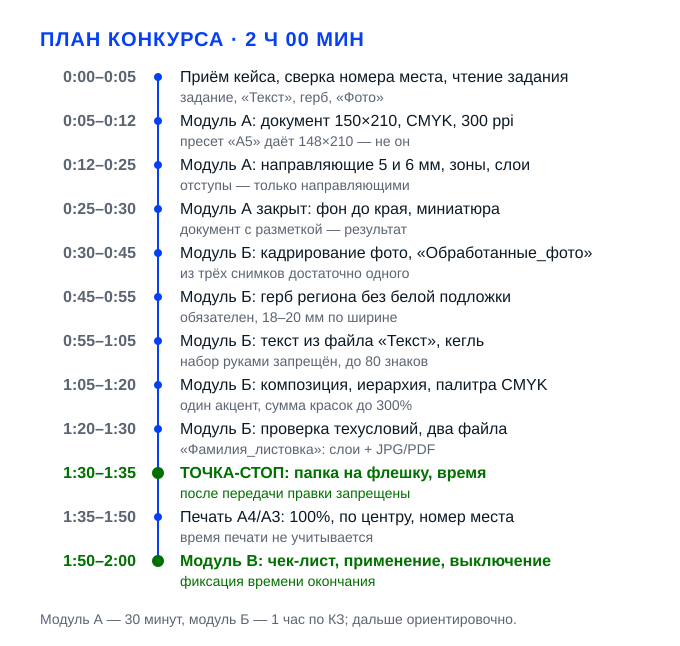
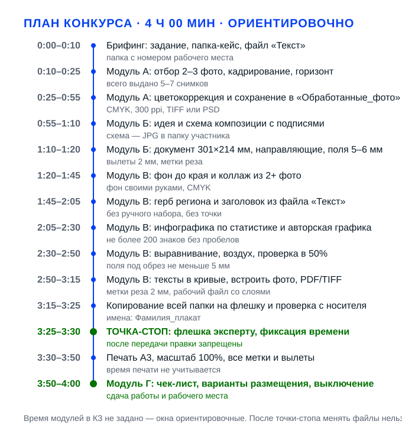
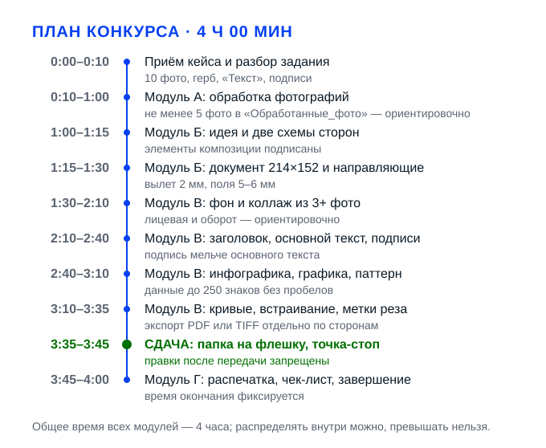

Дизайн плаката (Р)
Задания ниже — официальные файлы «Абилимпикс» (источник: abilympics-russia.ru), разложенные по категориям. Решения написаны по тексту задания, регламенту и критериям оценки; в них указано, что именно проверяет эксперт.
Школьник
14–16 лет, базовый уровень заданияВыдержка из официального конкурсного задания: страницы, относящиеся к категории «Школьник» (стр. 4–5, 8–9 источника).
Пошаговое решение
Задание для школьников — односторонняя информационная листовка вертикального формата на тему Года единства народов России, показанная на материале Башкортостана. Время жёсткое: модуль А — 30 минут на документ и разметку, модуль Б — 1 час на эскиз, сохранение и подпись файлов, затем точка-стоп, печать и короткий модуль В с самоанализом. Работа делается только из выданного кейса: герб региона, три фотографии на выбор и текст объёмом 6–10 слов, не более 80 знаков с пробелами. Технические условия тоже считаются: листовка 210×150 мм при книжной ориентации, CMYK, 300 ppi (118 пикс/см), отступы 5–6 мм, направляющие, две версии файла и имя с фамилией. Слабое место почти у всех — не композиция, а дисциплина файла: сдвинутая ориентация, RGB вместо CMYK, текст, набранный руками, и забытая вторая версия. Поэтому сначала настройки и разметка, потом творчество.

Задача 1. Разобрать кейс и создать документ по техусловиямМодуль А · 30 минут · документ и настройки
Первые тридцать минут решают, будет ли вам чем работать дальше. Здесь вы принимаете папку-кейс, сверяете её номер с рабочим местом, выписываете из задания все цифры и создаёте документ ровно того размера, режима и разрешения, которых требует КЗ. Ошибка в этом шаге не выглядит ошибкой: макет рисуется, фотографии вставляются, всё красиво — а на выходе выясняется, что страница в RGB, размер взят от пресета «A5» и равен 148×210 вместо 150×210, и половину работы приходится пересобирать в последние двадцать минут. Поэтому проверяем каждую настройку сразу.
Действие 1.1. Принять кейс и выписать параметры задания
Шаг 1.1.1
Садимся за рабочее место, находим на рабочем столе папку «Дизайн_плаката_школьник_№ места» и сверяем номер в названии с номером, приклеенным на столе или мониторе. Внутри должны лежать четыре вещи: текстовый документ с заданием, файл «Текст», изображение герба региона и папка «Фото» с тремя снимками, плюс пустая папка «Обработанные_фото». Если номер не совпал или папка не открывается, сразу поднимаем руку и зовём технического эксперта — до старта, а не через полчаса.
КЗ прямо говорит, что папки-кейсы формируются по категориям и номер рабочего места проставляется в названии, а работу вы сдаёте именно в эту папку. Чужая папка — это чужие фото и чужой текст: если вы соберёте листовку из материалов соседа, эксперт увидит несоответствие задания вашему номеру, и работа перестаёт быть вашей. Потерянные десять минут на сверку дешевле, чем потерянный модуль.
Проверьте по списку: номер в названии папки совпадает с вашим местом, внутри видны «Текст», герб, папка «Фото» ровно с тремя изображениями и пустая «Обработанные_фото». Откройте «Фото» и убедитесь, что все три файла открываются двойным щелчком, а не выдают ошибку формата.
Типичная ошибка — начать работу в папке, которая лежит не там, например сохранять промежуточные файлы на рабочий стол или в «Загрузки»: в момент сдачи вы копируете на флешку папку с материалами, а вашего макета в ней нет. Вторая ошибка — заметить, что фото не открывается, уже в середине модуля Б, когда время на выбор снимка упущено.
Эксперт обходит места в первые минуты и смотрит, у всех ли открыт свой кейс; дальше он проверяет только итоговую папку, и чужой или перепутанный номер виден ему сразу по имени файлов.
Шаг 1.1.2
Открываем печатное задание или электронный документ из кейса и читаем его с карандашом: выписываем на лист-черновик семь чисел — формат 210×150 мм, книжная ориентация, режим CMYK, разрешение 300 ppi или 118 пикс/см, отступы 5–6 мм, две версии файла, имя «Фамилия_листовка». Туда же дописываем ограничения по содержанию: герб обязателен, фото от одного до трёх, текст копируется из файла «Текст» и содержит не более 80 знаков.
Это способ не держать цифры в голове под волнением. КЗ перечисляет технические условия отдельным списком из девяти пунктов, и каждое нарушение видно на проверке: не тот формат — листовка не встанет в печать по размеру, RGB — цвета на бумаге уедут, отступы меньше 5 мм — текст упрётся в край и при печати на А4 часть композиции уйдёт за границу листа. Список ещё и экономит время: к нему возвращаются перед сохранением.
На черновике должно быть семь строк с числами и две строки про содержание. Проговорите их про себя: если вы не можете назвать разрешение и отступ, не открывая задание, значит, список не дописан. Держите лист рядом с клавиатурой, а не в сумке.
Ошибка новичка — прочитать только первый абзац про тему и начать рисовать: тема запомнилась, а техусловия остались непрочитанными. Вторая ошибка — выписать формат как «А5» и дальше работать по памяти, получив 148×210 вместо указанных 150×210.
Эксперт в модуле А оценивает, создан ли документ соответствующего формата с разметкой композиции, — то есть смотрит именно на те параметры, которые вы сейчас выписали.
Шаг 1.1.3
Открываем файл «Текст» и читаем его целиком, не копируя: смотрим, сколько там слов, есть ли переносы, кавычки-ёлочки и буква «ё», нет ли опечаток в названии региона. Затем открываем по очереди все три фотографии и помечаем для себя, где главный объект, где свет, а где пустое место под текст. То же делаем с гербом: смотрим, на белой он подложке или вырезан по контуру.
КЗ выдаёт школьникам короткий текст объёмом 6–10 слов, не более 80 знаков с пробелами, и три фотографии, из которых достаточно одной, но можно взять все. Пока вы не увидели снимки, нельзя решать композицию: горизонтальный кадр с широкой панорамой диктует одну схему, а вертикальный портрет — совсем другую. Пять минут осмотра экономят потом двадцать минут перестановок.
Вы можете своими словами сказать, о чём текст и какой из трёх снимков сильнее по композиции и почему. Если про какой-то снимок вы не помните, где в нём свет, откройте его снова — это и есть проверка. Открывайте каждый файл по очереди, а не по миниатюрам.
Частая ошибка — открыть только первое фото и строить макет вокруг него, а потом обнаружить, что второй снимок лучше подходит по цвету к фону. Вторая — не заметить, что у герба белая подложка, и получить на цветном фоне белый квадрат.
Эксперт смотрит на соответствие листовки выданным материалам: снимок должен быть из папки «Фото», герб — из кейса, текст — из файла «Текст», а не найденный в интернете.
Действие 1.2. Выбрать программу и создать документ 210×150 мм
Шаг 1.2.1
Выбираем редактор и больше его не меняем. Если на площадке стоит Photoshop или GIMP — делаем в нём: растровый редактор прощает работу с фотографиями и слоями, а на формате 210×150 мм при 300 ppi документ весит немного. Если стоит CorelDRAW, Illustrator или Inkscape — делаем в векторном: удобнее с текстом и гербом, а фото вставляется как растровый объект. Смотрим на панель задач, а не на советы соседа.
КЗ разрешает выполнять листовку в программе растровой или векторной графики по выбору участника или организаторов, и это значит, что «правильной» программы нет — есть та, которую вы знаете. Пересаживание с места на место в середине модуля стоит дорого: другой набор горячих клавиш, другой способ ставить направляющие, потерянные двадцать минут. Умение выбрать инструмент под задачу эксперты тоже видят.
Программа открыта, документ создаётся, панель слоёв (или панель объектов) на виду. Проверьте, что в меню «Файл → Создать» вы видите поля для размера и цветового режима, — если интерфейс незнаком, лучше сразу выбрать второй знакомый редактор, чем изучать его по ходу.
Ошибка — сесть в программу, которую «видели на ютубе», и потратить модуль А на поиск инструмента кадрирования. Вторая — работать в двух программах одновременно, перенося туда-сюда фотографии: версии расходятся, и в папке остаётся не тот файл.
Эксперт фиксирует, в какой программе сделан макет, и при равном результате отдаёт предпочтение уверенной работе инструментами, а не механическому набору операций.
Шаг 1.2.2
Создаём новый документ вручную, а не из пресета. В Photoshop: «Файл → Новый», ширина 150 мм, высота 210 мм, разрешение 300 пикселей на дюйм (это то же самое, что 118 пикс/см), цветовой режим CMYK, 8 бит, фон белый, профиль оставляем тот, что предложен площадкой. В CorelDRAW: размер страницы 150 на 210 мм, книжная ориентация, режим CMYK, разрешение растровых эффектов 300 dpi. В Illustrator: тот же размер, профиль печати, растровые эффекты 300 ppi.
В КЗ формат записан как «А5 (210×150 мм), вертикальное положение, книжная ориентация», и речь идёт о конкретных миллиметрах, а не о стандартном листе А5 148×210. Пресет «A5» подставит свои 148×210: документ выйдет на два миллиметра уже нужного по ширине, поля станут непропорциональными, а печать в масштабе 100% даст листовку не того размера. Режим CMYK обязателен, потому что работа печатается на цветном принтере и оценивается в печатном виде.
Откройте «Размер изображения» или «Свойства документа» и прочитайте три цифры: 150 мм, 210 мм, 300 ppi, режим CMYK. Высота должна быть больше ширины — если наоборот, вы создали альбомную страницу и её надо перевернуть сейчас, а не после сборки.
Самая частая ошибка — взять готовый пресет и не посмотреть миллиметры: внешне документ выглядит нормально, но он уже, и фото, рассчитанное на 150 мм, приходится растягивать. Вторая — оставить RGB и заметить это на экспорте, когда цвета уже подобраны под экран.
Эксперт проверяет параметры файла в момент оценки модуля А: формат, ориентация, режим и разрешение — первый фильтр, через который проходит работа. Если параметр не тот, дальше он смотрит работу с оговоркой, и часть баллов уже не вернуть.
Шаг 1.2.3
Проверяем документ до того, как что-то нарисовано. Включаем линейки по Ctrl+R (в CorelDRAW — меню «Просмотр → Линейки»), правым щелчком по линейке ставим единицы в миллиметры и перетаскиваем начало координат в левый верхний угол страницы, чтобы нули совпали с её краем. Включаем привязку к направляющим и к границам документа, включаем сетку, если она помогает держать ритм. Сразу сохраняем файл в свою папку под именем «Фамилия_листовка», чтобы дальше работать с автосохранением.
КЗ требует обязательно использовать направляющие для отступов, выравнивания текста и фото, а линейки с миллиметрами — единственный способ поставить их точно, а не на глаз. Сдвинутое начало координат сбивает все дальнейшие измерения: вы поставите направляющую «5 мм», а она окажется на 3 или 12 мм от края, и ошибка разойдётся по всей композиции. Раннее сохранение в правильную папку страхует от потери работы при зависании.
Линейки показывают миллиметры, ноль стоит в левом верхнем углу страницы, направляющая, поставленная на 10, действительно стоит на 10 мм от края — проверьте это одной направляющей и инструментом «Линейка» или панелью «Инфо», где видны координаты курсора.
Ошибка — оставить линейки в пикселях и потом искать «5 мм» на глаз: 5 мм при 300 ppi — это 59 пикселей, и промах на 20 пикселей уже нарушает допуск. Вторая — сохранить файл под именем «Untitled-1» на рабочем столе и вспоминать об этом на сдаче.
Эксперт в модуле А смотрит на рабочую область: включены ли линейки, стоят ли направляющие, лежит ли файл в папке участника — по этим признакам видно, умеет ли участник настраивать инструмент.
Действие 1.3. Продумать композицию на бумаге
Шаг 1.3.1
Берём чистый лист и рисуем на нём три миниатюры размером примерно 4 на 6 сантиметров — это уменьшенная копия вашей будущей листовки в той же пропорции 150 к 210. В каждой миниатюре прямоугольниками показываем, где стоит герб, где фото, где текст, и какой из элементов главный. На три варианта уходит не больше пяти минут: один с крупным фото на всю ширину, второй с фото в верхней трети и большим воздухом, третий с вертикальным фото сбоку и текстом в свободной половине.
Композиция — единственный пункт, который нельзя проверить настройками: её или видно, или нет. На бумаге вы за минуту видите, что герб и заголовок спорят за одно место, а на экране это замечается после часа работы, когда переставлять уже дорого. Кроме того, КЗ оценивает гармоничное распределение элементов, а миниатюра — единственное место, где решение видно целиком за минуту, а не после часа работы в редакторе.
Три миниатюры нарисованы, в каждой читается главный элемент, и вы можете назвать, чем варианты отличаются друг от друга. Если все три получились одинаковыми, значит, вы рисуете один вариант трижды — попробуйте поменять масштаб фото, а не его положение.
Ошибка — начать рисовать сразу в программе «как пойдёт»: через полчаса на экране оказывается нагромождение из трёх равных по весу блоков без центра. Вторая — рисовать миниатюру в пропорции А4 или квадрата, а потом удивляться, что в узкой листовке композиция не складывается.
Эксперт оценивает гармоничное распределение элементов на странице и целостность композиции — то, что закладывается именно на этом шаге, а не на последнем.
Шаг 1.3.2
Выбираем одну миниатюру и дорисовываем в ней вертикальный ритм: сверху зона герба и заголовка высотой примерно 55–70 мм, в середине — фотография или фотоблок, внизу — свободное поле и, если нужно, короткая подпись. Отмечаем, что главное: если главное фото — текст идёт мелким кеглем и уходит вниз, если главное слово — фото становится фоном и приглушается. Рядом с миниатюрой записываем две-три палитры словами: например «глубокий синий фон, белый текст, медовый акцент».
Правило одной доминанты — то, чем отличается листовка от набора картинок: зритель должен за три секунды понять, куда смотреть первым, вторым и третьим. КЗ требует гармоничного распределения всех элементов и обязательного присутствия герба, текста и фото, но не говорит, что все они равны: равные по весу элементы превращают листовку в кашу, и балл за композицию уходит. Записанная палитра экономит время на подборе цвета позже.
В выбранной миниатюре видно невооружённым глазом, что читается первым. Проверьте прищуренным взглядом: если прищуренными глазами вы видите одно тёмное пятно и одну светлую зону — иерархия есть, если всё сливается в серый прямоугольник — её нет.
Ошибка — сделать герб самым крупным элементом «потому что обязателен»: он формальный знак, а не главный герой листовки. Вторая — распределить элементы равномерно по всей высоте, без полей воздуха, из-за чего листовка выглядит зажатой.
Эксперт смотрит на работу целиком с расстояния и отмечает, есть ли визуальный центр и не спорят ли элементы друг с другом. При разборе он показывает пальцем на центр листа и спрашивает, что здесь главное, — и ответ участника совпадает с тем, что видно.
Шаг 1.3.3
На той же миниатюре прочерчиваем внутреннюю рамку на расстоянии 5 мм от каждого края и вторую, на 6 мм, — это границы информационного поля, внутрь которых должны попасть все тексты и фотографии. Подписываем у рамок цифры, чтобы не забыть. Проверяем, что ни один элемент в миниатюре не выходит за внутреннюю линию, а фон при этом доходит до самого края листа.
КЗ устанавливает отступы информационного поля от границ фона внутрь до текстов и фото не менее 5–6 мм, и это не эстетическое пожелание, а допуск печати: при печати листовки на листе А4 в масштабе 100% край обрезается и подрезается по-разному, а поле меньше 5 мм начинает «резать» буквы. Заодно рамка задаёт воздух: даже плотная композиция с полями выглядит дороже, чем та же композиция, растянутая в край.
На миниатюре нарисованы две рамки, все элементы внутри 6-миллиметровой, и вы можете показать пальцем, где проходит граница. Сверьтесь с заданием: там та же цифра 5–6 мм и ссылка на схему отступов в приложении.
Ошибка — поставить фото так, что оно заходит на самый край: на экране это выглядит смело, на распечатке часть изображения срезается, а поле становится нулевым. Вторая — наоборот, отступить 15 мм «для надёжности» и получить листовку с пустыми полями и сжатой серединой.
Эксперт проверяет отступы измеримо, линейкой по распечатке или инструментом по файлу, и здесь работает допуск, а не впечатление. Он же проверяет, не прилипли ли буквы к краю: зазор меньше 5 мм читается как ошибка верстки даже без линейки.
Задача 2. Разметить структуру листовки направляющимиМодуль А · конец 30-минутного окна · разметка
Разметка — это скелет, к которому вы будете привязывать каждый элемент. К концу модуля А в документе должны стоять направляющие по всем четырём краям на 5 и 6 мм, горизонтальные линии под зоны герба, фото и подписи, а также названные слои, чтобы в горячке модуля Б не таскать мышью чужие объекты. Фон тоже задаётся здесь: он определяет, каким будет контраст текста и как лягут фотографии. Модуль А оценивают по результату «создан документ с разметкой композиции», поэтому пустая страница с красивым фоном, но без направляющих — это половина работы, а не начало.
Действие 2.1. Поставить направляющие информационного поля
Шаг 2.1.1
Проверяем, что линейки включены и показывают миллиметры, а ноль стоит в левом верхнем углу страницы. В Photoshop перетаскиваем курсор с верхней линейки вниз, с левой — вправо; в CorelDRAW направляющие ставятся щелчком по линейке, в Illustrator — тем же перетаскиванием. Первую вертикальную ставим на 5 мм от левого края, вторую — на 145 мм (150 минус 5), первую горизонтальную — на 5 мм сверху, вторую — на 205 мм (210 минус 5).
КЗ требует отступы не менее 5–6 мм от границ фона внутрь до текстов и фото и отдельным пунктом обязывает выставлять отступы и выравнивание именно направляющими. Направляющая на 5 мм — это граница допуска, ниже которой элемент уже нарушает задание. Считаем координаты от края страницы, а не «на глаз от центра»: только так четыре линии дают симметричное поле.
На странице видны четыре линии: 5 и 145 мм по горизонтали, 5 и 205 мм по вертикали. Встаньте курсором на каждую и прочитайте координату в панели «Инфо» — расхождение больше половины миллиметра означает, что направляющая поставлена неточно.
Ошибка — ставить направляющие по видимой границе холста, когда масштаб 25% и край страницы смещён: линии уезжают на 2–3 мм. Вторая — ставить только две направляющие слева и сверху, забыв про правую и нижнюю, из-за чего правая часть композиции съезжает.
Эксперт в модуле А смотрит именно на наличие размеченного информационного поля: четыре направляющие по периметру — самый быстрый способ показать, что разметка сделана.
Шаг 2.1.2
Добавляем второй контур — направляющие на 6 мм: 6 и 144 мм по ширине, 6 и 204 мм по высоте. Между пятью и шестью миллиметрами получается тонкая полоса-коридор: элементы можно ставить в любом месте этого коридора, но не ближе к краю. Если вам удобнее работать с одним полем, оставьте 6 мм как основное и держите 5 мм как контроль: так у вас всегда есть запас на подрезку.
Два контура решают практическую задачу: КЗ задаёт диапазон 5–6 мм, и на печати часть листа обрезается с допуском. Элемент, стоящий на 5 мм, при подрезке может потерять кромку, а стоящий на 6 мм — почти наверняка сохранится. Кроме того, коридор помогает выравнивать разные объекты: фотография по одной линии, текст по другой, и композиция выглядит собранной.
В документе восемь направляющих, образующих двойную рамку. Проверьте, что линии не перепутаны местами — правая на 144, а не на 145, и что ни одна направляющая не оказалась за пределами страницы. Если линия стоит не там, перетащите её заново и снова прочитайте координату.
Ошибка — поставить все элементы ровно на внешнюю линию 5 мм и получить на печати обрезанные буквы. Вторая — оставить коридор, но игнорировать его: половина объектов стоит на 5 мм, половина на 6, и вертикальные края «пляшут» на миллиметр, что глаз замечает сразу.
Эксперт при оценке отступов измеряет расстояние от края до самого близкого элемента: если хотя бы один текст стоит ближе 5 мм, пункт считается нарушенным.
Шаг 2.1.3
Запираем направляющие, чтобы случайно не сдвинуть их мышью: в Photoshop — «Просмотр → Заблокировать направляющие» (или Ctrl+Alt+;), в CorelDRAW — закрепление направляющих в диспетчере объектов, в Illustrator — «Просмотр → Направляющие → Заблокировать». Затем включаем привязку к направляющим и к границам документа, а привязку к сетке отключаем, если сетка не совпадает с нужным шагом.
Заблокированные направляющие — страховка от самой обидной ошибки в этой работе: сдвига рамки при перетаскивании фотографии. Привязка нужна, чтобы объект сам «щёлкал» к линии и не оставался на 4,7 мм вместо 5. Если привязка включена к сетке с шагом 10 мм, вы будете выравнивать по ней, а не по информационному полю, и отступы уедут. КЗ обязывает выставлять отступы направляющими, так что разметка должна дожить до сдачи целой.
Потяните любую направляющую мышью — она не двигается. Подведите к линии прямоугольник: он «прилипает» к ней. Проверьте привязку на маленьком объекте, чтобы не испортить разметку. Затем попробуйте сдвинуть рамку текста — она должна встать на линию без зазора.
Ошибка — держать привязку только к сетке: объекты встают по 10-миллиметровой сетке и игнорируют поля. Вторая — разблокировать направляющие в конце модуля Б и сдвинуть их, когда уже всё выровнено. Если рамка поехала, вся композиция съедет на 2–3 мм, и это видно на печати.
Эксперту важно не только наличие полей, но и аккуратность выравнивания: он смотрит на края фотографий и строк текста и видит, держатся ли они одной линии.
Действие 2.2. Разметить зоны и назвать слои
Шаг 2.2.1
Ставим горизонтальные направляющие под зоны композиции по вашей миниатюре. Для схемы «герб и заголовок сверху, фото в середине, подпись внизу» это примерно 40, 70, 150 и 195 мм от верхнего края. Точные цифры берите из миниатюры: если в ней заголовок занимал треть высоты, линия стоит на 70 мм, а не на 100. Сразу подписывайте зоны в уме: верхний блок, средний блок, нижний блок.
Зоны — это способ не собирать композицию заново после каждой правки. Когда место под фото ограничено линией, вы не растягиваете снимок на всю страницу «чтобы влезло», а обрезаете его по рамке, и пропорции остаются. КЗ требует гармоничного распределения элементов, а линии зон как раз и дают эту гармонию: одинаковые поля между блоками выглядят профессионально, разные — случайно.
Горизонтальные линии стоят, и вы можете показать, где заканчивается верхний блок и начинается средний. Между блоками должен оставаться воздух не меньше 5 мм, иначе фотография и текст слипнутся в одно пятно.
Ошибка — поставить линии зон «примерно» и потом обнаружить, что заголовок не помещается и его надо уменьшать до нечитаемого кегля. Вторая — сделать зоны равными по высоте, хотя по миниатюре фото должно занимать половину листа.
Эксперт видит по готовой листовке, ровные ли поля между блоками; при разборе он показывает, что нарушение ритма начинается именно с неразмеченных зон.
Шаг 2.2.2
Размечаем вертикаль под текст: если текст будет стоять в одну колонку, ставим две направляющие на 6 и 144 мм, и текст идёт от края до края внутри поля. Если хочется сложнее, делим ширину на двенадцать колонок с промежутком 3–4 мм и показываем сетку полупрозрачным слоем, а сами элементы ставим по колонкам. Для формата 150 мм достаточно одной колонки или двух по 66 мм.
КЗ требует использовать направляющие для выравнивания текста, и здесь важна не красота сетки, а предсказуемость: короткий текст из 6–10 слов на узкой листовке выигрывает от одной широкой колонки, потому что не рвётся на три строки по два слова. Двенадцать колонок на 150 мм — это шаг около 9 мм, комфортный для мелких подписей, но избыточный для одного заголовка.
Текст, поставленный в документ, начинается и заканчивается на линиях поля, а не «около». Проверьте это на черновой строке: наберите любое слово, растяните рамку до направляющих и посмотрите, совпадают ли края.
Ошибка — сделать колонку шире информационного поля, чтобы текст «дышал», и вывести строки за 5-миллиметровую границу. Вторая — поставить сетку, но выравнивать объекты вручную, игнорируя её. В итоге текст читается как случайные строки, а не как единый блок.
Эксперт смотрит на левый и правый край текстового блока: они должны совпадать с полями, иначе композиция выглядит неопрятной. Отдельно он смотрит нижнюю строку: если она выходит за поле хотя бы на 2 мм, композиция считается недовыровненной.
Шаг 2.2.3
Создаём слои и называем их по-русски, чтобы не путаться: «Фон», «Фото», «Герб», «Текст», при необходимости «Подложка». Фон запираем отдельным слоем и блокируем его от перемещения, фото и герб держим каждый на своём слое, текст — живой, не в растре. Порядок сверху вниз: текст, герб, фото, фон. Если работаете в векторном редакторе, раскладываете объекты по слоям в диспетчере объектов теми же именами.
Слои — это то, что КЗ требует сохранить в рабочем файле с открытыми слоями, и одновременно ваш инструмент дисциплины: с четырьмя названными слоями вы за секунду находите нужный элемент, а не щёлкаете по всей странице, сдвигая соседние объекты. Заблокированный фон спасает от главной аварии — случайного перетаскивания заливки вместе с картинкой.
В панели слоёв четыре-пять строк с осмысленными именами, ни одного «Слой 1», фон заблокирован, объекты не лежат в одном слое вперемешку. Проверьте, что при клике по фотографии выделяется именно фотография, а не весь макет.
Ошибка — рисовать всё в одном слое: потом невозможно ни подвинуть фото, ни заменить текст, ни сохранить файл так, как требует задание. Вторая — назвать слои «слой 1, слой 2» и через полчаса забыть, где что.
Эксперт открывает рабочий файл и смотрит структуру слоёв: наличие слоёв — прямое требование задания, а их порядок показывает, понимает ли участник, как собирается макет.
Действие 2.3. Задать фон листовки
Шаг 2.3.1
Выбираем цвет фона на бумаге или в палитре, но обязательно в CMYK. Для темы единства народов спокойно работают глубокий синий с белым, тёплый песочный с тёмно-коричневым или белый с цветным акцентом. Смотрим на значения: у синего, например, C 95 M 75 Y 0 K 0, у песка — C 8 M 15 Y 35 K 0. Следим, чтобы сумма красок не превышала 300%: например, C 60 M 50 Y 40 K 40 даёт 190% — это нормально, а насыщенный тёмный из четырёх каналов по 100% даст 400% и на печати поплывёт пятном.
Фон участник задаёт самостоятельно — это единственный элемент, которого нет в кейсе, и именно он держит всю композицию: от его светлоты зависит, будет ли читаться текст и нужна ли подложка под фотографией. Сумма красок важна: работа печатается на цветном принтере, а не в типографии, перегруженный цвет принтер не успевает просушить, и на листе появляются полосы и пятна. КЗ оставляет фон участнику, но режим CMYK оговаривает отдельным пунктом.
Фон залит по всей странице, цвет на панели «Инфо» показывает четыре значения CMYK, а не RGB, и сумма этих значений в пределах 300%. Проверьте цвет на маленьком прямоугольнике, прежде чем заливать весь лист.
Ошибка — выбрать цвет в RGB-палитре и перевести его автоматически: насыщенный электрический синий из RGB в CMYK становится тусклым и грязным, и на печати он не совпадает с экраном. Вторая — залить фон «чёрным» из четырёх каналов, получив на распечатке жирное мажущееся пятно.
Эксперт смотрит на печатный лист: ровная ли заливка, нет ли полос и не «грязнит» ли фон края. Плотные и грязные заливки он отмечает на распечатке, потому что на бумаге они видны сильнее, чем на мониторе в CMYK-просмотре.
Шаг 2.3.2
Заливаем фон ровно по размеру страницы — 150 на 210 мм, без вылетов: у школьников обрезной формат совпадает с форматом фона, и задача ставится именно так. Заливку делаем на слое «Фон» прямоугольником с привязкой к границам документа, а не кистью: кисть даёт пятна и выходит за край. Если по композиции нужен градиент, задаём его от более светлого верха к более тёмному низу, чтобы свет падал сверху, как в жизни.
КЗ задаёт размер страницы А5 210×150 мм и требует, чтобы фон доходил до границ, а информационное поле отступало внутрь на 5–6 мм. Прямоугольник по границам документа гарантирует, что при печати в масштабе 100% не останется белой полосы у края. Направление градиента сверху вниз — привычная для глаза схема освещения, обратный градиент выглядит как перевёрнутая картинка.
Увеличьте масштаб до 200% и пройдите по всем четырём краям: фон доходит до линии страницы без белых щелей и без выхода за неё. Проверьте углы: там чаще всего остаются светлые точки, а верхний левый угол страдает первым, потому что заливка начинается именно с него.
Ошибка — залить фон, оставив у края полосу в 1–2 мм: на экране её не видно, на печати она превращается в белую рамку с одной стороны. Вторая — вывести заливку за пределы страницы и потом не понять, почему при экспорте появился лишний белый кант.
Эксперт проверяет печатный лист на просвет и по краю: ровная заливка до края — признак аккуратной работы. Отдельно он смотрит углы листа: именно там заливка чаще всего не доходит до края на 1–2 мм.
Шаг 2.3.3
Проверяем фон на совместимость с материалами. Кладём поверх фона по одному изображению из кейса — фото и герб — и смотрим, не сливаются ли они с заливкой. Если светлое фото теряется на светлом фоне, добавляем под него тёмную подложку с прозрачностью 20–30% или тонкую рамку. Если герб на белой подложке — сразу видно, что её надо убрать. После проверки временные вставки удаляем.
Проверка на живых объектах — единственный способ поймать проблему контраста до того, как вся композиция собрана. КЗ требует вставить герб обязательно и использовать выданные фото, и если герб исчезает на фоне, требование формально выполнено, а визуально элемента нет — за это снимают и за композицию, и за использование материалов. Прозрачная подложка решает проблему, не ломая палитру.
Каждый из трёх элементов виден на фоне с расстояния вытянутой руки. Проверьте на уменьшении до 25%: если фото превращается в серое пятно, контраста не хватает. Если фото теряется, добавьте подложку и проверьте снова, пока элемент не станет читаемым.
Ошибка — подобрать фон «по настроению», не проверив его с фотографиями: на печати снимок и фон сливаются в однотонный прямоугольник. Вторая — спасать контраст жёсткой белой обводкой вокруг всего, что превращает листовку в набор наклеек.
Эксперт оценивает целостность композиции и читаемость: элементы должны читаться на фоне, а не спорить с ним. Ему важно увидеть, что участник проверял макет на реальных материалах, а не собирал элементы по отдельности.
Задача 3. Подготовить материалы: фото, герб и текстМодуль Б · 1 час · обработка и импорт
Модуль Б начинается не с рисования, а с деталей. Три фотографии нужно посмотреть, выбрать и привести к одному виду: кадрировать под вертикаль, поправить яркость и насыщенность, сохранить копии в папку «Обработанные_фото». Затем в макет встаёт герб региона — обязательный элемент, который чаще всего портит вид белым прямоугольником вокруг щита. И только после этого копируется текст из файла «Текст»: КЗ запрещает набирать его руками, и это проверяется сравнением с источником, вплоть до знаков препинания. На всё уходит половина модуля Б.
Действие 3.1. Выбрать и обработать фотографии
Шаг 3.1.1
Открываем папку «Фото» и просматриваем все три снимка в программе просмотра, а не по миниатюрам: смотрим резкость, где стоит главный объект, куда падает свет и есть ли в кадре пустое место, куда можно поставить текст. Выбираем один снимок как основной, второй — как возможное дополнение, третий оставляем в резерве. Решение фиксируем вслух или на листе: «основное — второе фото, потому что в нём есть воздух справа».
КЗ выдаёт школьникам три фотографии, из которых достаточно выбрать одну, но можно вставить все. Выбор — не вкусовщина: снимок с пустым пространством справа даёт место для заголовка, а плотный кадр без воздуха заставляет лепить текст поверх лиц. Ограничение времени делает выбор обязательным: пока вы не решили, вы не начинаете обработку, а без обработки снимок не встанет в макет по размеру.
У вас есть один основной снимок, и вы можете объяснить выбор одним предложением. Проверьте, что файл действительно лежит в папке «Фото» кейса, а не открыт из интернета или из чужой папки. Заодно убедитесь, что все три снимка открылись: битый файл лучше обнаружить до начала работы.
Ошибка — взять первый снимок по порядку, не посмотрев остальные, и потом весь модуль подгонять композицию под неудачный кадр. Вторая — решить вставить все три без необходимости и получить на листовке 150×210 три мелкие картинки, каждая из которых ничего не показывает.
Эксперт смотрит, использованы ли именно выданные материалы и уместен ли выбор: снимок должен поддерживать тему, а не просто заполнять место. Отдельно он отмечает, не взято ли фото из интернета: посторонний снимок виден по несоответствию теме и качеству.
Шаг 3.1.2
Открываем выбранный снимок в растровом редакторе и кадрируем под ту зону, которую ему отвели в миниатюре. Инструмент «Рамка» (Crop) ставим с фиксированным соотношением сторон — например 3 к 4 для вертикальной зоны или 1 к 1 для квадратной вставки, — и двигаем рамку так, чтобы главный объект оказался не в центре, а по правилу третей. Границы подтягиваем к краю кадра, а не растягиваем изображение.
КЗ говорит, что для обработки фотографий желательно использовать инструменты кадрирования и коррекции в программе растровой графики, — и кадрирование здесь главное, потому что формат листовки вертикальный, а выданные снимки могут быть горизонтальными. Растягивание вместо кадрирования меняет пропорции: люди становятся шире или выше, и это заметно на печати. Правило третей даёт кадру динамику и оставляет место для текста.
Кадр обрезан по нужной пропорции, главный объект целый, ничего важного не отрезано по краям, пропорции не искажены. Проверьте, что инструмент показывает именно то соотношение, которое вы выбрали, а не «свободное».
Ошибка — тянуть за угол изображения и сплющивать человека: лица вытягиваются, и работа сразу выглядит неумелой. Вторая — обрезать кадр так, что от главного объекта остаётся половина, потому что рамка стояла по центру.
Эксперт оценивает качество обработки фото и отсутствие искажений: вытянутые пропорции видны даже на небольшом размере. Он сравнивает кадр с исходником и смотрит, не потерялось ли в обрезке главное, ради чего снимок выбирали.
Шаг 3.1.3
Корректируем тональность: открываем «Уровни» или «Кривые», сдвигаем чёрную точку до начала гистограммы, белую — до её конца, и добиваемся, чтобы на снимке были и настоящие тени, и светлые участки. Затем добавляем насыщенность 5–15 единиц, если снимок выглядит блёклым, и лёгкую резкость по контуру. Если фотографий несколько, приводим их к одному цветовому настроению, а не оставляем одну тёплой, другую холодной.
Печать на цветном принтере съедает контраст: то, что на экране выглядит сочно, на бумаге становится серым. Небольшая коррекция уровней возвращает снимку глубину, а единое цветовое настроение связывает разные кадры в одну листовку. КЗ относит коррекцию яркости и насыщенности к обязательным операциям в модуле Б, поэтому обработанное фото отличается от исходного, и это нормально.
На снимке видны детали в тенях и в светах, нет провалов в чёрное и пересветов в белое, цвет кожи естественный. Сравните до и после по гистограмме: она должна занимать всю ширину, а не сбиваться в один край.
Ошибка — «улучшать» фото до пластиковой гладкости, выкрутив насыщенность на максимум: на печати появляются грязные пятна в тенях. Вторая — не сохранить копию в «Обработанные_фото», и дальше в макет попадает исходный файл.
Эксперт смотрит на результат обработки в сопоставлении с исходником и отмечает, появились ли детали, а не просто «стало ярче». На распечатке он смотрит тени: если в них пропали детали, обработка считается формальной, а не рабочей.
Действие 3.2. Вставить герб региона и убрать подложку
Шаг 3.2.1
Открываем изображение герба из кейса и смотрим, в каком оно формате: PNG с прозрачностью, JPG на белом фоне или векторный SVG. В растровом редакторе вставляем его как смарт-объект или отдельный слой через «Файл → Поместить», в векторном — через «Импорт». Сразу проверяем эффективное разрешение: если герб маленький и вы увеличиваете его больше чем на 120%, он станет мягким, и лучше уменьшить его место в композиции, чем растягивать.
Герб региона — обязательный элемент композиции по КЗ, и его отсутствие обнуляет целый пункт. Одновременно это самый «тяжёлый» элемент по смыслу: он должен быть узнаваемым, то есть достаточно крупным и резким. Увеличение растрового герба выше исходного размера всегда даёт мыло, и на распечатке А3 это видно сразу.
Герб вставлен на отдельный слой, его размер на странице не меньше 18–20 мм по ширине, изображение резкое. Посмотрите на щит в масштабе 100%: контур и мелкие детали читаются. Если контур герба расплывается, значит, изображение растянуто и его надо уменьшить.
Ошибка — вставить герб, растянув его на треть листа: он становится главным элементом и разваливает иерархию. Вторая — уменьшить герб до 8–10 мм «чтобы не мешал», и тогда его невозможно рассмотреть, что формально элемент есть, а фактически нет.
Эксперт проверяет наличие герба и его качество: он должен быть читаемым и не деформированным. Его интересует и размер, и резкость: мелкий герб он считает невыполненным требованием, а растянутый — браком.
Шаг 3.2.2
Убираем белый прямоугольник вокруг герба. Если файл с прозрачностью — просто ставим слой с режимом «Умножение» (Multiply) и белое исчезает на любом фоне. Если фон белый и непрозрачный, выделяем его инструментом «Волшебная палочка» с допуском 20–30 и удаляем, затем чистим края ластиком с жёсткостью 60–70%: жёсткий ластик оставляет рваный контур, мягкий съедает детали. В векторном редакторе используем трассировку по контуру или маску.
Белый квадрат вокруг герба — самая заметная ошибка школьных работ: на цветном фоне он выглядит как наклейка и разрушает композицию, за которую дают балл. Режим «Умножение» работает потому, что белый цвет при умножении не меняет фон, а тёмные штрихи герба остаются. Чистка краёв нужна, чтобы не было белой каймы от сглаживания. КЗ требует герб обязательно, поэтому его качество попадает в оценку дважды — за наличие и за исполнение.
Герб стоит на цветном фоне без белой рамки, по контуру нет светлой каймы и рваных пикселей. Проверьте, увеличив до 300%: если видны белые точки по краю щита, продолжайте чистку. Проверку делайте на цветном фоне, а не на белом: на белом кайма не видна.
Ошибка — удалить белый фон грубо, с допуском 80: вместе с фоном уходят светлые части самого герба, и он превращается в пятно. Вторая — оставить белый прямоугольник и надеяться, что «не заметят»: на печати он виден ярче всего.
Эксперт смотрит на герб в контексте фона: белая подложка — классический повод снять балл за качество выполнения. Он специально смотрит на границу щита на цветном фоне: белая кайма от неаккуратной чистки видна даже на небольшой печати.
Шаг 3.2.3
Ставим герб в композиции по миниатюре: обычно в верхней трети или в углу, с соблюдением того же отступа 5–6 мм от края. Держим пропорции через фиксированное соотношение сторон (Shift при масштабировании), выравниваем по направляющей и оставляем вокруг герба «воздух» не меньше 3–4 мм, чтобы он не лип к тексту или к краю фотографии. Если герб составной — щит и лента, — выравниваем по щиту, а не по ленте.
Герб должен читаться как официальный знак, а не как случайная картинка: охранное поле вокруг него — правило любого брендбука, и на листовке оно работает так же. Соблюдение отступа от края задано КЗ для всех элементов, включая герб. Пропорции важны потому, что сплющенный герб выглядит как брак печати.
Герб выровнен по направляющей, расстояние от края не меньше 5 мм, пропорции сохранены, вокруг есть свободное место. Сравните ширину и высоту герба в исходном файле и в макете — соотношение должно совпадать.
Ошибка — поставить герб вплотную к тексту, и они слипаются в один блок. Вторая — растянуть герб по ширине колонки, не удержав высоту, и получить приплюснутый щит. Проверьте соотношение сторон до того, как двигать герб по странице.
Эксперт оценивает размещение герба и соблюдение охранного поля: аккуратность здесь читается как понимание официальной символики. При разборе он проверяет, стоит ли герб на линии поля, а не рядом: смещение на 2–3 мм заметно по отношению к тексту.
Действие 3.3. Скопировать текст из файла и настроить набор
Шаг 3.3.1
Открываем файл «Текст» из папки кейса, выделяем всё сочетанием Ctrl+A, копируем через Ctrl+C, переходим в макет и вставляем через Ctrl+V в заранее созданный текстовый блок. Вставляем как обычный текст, а не как картинку. Если при вставке тянется лишнее форматирование, используем «Вставить без форматирования» (Ctrl+Shift+V) и заново задаём шрифт, кегль и цвет в макете.
КЗ содержит прямое запрещение: не допускается набор текста вручную, нужно открыть документ «Текст» и скопировать весь текст целиком. Причина не в формальности — при ручном наборе появляются опечатки и меняются слова, а эксперт сверяет листовку с выданным текстом. Вставка без форматирования нужна, чтобы чужие стили и цвета не перетащили в макет случайный шрифт.
В текстовом блоке стоит весь текст из файла, ни одного слова не потеряно и не добавлено. Сверьте количество слов: по КЗ их 6–10, а весь текст не длиннее 80 знаков с пробелами. Счётчик знаков показывает то же число, что и в исходном файле.
Ошибка — набрать текст руками «так быстрее», добавив от себя слово: сверка с источником сразу показывает расхождение. Вторая — вставить текст картинкой, и тогда он не редактируется, не масштабируется по кеглю и выглядит мылом на печати.
Эксперт сравнивает текст на листовке с файлом «Текст» посимвольно, и это одно из немногих требований, где ошибка видна без обсуждений. Он открывает файл «Текст» рядом с листовкой и сводит их на экране, поэтому любая правка в один символ видна сразу.
Шаг 3.3.2
Проверяем вставленный текст по знакам: буква «ё» на месте, кавычки-ёлочки не заменены на машинные, тире не превратилось в дефис, нет двойных пробелов и случайных переносов строки. Ставим «непечатаемые символы» (Ctrl+Alt+I в Photoshop, аналоги в других программах) и смотрим, где стоят пробелы и переводы строки. Если текст разбился на две строки посередине слова — правим ширину блока, а не вставляем дефис.
Короткий текст из 6–10 слов — это почти заголовок, и любая опечатка в нём читается как ошибка во всей работе: на листовке всего одна фраза, глазу некуда отвлечься. Непечатаемые символы показывают двойные пробелы и мягкие переносы, которые не видны глазом, но сбивают выравнивание. КЗ ограничивает объём 80 знаками с пробелами, и лишний пробел — уже нарушение объёма.
Включите отображение непечатаемых символов и пройдите по строке: пробелы одиночные, переводов строки внутри фразы нет, знаки препинания стоят по правилам. Сверьте фразу с экраном и с исходным файлом, читая вслух.
Ошибка — оставить мягкий перенос, из-за которого при изменении ширины блока строка рвётся в неожиданном месте. Вторая — заменить кавычки на «прямые» при наборе вручную или при копировании через сторонний редактор.
Эксперт проверяет грамотность и точность текста: на листовке ошибка весит больше, чем на большой странице, потому что текста мало. Он читает фразу вслух: слух ловит ошибки, которые глаз пропускает на коротком тексте.
Шаг 3.3.3
Настраиваем набор: один шрифт на всю листовку, кегль заголовка 24–36 pt при ширине 150 мм, кегль подписи не меньше 9–10 pt, интерлиньяж 110–120% от кегля. Выключку ставим по левому краю или по центру — но не по формату, иначе между словами появятся дыры. Трекинг поджимаем на 1–2 единицы, если строка «рассыпается». Цвет текста — контрастный фону, лучше белый на тёмном или тёмный на светлом.
КЗ требует гармоничного распределения элементов и читаемости, а кегль и интерлиньяж — то, что делает текст читаемым с расстояния метра. Два разных шрифта на одной короткой листовке почти всегда выглядят случайно, поэтому один шрифт с двумя кеглями надёжнее. Выключка по формату на узкой колонке даёт разрывы между словами, которые на печати превращаются в белые полосы.
Текст читается с расстояния вытянутой руки, строки не слипаются, между словами нормальные пробелы. Уменьшите масштаб до 50%: если фраза не читается, кегль мал или контраст слабый. Если строка рвётся, меняйте ширину блока, а не кегль.
Ошибка — поставить заголовок кеглем 60 pt, чтобы «было видно», и получить три строки на пол-листа, вытеснившие фото. Вторая — сделать подпись кеглем 6 pt, которая на печати превращается в серую полоску.
Эксперт оценивает типографику в связке с композицией: кегль должен соответствовать иерархии, а не быть максимальным. Он смотрит на строку с расстояния и определяет, читается ли она без напряжения, — это и есть критерий кегля на листовке.
Задача 4. Собрать композицию листовкиМодуль Б · основная сборка · композиция
Теперь всё собранное складывается в один лист: фон, герб, фотография и текст встают по направляющим и по миниатюре, получают иерархию и единую палитру. Это самая творческая и самая опасная часть модуля Б, потому что здесь легко увлечься и потерять время. Работаем по правилу трёх проходов: сначала расстановка крупных блоков, потом типографика и цвет, потом проверка по техническим условиям. Каждый проход заканчивается взглядом на макет в масштабе 25% и на распечатке — только так видно, что композиция читается целиком, а не по частям.
Действие 4.1. Расставить блоки и выстроить иерархию
Шаг 4.1.1
Ставим герб и текстовый блок в верхнюю зону, выравнивая герб по левой направляющей, а заголовок — по левой линии информационного поля. Тяните объекты за угол при нажатом Shift (или с включённой привязкой), чтобы они «щёлкали» к линиям. Расстояние между гербом и первой строкой текста делайте не меньше 5 мм: если они слипаются, верхний блок читается как одна серая масса.
Верхняя зона — это «вход» в листовку: сначала глаз видит герб и первую строку, потом уходит вниз к фотографии. КЗ требует присутствия герба, текста и фото и гармоничного распределения элементов, а выравнивание по одной линии — самый быстрый способ добиться ощущения порядка: мозг считывает общий левый край как структуру.
Герб и текст стоят по одной вертикальной линии, между ними видимый зазор, ни один элемент не выходит за направляющую 5–6 мм. Включите «просмотр в масштабе 25%» и посмотрите, читается ли верхний блок как единое целое.
Ошибка — поставить герб по центру, а текст по левому краю: два разных начала координат в одном блоке выглядят как небрежность. Вторая — посадить текст вплотную к гербу, и мелкие детали герба сливаются с буквами.
Эксперт смотрит на выравнивание и на то, как читается верхняя часть листовки с расстояния: это первый блок, который он видит. Он смотрит на верхнюю треть листа первой: там участники чаще всего забывают про поле и прижимают текст к краю.
Шаг 4.1.2
Ставим фотографию в среднюю зону и обрезаем её по рамке, а не подгоняем рамку под снимок: создаём прямоугольник нужного размера по направляющим, вставляем фото выше слоем и превращаем его в обтравочную маску (Ctrl+Alt+G в Photoshop, «Поместить внутрь» в Illustrator,PowerClip в CorelDRAW). Внутри рамки фотографию сдвигаем так, чтобы главный объект не обрезался, а композиция кадра оставалась осмысленной.
Обтравочная маска решает главную проблему верстки фото: снимок не растягивается под рамку и не теряет пропорции, а просто показывает нужную часть. КЗ требует, чтобы фотографии стояли с отступом от края, и рамка, построенная по направляющим, автоматически держит это условие. Осмысленный кадр внутри рамки — это и есть «гармоничное распределение элементов».
Фото занимает ровно свою рамку, пропорции внутри не искажены, отступ от края не меньше 5 мм, главный объект целый. Проверьте, потянув за угол маски: изображение внутри обрезается, а не сплющивается. Края рамки должны совпадать с направляющими.
Ошибка — растянуть фото по рамке, потеряв пропорции: лица и здания вытягиваются. Вторая — обрезать маску так, что от главного объекта остаётся фрагмент, и снимок перестаёт что-либо показывать. Обрезка внутри рамки всегда сохраняет пропорции, растягивание — нет.
Эксперт оценивает, насколько уместно встроено фото в композицию и не пострадало ли изображение при кадрировании. Его интересует, что именно попало в кадр: обрезка, где у человека срезана половина лица, считается ошибкой обработки.
Шаг 4.1.3
Проверяем визуальный вес: смотрим на макет прищуренными глазами и в масштабе 25%. Должно быть видно три уровня — главное (фото или фраза), поддерживающее (герб), фоновое (заливка и мелкие детали). Если всё сливается, увеличиваем контраст главного элемента: делаем фото крупнее, фразу — жирнее и больше, а второстепенное приглушаем прозрачностью или размером. Ничего не добавляем нового, только перераспределяем.
Иерархия — то, за что ставят балл за композицию: зритель должен за три секунды понять, о чём листовка. Прищуренный взгляд убирает детали и оставляет пятна, то есть ровно то, что увидит человек с расстояния. Если после прищура на листе однородная рябь, значит, все элементы равны, и композиция не работает. КЗ называет гармоничное распределение элементов прямо, и иерархия — его измеримая часть.
В масштабе 25% видно одно главное пятно и одну зону поддержки, взгляд не «прыгает». Проверьте тест трёх секунд: отойдите от экрана и посмотрите на листовку — если не можете сказать, о чём она, иерархии нет.
Ошибка — добавить ещё один элемент «для баланса»: каждая новая деталь уменьшает вес главного. Вторая — уравнять фото и текст по размеру, и тогда листовка читается как таблица, а не как плакат. Если сомневаетесь, уберите элемент, а не добавляйте новый.
Эксперт в первую очередь оценивает композицию как единое целое и отдельно отмечает наличие визуального центра. Он оценивает иерархию по тому, куда смотрит сам, и сверяет это с замыслом, о котором участник рассказывает на защите.
Действие 4.2. Настроить типографику и палитру
Шаг 4.2.1
Выставляем строки: заголовок — одна-две строки, выключка по центру или по левому краю, межстрочный интервал 110–120% кегля. Если фраза разбивается неудачно, меняем ширину текстового блока на 5–10 мм или кегль на 2 пункта, но не вставляем перенос и не уменьшаем интерлиньяж до 90%. Отключаем автоматические переносы, чтобы слово не разорвалось посередине.
КЗ оценивает читаемость и аккуратность, а текст из 6–10 слов — это фактически заголовок, где каждая строка на виду. Разрыв слова переносом на короткой фразе выглядит как ошибка верстки, а слишком плотный интерлиньяж делает строки неразличимыми с расстояния. Ширина блока важнее кегля: подгоняя ширину, вы сохраняете размер шрифта и читаемость.
Строки не разрывают слова, интерлиньяж визуально ровный, текст не «дышит» в края блока. Проверьте на уменьшении: строки должны читаться как отдельные полосы, а не как серый блок. Если строка переносится неудачно, двигайте границу блока, а не слова.
Ошибка — включить выключку по формату: между словами появляются дыры до 5–6 мм, и строка разваливается. Вторая — уменьшить интерлиньяж, чтобы всё влезло, и получить слипшиеся строки. Переносы и выключка по формату — самые заметные ошибки на коротком тексте.
Эксперт смотрит на текст в связке с блоком: ровные интервалы и отсутствие разрывов относятся к культуре набора, которую оценивают отдельно. Он смотрит на концы строк и на интервалы: ровный ритм читается как аккуратность, рваный — как спешка.
Шаг 4.2.2
Проверяем контраст текста и фона: если текст лежит на фотографии, под ним ставим подложку — полупрозрачный прямоугольник или градиент от цвета фона, — потому что буквы на пёстром снимке исчезают. Контраст проверяем глазами с расстояния и цифрами: светлый текст на тёмном фоне или тёмный на светлом, промежуточные серые тона оставляем только для второстепенных подписей. Толщину шрифта выбираем под контраст: на светлом фоне тонкий шрифт теряется.
КЗ требует читаемости, и контраст — её физическая основа: на печати CMYK контраст падает ещё на 10–20% по сравнению с экраном, поэтому то, что на мониторе еле видно, на бумаге пропадает полностью. Подложка под текстом — не украшение, а техническое решение: она отделяет буквы от пёстрого снимка и сохраняет читаемость при печати.
Текст читается на фоне и на фотографии, подложка не выглядит инородным пятном, нет мест, где буква сливается с тёмной частью снимка. Проверьте, распечатав макет в чёрно-белом виде или переведя просмотр в градации серого.
Ошибка — положить тонкий белый текст на светлое небо фотографии: на экране видно, на печати нет. Вторая — сделать подложку слишком плотной и тёмной, и она превращается в чёрную плашку, перекрывающую снимок.
Эксперт смотрит на печатный лист: читаемость текста на фото — типичная точка потери баллов у школьников. На печати он первым делом ищет буквы, которые утонули в тёмной части фотографии.
Шаг 4.2.3
Собираем палитру: два-три цвета плюс белый, все значения в CMYK. Проверяем, что цвета взяты из одной гаммы — например, глубокий синий фона, белый текст и медовый акцент, — а не пять разных ярких пятен. Акцент используем один и в одном месте: подчёркивание слова, тонкая линия, плашка под гербом. Смотрим на панель «Инфо» при наведении: значения должны быть четырёхканальными, а сумма — в пределах 300%.
Единая палитра связывает листовку в целое и отличает её от набора картинок; КЗ не задаёт цвета, кроме режима CMYK, поэтому палитра — ваша зона ответственности и одновременно возможность показать вкус. Один акцент работает потому, что глаз фиксирует контрастное пятно и запоминает его; три акцента конкурируют и не запоминаются.
На листовке не больше трёх цветов плюс белый, акцент один, все цвета в CMYK. Проверьте, что ни один элемент не выбивается из палитры «случайным» ярким цветом. Заодно проверьте, что акцент стоит в одном месте, а не повторяется трижды.
Ошибка — взять палитру из интернета в RGB и вставить как есть: цвета на печати сдвинутся, а часть из них выйдет за охват CMYK и станет тусклой. Вторая — использовать пять акцентов и получить пёструю листовку без главного.
Эксперт оценивает цветовое единство и уместность палитры по отношению к теме единства народов и к региону. Ему важно, чтобы палитра работала на тему: цвета должны поддерживать смысл листовки, а не спорить с ним.
Действие 4.3. Проверить макет по техническим условиям
Шаг 4.3.1
Берём свой лист с цифрами из модуля А и проходим по девяти пунктам техусловий КЗ по порядку: формат и ориентация, режим CMYK, разрешение 300 ppi, отступы 5–6 мм, наличие направляющих, обязательные элементы — герб, текст, фото, фон, — сохранение в рабочем формате со слоями и в JPG, PNG или PDF, имя файлов с фамилией. Каждый пункт отмечаем галочкой на черновике, а не «в голове».
Это единственная проверка, которая напрямую переводится в баллы: КЗ перечисляет технические условия списком, и эксперт идёт по тому же списку. Проверка по бумаге работает потому, что заставляет смотреть на файл глазами проверяющего: вы не пропускаете пункт, который «и так помните», и видите, что забыли, пока есть время исправить.
На черновике девять галочек, ни одного пропуска. Если по какому-то пункту вы сомневаетесь — проверьте его в программе ещё раз, а не ставьте галочку «наверное, да». Сомнительный пункт открывайте в программе сразу: сомнение — верный признак того, что вы не помните текущее состояние файла, а под волнением память подводит.
Ошибка — проверять макет по памяти и пропустить режим цвета или вторую версию файла. Вторая — проверять только то, что уже сделано хорошо, и не смотреть на проблемные места: так теряется время, которое можно было потратить на исправление.
Эксперт проверяет техусловия формально, по списку, и по этим пунктам проходит каждый участник без исключений. Он отмечает, что проверено, и в спорных случаях просит открыть файл и показать параметр, а не объяснять словами.
Шаг 4.3.2
Измеряем поля инструментом: в Photoshop — линейка (Ctrl+R) или панель «Инфо» с координатами, в CorelDRAW — размеры объекта в свойствах, в Illustrator — панель «Преобразование». Проверяем четыре расстояния: от левого края до самого близкого элемента, от правого, сверху и снизу; каждое должно быть не меньше 5 мм. Отдельно смотрим эффективное разрешение фото — не меньше 300 ppi в масштабе размещения.
Отступы и разрешение — измеримые параметры, и именно их проверяют с линейкой в руках. 5–6 мм заданы КЗ как минимум, то есть 4,8 мм — уже нарушение, даже если глазом это незаметно. Эффективное разрешение важно потому, что фото может быть 300 ppi изначально, но после увеличения в макете его реальное разрешение падает, и на печати появляется мыло.
Все четыре поля измерены и не меньше 5 мм, эффективное разрешение фото не ниже 300 ppi. Проверьте ещё и зазор между блоками — он тоже должен быть не меньше 5 мм, иначе элементы визуально слипаются. Запишите измеренные значения на черновик.
Ошибка — поверить, что «поставил по направляющей», не измерив: привязка могла быть выключена, и элемент встал на 3 мм. Вторая — растянуть маленькое фото на пол-листа и не проверить эффективное разрешение.
Эксперт измеряет поля по распечатке или по файлу, и здесь результат либо в допуске, либо нет. Он измеряет поля и смотрит эффективное разрешение фото — по этим двум пунктам чаще всего расходятся самооценка и оценка.
Шаг 4.3.3
Делаем контрольный просмотр: включаем режим «Печать» или «Наложение цветов», чтобы увидеть, как макет ляжет на бумагу, и убираем всё лишнее: пустые слои, временные прямоугольники, скрытые объекты и линии, которые вы рисовали как разметку и забыли удалить. Затем печатаем черновой пруф на чёрно-белом принтере, если он есть, и смотрим лист на расстоянии метра: где текст провалился, где композиция развалилась.
Печатный пруф показывает то, чего не видит экран: слетевшие шрифты, слишком мелкий кегль, потерю контраста в тенях. Случайно оставленные линии и рамки — классическая ошибка, которая стоит баллов за аккуратность, потому что на печати они видны. Взгляд с расстояния проверяет иерархию так, как её увидит эксперт на столе. Это последняя точка, где ещё можно что-то исправить: после точки-стоп правки запрещены.
На пруфе нет лишних линий, рамок и пустых областей, текст читается, композиция держится. Пройдите по листу пальцем: каждый элемент должен быть тем, что вы задумали. Если что-то не так, правьте сейчас, потому что после сдачи правки запрещены.
Ошибка — печатать пруф в последние пять минут, когда исправлять уже нечего. Вторая — оставить на макете технологические рамки и направляющие, нарисованные как объекты, и получить на печати сетку поверх листовки.
Эксперт смотрит распечатку целиком и первым делом замечает именно лишние элементы и провалы в читаемости. Лишние линии и рамки он находит сразу: на распечатке они видны резче, чем на экране, и портят впечатление от работы.
Задача 5. Сохранить, сдать работу и провести самоанализМодули Б–В · точка-стоп и чек-лист
Финал конкурса устроен жёстко: сначала вы сохраняете две версии файла и копируете папку на флешку, затем объявляется точка-стоп, и после передачи флешки менять файлы запрещено. Дальше технический эксперт печатает листовку в цвете на листе А4 или А3 в масштабе 100%, вы получаете распечатку и работаете с ней: заполняете чек-лист самоанализа, формулируете, где продукт можно применить, и корректно завершаете работу на оборудовании. Здесь уже нечего рисовать — набираются баллы за дисциплину, честную самооценку и понимание собственной работы.
Действие 5.1. Сохранить рабочий файл и экспорт
Шаг 5.1.1
Сохраняем рабочий файл в свою папку участника: «Файл → Сохранить как», выбираем «Дизайн_плаката_школьник_№ места», имя «Фамилия_листовка», формат программы — PSD для Photoshop, CDR для CorelDRAW, AI для Illustrator, XCF для GIMP. Галочку «со слоями» и «максимальная совместимость» оставляем включённой. Второй раз сохраняем через Ctrl+S после каждого крупного изменения, чтобы не потерять работу при зависании.
КЗ требует сохранить электронный эскиз в двух версиях: документ рабочей программы с открытыми слоями и файл JPG, PNG или PDF, а имена обоих файлов должны быть подписаны фамилией участника. Рабочий файл со слоями — доказательство процесса: по нему видно, что вы обрабатывали фото и собирали композицию, а не вставили готовую картинку. Место сохранения указывает главный эксперт, и это всегда ваша папка в кейсе.
В папке участника лежит файл «Фамилия_листовка» с расширением программы, при открытии он показывает слои с осмысленными именами. Проверьте путь в заголовке окна: он должен вести в папку вашего рабочего места, а не на рабочий стол.
Ошибка — сохранить в формате картинки, потеряв слои: тогда второй требуемой версии файла нет, и пункт задания не выполнен. Вторая — назвать файл «листовка_итог_новый», без фамилии, и эксперт не может однозначно связать работу с участником.
Эксперт открывает рабочий файл и смотрит, сохранён ли он со слоями, как назван и где лежит: это проверяется по списку, без обсуждений. Он проверяет и путь: файл должен лежать в папке участника, а не в корне диска или в «Загрузках».
Шаг 5.1.2
Делаем экспорт: «Файл → Экспортировать» или «Сохранить как копию» в JPG, PNG или PDF — достаточно одного формата на выбор. Для JPG ставим качество 10–12, цветовой профиль CMYK, разрешение 300 ppi; для PDF — «Без сжатия изображений» или максимальное качество, шрифты внедрить или перевести в кривые. Имя файла — та же фамилия с пометкой, например «Фамилия_листовка.pdf». Размеры проверяем по итоговому файлу: 150×210 мм.
Второй файл нужен для печати и для оценки: программа технического эксперта откроет именно экспорт, а не рабочий файл. PDF надёжнее JPG, потому что не сжимает изображение и сохраняет чёткость текста, но требует внедрённых шрифтов — иначе на другом компьютере вместо букв появятся квадраты. Качество и разрешение заданы КЗ: 300 ppi и CMYK.
Экспорт открывается двойным щелчком, в свойствах файла видно 150×210 мм (или 1772×2480 пикселей при 300 ppi) и режим CMYK. Пролистайте PDF до конца: это одна страница, без пустых листов и обрезанных краёв.
Ошибка — экспортировать в RGB JPG с качеством 5: цвета уезжают, а на плавных градиентах появляются квадратные артефакты. Вторая — сохранить PDF без внедрения шрифтов, и на печати вместо заголовка получаются прямоугольники.
Эксперт проверяет оба файла: соответствие формата, размер и читаемость текста на экспорте — первое, что он смотрит. Он открывает экспорт на своём компьютере, поэтому шрифты должны быть внедрены или переведены в кривые.
Шаг 5.1.3
Проверяем сохранённое: закрываем макет и открываем экспорт заново, сравнивая с рабочим файлом. Смотрим три вещи — не сдвинулись ли объекты, не пропали ли шрифты и не изменились ли цвета. Затем проверяем размеры в пикселях: при 300 ppi лист 150×210 мм даёт примерно 1772 на 2480 пикселей, любое заметное расхождение значит, что при экспорте сбился масштаб. Имя файла ещё раз сверяем с фамилией.
Экспорт может отличаться от рабочего файла — из-за невнедрённых шрифтов, неподдержанных эффектов или прозрачностей, которые «схлопываются». Проверка повторным открытием ловит это до сдачи, а не после точки-стоп, когда менять что-либо уже запрещено. Пересчёт размера в пиксели — простой способ убедиться, что разрешение действительно 300 ppi, а не 72 по умолчанию. КЗ требует две версии файла, а проверяют ту, что открывается у эксперта.
Открытый экспорт визуально совпадает с макетом, шрифты на месте, размеры в пикселях соответствуют 300 ppi. Если что-то не так — исправляем сейчас, пока флешка ещё у вас. Если экспорт открылся с ошибкой, пересоберите его заново, а не правьте рабочий файл.
Ошибка — проверить только имя файла и не открыть его: цвета на экспорте часто темнее, чем в рабочем файле, и это видно лишь при сравнении. Вторая — оставить экспорт с разрешением 72 ppi, потому что галочку не поставили.
Эксперт сверяет печатный результат с тем, что видит в файле; расхождение он трактует как ошибку участника, а не техники. Он сравнивает печать с экспортом, а не с рабочим файлом: расхождение цветов на бумаге объясняется именно экспортом.
Действие 5.2. Передать работу через точку-стоп
Шаг 5.2.1
Копируем на флешку всю папку «Дизайн_плаката_школьник_№ места» целиком, со всеми подпапками: «Фото», «Обработанные_фото», файл «Текст», герб, рабочий файл и экспорт. Копируем перетаскиванием папки, а не отдельных файлов. Дожидаемся окончания записи, сравниваем количество файлов и общий размер с исходной папкой, затем выполняем безопасное извлечение через значок в трее, а не выдёргиваем накопитель.
КЗ требует скопировать на флешку всю папку участника с материалами, а после копирования объявляется точка-стоп для распечатки, и время передачи фиксируется. Неполная копия — самая обидная потеря: работа сделана, но на флешке нет рабочего файла или обработанных фото, и эксперт оценивает только то, что получил. Безопасное извлечение защищает от повреждения файлов при записи.
На флешке видна папка с вашим номером, внутри — те же подпапки и файлы, что на компьютере, число файлов совпадает. Проверьте, что рабочий файл и экспорт открываются непосредственно с флешки, а не только с диска.
Ошибка — скопировать только итоговый JPG, забыв рабочий файл со слоями: вторая требуемая версия отсутствует. Вторая — выдернуть флешку во время записи, и часть файлов остаётся нулевого размера. Проверка количества файлов занимает меньше минуты и снимает этот риск.
Эксперт принимает флешку и проверяет её содержимое: полнота папки — условие допуска работы к печати. Он пересчитывает файлы в папке и проверяет, что рабочий файл открывается, а не просто присутствует.
Шаг 5.2.2
Передаём флешку техническому эксперту или главному эксперту, называя свой номер рабочего места, и фиксируем время передачи — по часам на площадке или по времени, которое объявит эксперт. После этого файлы не трогаем: даже если вы заметили опечатку или сдвинутый элемент, правки запрещены. Если что-то важное не успели — сообщаете эксперту словами, но не правите файл.
КЗ прямо указывает: после передачи флешки на печать вносить изменения в рабочие файлы и в файлы на флешке не допускается. Нарушение этого правила — не техническая мелочь, а дисциплинарный вопрос: работа, изменённая после фиксации времени, может быть не принята. Точка-стоп существует, чтобы все участники находились в равных условиях по времени.
Время передачи записано, флешка у эксперта, ваши файлы на компьютере не менялись после этого момента. Проверьте себя: если рука тянется «поправить одну буковку» — это уже нарушение. Если время не записали, спросите у эксперта, во сколько он принял флешку.
Ошибка — «быстренько» поправить файл после сдачи, считая, что никто не заметит: изменение времени файла и расхождение с распечаткой видны сразу. Вторая — задержать передачу, доделывая макет, и потерять время на печать и на модуль В.
Эксперт фиксирует время передачи и в дальнейшем сверяет файл с распечаткой; любые расхождения трактуются не в пользу участника. Он записывает время в протокол, поэтому называйте номер места чётко и не спорьте с часами площадки.
Шаг 5.2.3
Получаем распечатанный лист и сразу проверяем три вещи: масштаб — изображение должно занимать 100% заданного размера, то есть 150×210 мм на листе А4 или А3; положение — листовка стоит по центру вертикального листа, без перекоса; номер рабочего места — нанесён на распечатку. Смотрим на цвета: если синий стал фиолетовым, а красный тусклым, это вопрос к профилю печати, и о нём надо сказать эксперту сразу.
КЗ задаёт печать эскиза на большем листе формата А4 или А3 в цвете, в масштабе 100%, с размещением по центру вертикального листа и нанесением номера рабочего места. Именно распечатку оценивают эксперты, поэтому важно, чтобы она соответствовала файлу и была правильно опознана по номеру. Цветовые отклонения на печати фиксируются как объективная причина, если о них сообщить вовремя.
На листе видна ваша листовка целиком, края не обрезаны, номер места читается, изображение не перекошено. Приложите линейку: ширина должна быть около 150 мм, высота около 210 мм. Если номер не нанесён, попросите эксперта сделать это до начала оценки.
Ошибка — молча забрать распечатку с обрезанным краем или без номера: работу потом трудно идентифицировать, а претензию предъявить некому. Вторая — не заметить, что листовка напечатана в масштабе «по размеру страницы» и растянута.
Эксперт оценивает именно печатный лист, поэтому его качество и корректность напрямую влияют на баллы. Он сверяет номер места на листе с номером участника до того, как работа уйдёт на оценку.
Действие 5.3. Провести самоанализ по чек-листу
Шаг 5.3.1
Берём чек-лист у эксперта — в печатном или электронном виде — и заполняем его по пунктам, глядя на распечатку, а не на экран. По каждому пункту ставим оценку и коротко объясняем её: «поля соблюдены — да, потому что измерил 6 мм», «текст скопирован — да, сверял посимвольно». Если пункт не выполнен, так и пишем: честная оценка ценится выше завышенной. В электронном виде файл сохраняем в свою папку или копируем на флешку, как скажет эксперт.
Модуль В по КЗ — это самоанализ выполненной работы, варианты применения продукта и соблюдение техники безопасности. Заполненный чек-лист — формальный результат модуля, и пустые графы читаются как незавершённая работа. Объяснение рядом с оценкой показывает, что вы понимаете критерии, а не угадываете их.
Все пункты чек-листа заполнены, у каждого есть короткое обоснование, нет пустых строк и прочерков. Пройдите по списку сверху вниз ещё раз: заполнено ли то, что внизу листа, — там чаще всего остаются пустоты.
Ошибка — заполнить чек-лист «на всё хорошо», не глядя на свою работу: расхождение с реальной оценкой эксперта заметно и снижает доверие ко всему модулю. Вторая — заполнить только первую страницу и не заметить оборот.
Эксперт сравнивает самооценку с собственной: адекватность важнее высоких баллов, а обоснование показывает уровень понимания задания. Он читает обоснования: короткая причина рядом с оценкой говорит о понимании критериев больше, чем сам балл.
Шаг 5.3.2
Разбираем распечатку по трём вопросам и записываем ответы коротко, по одному предложению: что получилось лучше всего, где слабое место и что бы вы сделали иначе за те же два часа. Смотрим на лист с расстояния метра и вблизи: с метра проверяем иерархию и читаемость, вблизи — отступы, контуры, качество фото. Отмечайте конкретику: не «плохая композиция», а «фото стоит по центру, взгляд не уходит к заголовку».
Самоанализ — не ритуал: он превращает случайный результат в опыт, который переносится на следующую работу. Конкретные формулировки показывают эксперту, что участник видит свою работу глазами зрителя, а не автора. Два взгляда — с метра и вблизи — соответствуют двум способам оценки: целостность и качество исполнения. Модуль В по КЗ — это самоанализ, и оценивают в нём точность формулировок, а не скромность.
Три ответа записаны, каждый содержит конкретное наблюдение, а не общую фразу. Проверьте: если ответ можно вставить в чужой разбор без изменений — он слишком общий. Запишите ответы так, чтобы их можно было прочитать вслух без пояснений.
Ошибка — написать «всё хорошо» или «всё плохо» без деталей: это не анализ. Вторая — разбирать работу на экране, где видно больше, чем на печати, и не заметить, что на бумаге текст провалился. Конкретика важнее самоуничижения: «провалил контраст» полезнее, чем «всё плохо».
Эксперт читает эти формулировки и оценивает способность участника к рефлексии — отдельный критерий модуля В. Он оценивает не скромность, а точность: участник, который верно назвал слабое место, получает балл выше уверенного «всё отлично».
Шаг 5.3.3
Формулируем три варианта применения готового продукта, каждый с обоснованием: где листовку можно напечатать и как использовать. Например, для информационного стенда школы — потому что формат А5 встаёт в карман стенда; для раздачи на мероприятии, посвящённом единству народов, — потому что короткий текст читается за секунды; для публикации в соцсетях школы — потому что вертикальный формат совпадает с форматом экрана телефона. Записываем в чек-лист или проговариваем эксперту.
КЗ относит к модулю В варианты применения и распространения разработанного продукта, и это проверка понимания, зачем вообще сделан макет. Обоснование через свойства формата показывает профессиональное мышление: вы думаете не «красиво», а «где это сработает». Три варианта — достаточный минимум, чтобы увидеть разные каналы.
Три варианта записаны, у каждого есть причина, связанная с форматом, объёмом текста или способом печати. Убедитесь, что варианты разные, а не «стенд, доска и стенд». Проверьте, что каждый вариант можно реализовать изданным макетом без переделки.
Ошибка — придумать варианты «для галочки», например «можно повесить где-нибудь». Вторая — предложить применение, которое противоречит заданию, например печать в формате А2, хотя макет собран под А5. Применение должно вытекать из свойств макета, а не из фантазии.
Эксперт оценивает практичность предложений и их связь с реальными задачами региона и образовательной организации. Он слушает, насколько предложение реально: применение через формат и канал убеждает, общая фраза — нет.
Действие 5.4. Завершить работу на оборудовании
Шаг 5.4.1
Закрываем программы правильно: сохраняем всё, что осталось открытым, выходим из редактора через «Файл → Выход», а не крестиком в углу, дожидаясь, пока программа закроется сама. Проверяем, что флешка извлечена и лежит у эксперта, а на столе не осталось ваших файлов. Личные вещи, черновики и лист с цифрами забираем с собой или убираем так, как скажет эксперт.
КЗ включает в модуль В завершение работы на оборудовании и выключение оборудования, после чего фиксируется время окончания. Корректный выход из программы предотвращает потерю файлов и повреждение настроек, а порядок на столе — часть культуры рабочего места, которую оценивают визуально. Черновики с цифрами стоит сохранить: они пригодятся при разборе.
Программы закрыты, файлы сохранены, флешка у эксперта, на столе нет ваших материалов. Проверьте папку участника ещё раз: в ней должны остаться рабочий файл и экспорт. Если экспорт случайно остался на рабочем столе, перенесите его в папку участника.
Ошибка — закрыть редактор с несохранёнными изменениями и потерять последнюю правку, которая могла быть в распечатке. Вторая — оставить флешку в компьютере и уйти: носитель с вашей работой остаётся на площадке без владельца.
Эксперт фиксирует завершение работы и порядок на месте: аккуратность окончания входит в общую оценку организации. Он смотрит на стол и на экран: открытые окна с чужими файлами и разбросанные черновики читаются как незавершённая работа.
Шаг 5.4.2
Выключаем компьютер по правилам: «Пуск → Завершение работы», не кнопкой на корпусе, дожидаемся полного выключения. Если работали в векторном редакторе с большими файлами, даём системе закрыться спокойно, а не выдёргиваем питание. Стул задвигаем, мусор и обрезки бумаги убираем в урну, клавиатуру и мышь оставляем на месте. Обрезки бумаги и обёртки от клеящей ленты отправляем в урну, а не под стол: эксперт обходит места и смотрит на пол.
Требование техники безопасности в КЗ звучит отдельным пунктом модуля В, и оно касается именно завершения: корректное выключение защищает файлы и оборудование. Порядок на рабочем месте — последнее, что видит эксперт, и он тоже входит в впечатление о работе.
Компьютер выключен, экран погас, на столе порядок, мусора нет. Проверьте, что не оставили включённым принтер или свет над рабочим местом, если это в вашей зоне. Если компьютер не выключается, позовите технического эксперта, а не жмите кнопку.
Ошибка — выключить компьютер кнопкой при открытом файле: несохранённые данные теряются, а на диске могут остаться повреждённые временные файлы. Вторая — уйти, оставив на столе черновики и обрезки, хотя рабочее место оценивается.
Эксперт отмечает соблюдение техники безопасности при работе с оборудованием — это отдельный пункт модуля В. Он проверяет именно порядок выключения: питание, выдёргнутое кнопкой при открытом файле, он отмечает как нарушение.
Шаг 5.4.3
Подходим к эксперту и докладываем о завершении: называем номер рабочего места, говорим, что файлы сданы, чек-лист заполнен, оборудование выключено. Дожидаемся фиксации времени окончания и уточняем, можно ли забирать распечатку и материалы. Если эксперт задаёт вопросы по работе — отвечаем коротко и по делу, ссылаясь на свои решения: почему такой фон, почему фото обрезано именно так.
КЗ завершает конкурс фиксированием времени окончания работы, после чего участник покидает рабочее место. Явный доклад снимает вопросы: эксперт видит, что участник закончил осознанно, а не просто отошёл. Короткие ответы по существу показывают, что работа сделана вами и вы понимаете каждое решение.
Время окончания зафиксировано, распечатка и материалы у вас или там, куда указал эксперт, вопросов к вам не осталось. Проверьте, что номер места в докладе совпал с номером на распечатке. Если вам вернули распечатку, положите её в папку с материалами, а не в сумку.
Ошибка — уйти молча, не дождавшись фиксации времени: тогда окончание работы определяется по факту отсутствия участника, что может быть истолковано не в вашу пользу. Вторая — на вопрос «почему так» отвечать «не знаю, так вышло»: это снимает доверие к работе.
Эксперт оценивает коммуникацию и понимание собственного продукта, а также фиксирует время окончания работы участника. Он задаёт один-два вопроса по композиции: ответ по делу подтверждает, что решения приняты участником, а не скопированы.
Студент
учащиеся колледжей и техникумовВыдержка из официального конкурсного задания: страницы, относящиеся к категории «Студент» (стр. 4–5, 9–11 источника).
Пошаговое решение
Конкурсное задание категории «Студенты» — электронный макет социального плаката на тему Года единства народов России: вертикальный, обрезной формат А4 (297 на 210 мм), дообрезной 301 на 214 мм с вылетами фона по два миллиметра. Тема раскрывается на примере региона, где проходит чемпионат, поэтому герб, фото и текст выдаются готовыми — заменить их нельзя. Собрать нужно плакат с коллажем минимум из двух обработанных фотографий, заголовком из файла «Текст» и инфографикой на статистике объёмом не более 200 знаков без пробелов. Работа идёт в два инструмента: растровый редактор для фото, затем векторный для вёрстки, в CMYK и 300 ppi. Дальше четыре модуля: обработка фото, документ с направляющими, вёрстка с подготовкой к печати и самоанализ. Дороже всего здесь время и миллиметры: поля, вылеты и метки реза проверяются по распечатке, а точкой-стопом работа закрывается без права на правки.

Задача 1. Подготовить фотографии в растровом редактореМодуль А · обработка заданных изображений
Плакат начинается не в программе вёрстки, а в растровом редакторе: пока фото не приведены к одному свету, одной плотности и одному размеру, никакая композиция не спасёт макет. По конкурсному заданию вы получаете пять–семь фотографий, из которых обязаны выбрать и обработать не менее двух, а затем сложить из них простой коллаж. Модуль А оценивается отдельно от вёрстки, поэтому здесь важно не «сделать красиво», а сделать технически правильно: кадрирование, цветокоррекция, разрешение и сохранение в папку «Обработанные_фото» — четыре разных критерия, и каждый виден эксперту по вашим файлам.
Действие 1.1. Принять кейс и разобрать задание
Шаг 1.1.1
Первым делом открываем папку-кейс «Дизайн_плаката_студент_№ места» и пересчитываем всё, что в ней лежит: документ «Текст» с заголовком и статистикой, изображение герба региона, папку «Фото» с пятью–семью снимками и пустую папку «Обработанные_фото». Проверяем, что номер в названии папки совпадает с номером вашего рабочего места, — все итоговые файлы должны оказаться именно здесь. Задание читаем с печатного листа и параллельно держим открытым электронный документ, потому что формулировки в них совпадают дословно, а спорные места потом придётся показывать эксперту.
Это первый пункт модуля А в конкурсном задании, и он оценивается по результату: участник должен показать, что нашёл и понял все выданные материалы. Если папка принята не полностью, вы либо сделаете макет без обязательного элемента, либо потратите конкурсное время на поиск файла. По заданию макет выполняется только из выданных материалов, поэтому фото «из интернета» — уже нарушение, а не дополнительный балл.
В папке ровно четыре объекта: файл «Текст», герб, папка «Фото» и папка «Обработанные_фото». Число снимков в папке «Фото» — от пяти до семи. Если чего-то нет или снимков меньше пяти, поднимаем руку и зовём главного эксперта сразу, а не в середине работы.
Самая частая ошибка — начать работу, не открыв документ «Текст»: заголовок потом набирают руками по памяти, и он расходится с заданным на два-три слова. Второй промах — складывать итоговые файлы в корень рабочего стола или в «Загрузки»: при копировании папки на флешку их просто не будет, и модуль считается несданным.
Эксперт подходит в первые минуты и смотрит, открыт ли у вас документ «Текст» и лежат ли материалы на своих местах; по этому же признаку он позже проверяет, что макет собран из выданного.
Шаг 1.1.2
Открываем документ «Текст» и разбираем его на два блока, как сказано в задании: заголовок плаката и короткий текст для инфографики со статистическими данными, не более 200 знаков без пробелов, включая цифры. Заголовок выписываем отдельной строкой целиком, вместе со знаками препинания внутри фразы, и сразу помечаем, что точки в конце не будет. Из блока статистики выписываем на бумагу каждую цифру с её единицей измерения и смыслом: что именно измерено, за какой год, в расчёте на что.
Инфографика — обязательный элемент композиции, и её содержание нельзя придумывать: цифры берутся только из файла «Текст». Пока данные не разобраны на «число — единица — смысл», вы не сможете выбрать форму диаграммы, а на середине вёрстки обнаружите, что половина цифр не помещается или не сочетается по смыслу. Двести знаков без пробелов — это примерно три коротких показателя, и это жёсткая граница, а не пожелание.
На листе у вас должно получиться два списка: заголовок дословно и три-четыре строки вида «показатель — число — единица». Сверьте количество знаков в блоке статистики копированием в любой текстовый редактор: если выходит 210–220 без пробелов, значит, в макет пойдёт не весь текст, и это надо решить сейчас.
Типичная ошибка — оставить статистику «как есть», целым абзацем, и вставить её в плакат текстовым блоком. Тогда инфографики нет вовсе, а пункт задания не выполнен. Вторая — потерять единицу измерения: цифра «48» без пояснения на плакате не читается и выглядит случайной.
Эксперт сверяет текст на плакате с документом «Текст» посимвольно, особенно заголовок; расхождения в формулировке он трактует как самовольную правку задания.
Шаг 1.1.3
Проверяем компьютер до запуска графики: свободное место на диске не меньше нескольких гигабайт, разрешение экрана выставлено рабочее, цветовой профиль монитора не «перенастроен» вами вчера, а в системе доступен растровый редактор, который выбран организаторами. Запускаем его и сразу проверяем настройки цвета: рабочее пространство CMYK, профиль печати, предложенный организаторами, и включённое предупреждение о выходе за охват. Папку участника делаем текущей, чтобы все сохранения по умолчанию шли в неё.
Технические условия задания требуют цветового режима CMYK и разрешения 300 пикс/дюйм, и эти настройки дешевле выставить один раз в начале, чем исправлять в конце, когда каждый пересчёт цвета тянет за собой переделку всей цветокоррекции. Предупреждение о выходе за охват нужно включить сейчас: именно оно покажет, какие ваши цвета на печати «схлопнутся» в грязный оттенок.
В заголовке окна редактора видно имя документа и профиль, в настройках цвета стоит CMYK, а при открытии первого снимка не появляется вопрос о несовпадении профилей без вашего решения. Проверьте пробным сохранением пустого файла в папку участника — если путь по умолчанию не тот, исправьте сейчас.
Ошибка новичка — работать в RGB и «перевести в CMYK потом»: после конвертации синие и зелёные заливки заметно тускнеют, а тени уходят в грязь, и придётся заново строить всю палитру. Вторая — запускать редактор с настройками по умолчанию, где цветовое пространство sRGB, а разрешение новых документов 72 ppi.
Эксперт заглядывает в настройки цвета в начале модуля А: если работа идёт в RGB, он фиксирует нарушение технических условий, даже когда картинка на экране выглядит правильно.
Действие 1.2. Отобрать и кадрировать фотографии
Шаг 1.2.1
Открываем все выданные снимки в режиме просмотра и раскладываем их на три группы: те, что точно пойдут в плакат, те, что могут стать фоном или вторым планом коллажа, и те, что не годятся. Годность определяем по четырём признакам: главный объект в фокусе, лицо и руки не срезаны, в кадре нет чужих логотипов и случайных надписей, сюжет поддерживает тему единства народов, а не противоречит ей. Минимум два снимка обязательны, но лучше сразу отобрать три: третий останется резервом, если один не переживёт кадрирование.
По заданию вы обязаны выбрать и обработать не менее двух фотографий и сложить из них простой коллаж, поэтому первый отбор — это не вкус, а выполнение обязательного требования. Резервный снимок нужен потому, что при вертикальном формате А4 горизонтальные кадры теряют до половины площади, и не каждый сюжет это выдерживает. Отбраковка на этом этапе экономит время: обрабатывать заведомо непригодный кадр — самая дорогая ошибка в модуле.
У вас отмечено два-три файла, и по каждому понятно, какую роль он играет: главный объект, поддержка или фон. Посмотрите на отобранные снимки рядом, в одном окне: они должны выглядеть как серия с одного события, а не как случайная подборка из разных съёмок.
Частая ошибка — брать самый эффектный кадр, не думая о месте для заголовка: в нём уже занята вся площадь, и текст приходится класть поверх лиц. Вторая — отбраковать все снимки, кроме одного, и потом обнаружить, что коллаж из одного фото собрать нельзя.
Эксперт смотрит на выбор фотографий как на часть композиционного решения: ему важно, объясняет ли снимок тему плаката, а не просто украшает лист. Отдельно он отмечает, есть ли среди выбранных кадров два разных по плану — общий и крупный.
Шаг 1.2.2
Кадрируем каждый отобранный снимок под ту зону плаката, где он будет стоять: для коллажа это чаще вертикальный или квадратный фрагмент, для фонового фото — вытянутый по высоте плаката. Инструмент кадрирования ставим с сохранением пропорций будущего места, а не «как получится». Оставляем запас по краям примерно десять процентов: он понадобится, когда при вёрстке выяснится, что фото нужно сдвинуть на несколько миллиметров, а тянуть его за границы уже некуда.
Кадрирование прямо названо в технических условиях модуля А среди обязательных операций, и оно же решает композиционную задачу: в плакате важно не «что попало в кадр», а как объект соотносится с полями. Запас по краям — это страховка на этап вёрстки, где любая правка отступа в пять миллиметров должна делаться движением рамки, а не новым проходом обработки.
Главный объект стоит не по центру механически, а по правилу третей или на оптической оси будущего блока; линия горизонта не режет головы; в кадре нет обрезанных кистей рук. Проверьте кадр, уменьшив его до размера будущего места на плакате: если смысл читается в мелком масштабе, кадрирование удачное.
Ошибка — кадрировать «вплотную к лицу», без воздуха над головой: на плакате такое фото выглядит тесно, а заголовок над ним давит. Вторая — растянуть снимок по ширине рамки, чтобы заполнить пустоту: пропорции лица искажаются, и это бросается в глаза раньше, чем что-либо ещё.
Эксперт оценивает кадрирование по распечатке: смотрит, не обрезаны ли конечности и головы, сохранились ли пропорции людей на снимке и есть ли над головами свободное место, в которое не влезает текст заголовка.
Шаг 1.2.3
Выравниваем горизонт и, если снимок снят с наклоном, правим перспективу так, чтобы вертикали зданий и колонн стали параллельными. Затем приводим размер к печатному: для области шириной 90 и высотой 120 мм при 300 ppi нужно 1063 на 1417 пикселей, то есть исходник должен быть не меньше этого, иначе плакат пойдёт с мягкой, «мыльной» печатью. Если исходник меньше, уменьшаем зону размещения на плакате, а не повышаем разрешение интерполяцией.
Разрешение 300 ppi задано техническими условиями, и на печати оно видно сразу: нехватка пикселей проявляется в потере мелких деталей и в характерной рыхлости на плашках. Выравнивание горизонта — мелочь, которая на распечатке А3 превращается в очевидный наклон всего плаката, потому что глаз цепляется за вертикали и сравнивает их с краем листа.
Проверьте размер в пикселях и разрешение в информации о документе: ширина и высота не меньше расчётных для вашей зоны, разрешение 300 ppi, а горизонт совпадает с горизонтальной направляющей. Уменьшите изображение до 50 процентов и посмотрите на линию крыши или окна — она должна быть ровной.
Ошибка — «дотянуть» маленький снимок до нужного размера повышением разрешения: пиксели не появляются из воздуха, зато файл вырастает вчетверо. Вторая — выровнять горизонт по крыше, которая сама снята с наклоном, и завалить весь кадр в другую сторону.
Эксперт проверяет разрешение в свойствах вставленных изображений; если оно ниже 300 ppi, пункт технических условий считается невыполненным. Наклон горизонта он замечает на распечатке сразу — по отношению к вертикальному краю листа.
Действие 1.3. Выполнить цветокоррекцию и обработку
Шаг 1.3.1
Начинаем с тона: открываем уровни или кривые и по гистограмме ставим точку чёрного там, где начинаются реальные тени снимка, а точку белого — на светлом участке, где ещё сохраняются детали. Средние тона подтягиваем отдельной точкой на кривой, не сдвигая крайние. Следим за тем, чтобы самые тёмные участки оставались не нулевыми, а в пределах пяти-восьми процентов: полностью выбитые тени на печати превращаются в плоское чёрное пятно без фактуры.
Цветокоррекция — прямое требование технических условий модуля А, и оценивается она по результату: фотографии должны быть нормально проэкспонированы и одинаковы по плотности. Если тона не выровнены, на плакате одни лица выглядят серыми, другие — пересвеченными, и композиция распадается на куски. Сохранение деталей в тенях критично для CMYK: там тени уплотняются сильнее, чем на экране.
Гистограмма заполнена от края до края без обрывов и без «пилы» на концах, в тенях видны детали одежды или фона, в светах — фактура кожи и ткани. Сравните снимок до и после, переключая видимость слоя: разница должна быть заметной, но без потери естественности.
Ошибка — выкрутить контраст до предела «чтобы ярче»: лица становятся пятнами, на щеках пропадает объём, а в тенях остаётся чёрный провал. Вторая — крутить ползунки на глаз без гистограммы, ориентируясь на яркость монитора.
Эксперт открывает обработанные файлы и сравнивает их с исходниками: ему важно увидеть осмысленную коррекцию, а не автоматический пресет. Слишком «звонкая» картинка без деталей в тенях читается как потеря профессионального контроля.
Шаг 1.3.2
Правим цветовой баланс по нейтральным участкам: находим в кадре то, что должно быть серым или белым, и убираем паразитный оттенок — чаще всего жёлтый от ламп или синий от окон. Насыщенность поднимаем умеренно, отдельно по каналам, чтобы не «покраснели» лица. Затем приводим все отобранные снимки к одной тональности: если первый кадр тёплый, а второй холодный, коллаж будет выглядеть склейкой из разных источников. В конце включаем пробу CMYK и смотрим, что изменилось.
Плакат печатается в CMYK, и цвета, которые на экране выглядят сочно, в печати теряют до трети насыщенности. Если коррекцию делать без пробы, на распечатке обнаружится, что фон и фото разошлись по температуре, а яркие акценты стали мутными. Единая тональность серии — это то, что склеивает коллаж в одно изображение, а не в набор картинок.
Нейтрально-серые участки не имеют цветного паразитного оттенка, лица выглядят естественно, а все отобранные снимки рядом читаются как одна серия. В пробе CMYK нет «кислотных» зон и предупреждений о выходе за охват на больших площадях.
Ошибка — «подкрасить» всё в один синий или оранжевый фильтр: плакат начинает выглядеть как реклама сети, а не социальный плакат. Вторая — править насыщенность глобально: вместе с фоном «горят» лица и одежда.
Эксперт смотрит на коллаж целиком и на распечатке: несовпадение температуры между фото он отмечает как слабую обработку, а «залитый» синим или оранжевым плакат — как потерю естественности и доверия к работе.
Шаг 1.3.3
Наводим резкость последним шагом, после всех тональных правок: применяем нерезкое маскирование с радиусом около одного пикселя и силой в пределах шестидесяти-девяноста процентов, чтобы контуры стали плотнее, но не появились светлые ореолы по краям. Шум, особенно цветной, подавляем умеренно и только на фоновых участках, не трогая лица. Оцениваем результат при масштабе 100 процентов, на реальном размере пикселя, а не в уменьшенном просмотре.
На печати А3 всё, что вы не заметили в уменьшении, проявляется: ореолы вокруг контуров дают грязную кромку, а цветной шум выглядит как зерно поверх плашки. При этом переусердствовать нельзя — «пластиковые» лица на социальном плакате читаются как небрежность и подрывают доверие к работе. Порядок «сначала тон, потом резкость» важен потому, что коррекция тона усиливает шум.
При 100 процентах контуры чёткие, но без белой или тёмной каймы; на гладких участках фона нет цветных точек; кожа сохраняет фактуру. Распечатайте фрагмент в масштабе один к одному, если принтер доступен, и посмотрите на него с расстояния вытянутой руки.
Ошибка — наводить резкость дважды: сначала в редакторе, потом в программе вёрстки при импорте, из-за чего вокруг контуров появляется светлая кайма. Вторая — давить шум так сильно, что пропадают ресницы и мелкие детали одежды: на А3 лицо выглядит размытым пятном.
Эксперт проверяет резкость на распечатке и в файле при 100 процентах; двойную резкость он определяет по характерной «звенящей» кромке вокруг тёмных предметов на светлом фоне.
Действие 1.4. Сохранить обработанные фото
Шаг 1.4.1
Выбираем формат сохранения под дальнейшую работу: TIFF с цветовым режимом CMYK и разрешением 300 ppi, без сжатия с потерями, либо PSD с сохранёнными слоями, если планируете вернуться к правкам. Галочку встраивания профиля ставим обязательно, альфа-каналы и лишние контуры убираем. Размер задаём не «по пикселям на глаз», а тот, в котором фото будет стоять на плакате, с небольшим запасом в те же десять процентов на подгонку.
По техническим условиям обработанные фото сохраняются в папку «Обработанные_фото» в типе файла, необходимом для дальнейшей работы, и это отдельный проверяемый пункт. Формат без потерь нужен потому, что JPEG при повторном сохранении «съедает» мелкие детали, а плакат печатается на А3. Встроенный профиль — гарантия, что в программе вёрстки цвета откроются теми же, какими вы их сделали.
Файл открывается в другом редакторе с тем же цветом, в свойствах стоит CMYK и 300 ppi, размер в миллиметрах совпадает с планируемым местом на плакате. Вес файла разумный: TIFF с картинкой А4 при 300 ppi занимает десятки мегабайт, подозрительно маленький файл — признак случайного сильного сжатия.
Ошибка — сохранить обработанные фото в JPEG «чтобы меньше весили»: при вёрстке и повторном экспорте появятся артефакты, особенно на плавных градиентах фона. Вторая — забыть профиль, и CMYK-файл откроется с искажёнными цветами.
Эксперт открывает папку «Обработанные_фото» и смотрит на свойства файлов: формат, режим, разрешение и наличие профиля — это формальная часть оценки модуля А.
Шаг 1.4.2
Складываем сохранённые файлы в папку «Обработанные_фото» внутри папки участника и даём им понятные имена: фамилия, номер фото, при необходимости — назначение, например «Иванов_фото1.tif». Схему композиции, если вы рисовали её в электронном виде, сохраняем туда же отдельной картинкой JPEG и тоже подписываем. Исходные файлы из папки «Фото» не удаляем и не переименовываем: это выданные материалы, и их наличие проверяется.
Именование итоговых файлов фамилией — требование задания, и на этапе сдачи оно экономит самое дорогое — время эксперта, который ищет вашу работу среди десятка других. Отдельное имя для схемы композиции нужно потому, что в модуле Б схема оценивается как самостоятельный результат, и её отсутствие читается как пропущенный пункт.
В папке лежат только обработанные файлы и схема, все с осмысленными именами, исходники на месте и не тронуты. Откройте папку в режиме списка и проверьте, что нет файлов с именами вида «IMG_2034 копия 2».
Ошибка — сваливать всё в одну папку вместе с исходниками и рабочими черновиками: при копировании на флешку вы рискуете отдать эксперту не тот файл. Вторая — сохранять с именем по умолчанию, и потом на сдаче выясняется, что два участника назвали файлы одинаково.
Эксперт проверяет папку «Обработанные_фото» как отдельный критерий: наличие файлов, их имена и формат он фиксирует до начала оценки макета, и отсутствие файла с фамилией сразу лишает вас части баллов модуля А.
Шаг 1.4.3
Делаем контрольный проход: закрываем обработанные файлы и открываем их заново, уже из папки «Обработанные_фото», проверяя цвет, размер и разрешение. Затем собираем два-три фото рядом в одном окне и смотрим на серию целиком: одинаковая ли плотность, не выбивается ли один снимок по температуре, нет ли у него иной резкости. Если что-то выбивается, возвращаемся к коррекции того файла, а не правим остальные под него.
Пересохранение и повторное открытие — единственный способ убедиться, что в папке лежит именно то, что вы видите на экране: ошибки с профилем и режимом проявляются только при открытии. Сравнение серии в одном окне — это фактически генеральная репетиция коллажа, который вы будете собирать в модуле В, и лучше увидеть разнобой сейчас, чем после вёрстки.
Все файлы открываются без предупреждений, цвета совпадают с тем, что вы видели при обработке, размеры соответствуют задуманным зонам. В серии нет снимка, который заметно темнее, светлее или холоднее остальных.
Ошибка — не проверять сохранённое и узнать на вёрстке, что половина файлов ушла в sRGB или сохранилась в половинном размере. Вторая — «выравнивать» серию, уводя хороший снимок к плохому, вместо того чтобы поправить один кадр.
Эксперт может попросить открыть любой из обработанных файлов в вашем присутствии; уверенное открытие без предупреждений — тоже часть впечатления от работы.
Задача 2. Создать документ и разметить композициюМодуль Б · схема композиции и направляющие
Модуль Б — это проект плаката до того, как в нём появилась первая картинка. Сначала придумывается идея и рисуется условная схема композиции, где каждый элемент подписан, потом создаётся документ строго по техническим условиям задания и размечается направляющими: обрезной контур, вылеты, информационное поле. Ошибка в этом модуле стоит дороже всего: неверно заданный формат или сдвинутая разметка не исправляются в конце, потому что к ним привязаны все элементы макета. Поэтому сначала считаем миллиметры, потом рисуем красоту.
Действие 2.1. Придумать идею и выполнить схему композиции
Шаг 2.1.1
Формулируем идею одной фразой: что именно плакат говорит о единстве народов России на примере Башкортостана. Дальше выбираем один главный образ — люди разных культур рядом, руки, национальный орнамент, курай, шиханы или бортничество, — и один тезис из заголовка. Всё остальное в композиции будет подчинено этому образу. Идею записываем на бумаге в двух строках, чтобы через час вёрстки проверять каждое решение по ней, а не по настроению.
Социальный плакат оценивается за идею и читаемость, а не за количество эффектов: если главный образ не выбран, зритель видит набор картинок и не понимает сообщения. Тема задания требует регионального примера, и формальная открытка «про дружбу народов» без конкретики проигрывает плакату с местным материалом — это видно на оценке содержательной части.
Проверьте себя вопросом: можно ли пересказать плакат одной фразой, не показывая его. Если да — идея есть. Второй признак: из пяти выданных фото понятно, какие два поддерживают идею, а какие с ней спорят.
Ошибка — пытаться уместить в один плакат всё: герб, три фото, орнамент, статистику и ещё цитату. Вторая — взять образ, который не связан с регионом, и подписать его словом «единство»: связь остаётся только в подписи, а плакат мог бы рекламировать что угодно.
Эксперт оценивает идею по плакату и по короткому объяснению при сдаче: ему важно, есть ли содержательная связь с темой региона. Плакат без местного материала он отмечает как формальный, даже если он аккуратно свёрстан.
Шаг 2.1.2
Рисуем условную схему композиции: прямоугольник плаката в пропорциях 297 на 210, внутри — пять-семь блоков, каждый подписан. Обязательно обозначаем заголовок, коллаж из фото, герб, инфографику и фон, при желании — зону авторской графики. Схему можно сделать от руки на листе бумаги или в любой программе, но подписи элементов нужны в обоих случаях: без них схема не читается как работа, а выглядит как случайные прямоугольники.
Схема композиции — отдельный пункт модуля Б, и она нужна не эксперту, а вам: с ней вёрстка идёт по плану, а не методом проб. Подписанные блоки позволяют заранее увидеть, что элементов слишком много и часть придётся уменьшить, пока это стоит минуту, а не час переверстки. Пропорции 297 на 210 на схеме важны, иначе решение, красивое на квадрате, развалится на вытянутом листе.
На схеме есть все обязательные элементы, каждый подписан, и видно, куда идёт взгляд зрителя: от заголовка к образу, от образа к цифрам. Покажите схему себе на расстоянии вытянутой руки — иерархия должна читаться без пояснений.
Ошибка — нарисовать схему «для галочки» после того, как макет уже свёрстан, и подогнать её под готовое. Вторая — не подписать блоки, и на защите не суметь объяснить, что где задумано и почему именно так.
Эксперт смотрит схему вместе с готовым плакатом и проверяет, соответствует ли макет заявленной композиции; расхождение он отмечает как отсутствие проектной работы.
Шаг 2.1.3
Если схема выполнена в электронном виде, сохраняем её как картинку JPEG в папку «Обработанные_фото» и подписываем фамилией, например «Иванов_схема.jpg». Разрешение для схемы достаточно 150 ppi, лишь бы прямоугольник и подписи читались. Если схема на бумаге, кладём лист рядом с рабочим местом и оставляем его до сдачи: он может понадобиться при самоанализе в модуле Г.
Требование сохранить электронную схему картинкой прямо прописано в задании, и файл в папке — это доказательство, что схема была, а не появилась в рассказе. Бумажный вариант тоже работает, но только если лист подписан и лежит на месте: унесённая в рюкзак схема для эксперта не существует.
Файл схемы лежит в папке «Обработанные_фото», открывается, читается по подписям, а прямоугольник на нём имеет вертикальные пропорции. Бумажный лист подписан фамилией и номером рабочего места и лежит рядом с клавиатурой.
Ошибка — сохранить схему в рабочую папку с именем по умолчанию или в формате программы, который не откроется на другом компьютере. Вторая — держать схему в голове, а на вопрос эксперта не суметь её показать.
Эксперт проверяет наличие файла схемы при оценке модуля Б; отсутствие схемы при готовом макете снижает оценку за проектирование, а схема, нарисованная после вёрстки, видна по полному совпадению с макетом до миллиметра.
Действие 2.2. Создать документ по техническим условиям
Шаг 2.2.1
Создаём новый документ с дообрезным размером 301 на 214 мм, вертикального расположения, цветовой режим CMYK и разрешение 300 ppi, что для метрических единиц соответствует 118 пикселям на сантиметр. Единицы измерения документа ставим миллиметры, а не пункты и не пиксели. Обрезной формат А4 — 297 на 210 мм — получается внутри автоматически, когда по два миллиметра с каждой стороны уходят под вылеты фона.
Все эти цифры заданы техническими условиями, и каждая проверяется: 301 на 214, вертикаль, CMYK, 300 ppi, вылеты два миллиметра. Если создать документ 297 на 210 и «нарастить» вылеты позже, фон придётся растягивать, а метки реза встанут не там. Разница в четыре миллиметра по каждой стороне кажется мелочью до момента, когда на печати появляется белая полоса у края.
В информации о документе стоят 301 и 214 мм, CMYK, 300 ppi, ориентация вертикальная. Проведите линейкой по размерам на экране при масштабе 100 процентов: ширина и высота должны совпасть с числами в настройках.
Самая частая ошибка — перепутать ширину и высоту и получить горизонтальный документ 214 на 301. Вторая — задать размер в пикселях (например, 3508 на 2480) и потом не понимать, почему фон не доходит до края при печати с вылетами.
Эксперт проверяет размер документа первым делом, открывая файл; несоответствие формата он фиксирует до просмотра содержания, и это сразу минус по технической части модуля Б.
Шаг 2.2.2
Включаем линейки, если они были скрыты, и выставляем начало координат в левый верхний угол дообрезного документа. Масштаб просмотра ставим 100 процентов, чтобы миллиметры на экране соответствовали реальным. Включаем привязку к направляющим и к сетке, а «умные» привязки к объектам оставляем включёнными: они помогут выравнивать блоки, но не должны перетаскивать элементы через всю страницу.
Разметка в миллиметрах без линеек и начала координат превращается в угадывание: вы не сможете проверить, что отступ до обрезного контура ровно пять миллиметров. Масштаб 100 процентов нужен для честной оценки кегля и тонких линий — в уменьшенном виде всё выглядит крупнее и толще, чем напечатается.
Линейки видны, ноль стоит в левом верхнем углу, единицы подписаны в миллиметрах. Перетащите пробный объект: он должен прилипать к направляющей, а не проскакивать мимо, а расстояние на линейке — совпадать с задуманным числом.
Ошибка — работать в масштабе «по ширине окна» и на глаз оценивать расстояния; на печати отступы оказываются вдвое меньше задуманных. Вторая — оставить начало координат в центре страницы и потом путаться в отрицательных значениях.
Эксперт смотрит на линейки и масштаб в момент проверки разметки: работа «на глаз» видна по неровным отступам между блоками и по кеглю, который на распечатке оказался мельче задуманного.
Шаг 2.2.3
Сразу сохраняем рабочую версию файла в папку участника с именем «Фамилия_плакат» в формате рабочей программы — это может быть AI, CDR, INDD или другой редактор, выбранный организаторами. Файл пока пустой, но имя и место уже правильные, и дальше вы сохраняетесь поверх него каждые десять-пятнадцать минут. Отдельно, для страховки, делаем копию с пометкой «_v1» в той же папке.
Итоговые файлы по заданию подписываются фамилией и словом «плакат», и один из них — рабочий документ с отдельными слоями. Если начать вёрстку в файле с именем «Untitled-1», легко пропустить момент сдачи и отдать эксперту черновик. Промежуточная копия спасает от зависания программы, которое на конкурсе стоит не баллов, а всего модуля.
В папке участника лежит файл с вашей фамилией и словом «плакат», в заголовке окна редактора видно то же имя, а не «Без имени». Сохранение проходит без предупреждений о правах на запись или о нехватке места.
Ошибка — сохранять только в конце, надеясь на стабильность компьютера: одно зависание и модуль В начинается с нуля. Вторая — держать рабочий файл на рабочем столе, вне папки участника, откуда он не попадёт на флешку.
Эксперт сверяет имена файлов при сдаче: рабочий документ и экспорт должны быть подписаны одинаково, без «копия» и «финал-2», иначе он не может однозначно сопоставить слои и печатную версию одной работы.
Действие 2.3. Разметить вылеты, обрезной контур и поля
Шаг 2.3.1
Ставим четыре направляющие обрезного контура: по горизонтали на 2 и 212 мм, по вертикали на 2 и 299 мм. Эти линии обозначают, где пройдёт нож, то есть готовый формат 297 на 210 мм. Всё, что оказалось между краем документа и этими линиями, — вылеты по два миллиметра, и именно они уйдут под обрез. Проверяем каждую линию по числу в панели трансформации, а не перетаскиванием на глаз, потому что полмиллиметра ошибки на экране не видно.
Обрезной формат А4 и вылеты два миллиметра заданы техническими условиями, а метки реза на расстоянии двух миллиметров от края вылетов — отдельным пунктом. Без этой разметки фон и фотографии не доходят до линии реза, и после подрезки по краю плаката появляется белая полоса шириной в доли миллиметра, которая сразу выдаёт непрофессиональный макет.
На линейках видны четыре линии, расстояния между противоположными — ровно 297 и 210 мм. Проверьте числами в панели трансформации, а не на глаз: разница в полмиллиметра на глаз не видна, а на печати заметна.
Ошибка — поставить направляющие по 3 мм «с запасом», перепутав вылеты с метками реза. Вторая — разметить только вертикальные линии и забыть горизонтальные, из-за чего верх и низ плаката остаются без контроля.
Эксперт проверяет наличие обрезного контура и симметричность вылетов; асимметрию он замечает по меткам реза на распечатке — одна сторона плаката оказывается сдвинутой относительно другой.
Шаг 2.3.2
От обрезного контура отступаем внутрь пять-шесть миллиметров и ставим второй контур — границу информационного поля. В координатах документа это 7 и 8 мм от края. Внутрь этого поля не должны заходить ни текст, ни лица на фотографиях, ни герб, ни цифры инфографики: фон и подложки могут идти до самого края, а смысловые элементы — только внутри. Линии подписываем, чтобы через час работы не путать обрезной контур с границей поля.
Отступ информационного поля пять-шесть миллиметров от границ обрезного формата — прямое требование технических условий, и оно связано с реальным производством: при подрезке допускается смещение до миллиметра, и текст, стоящий вплотную к линии реза, обрежется. На плакате, который вешают на стену, обрезанная буква в заголовке читается как брак, даже если всё остальное сделано хорошо.
Между обрезным контуром и информационным полем ровно пять-шесть миллиметров по всем четырём сторонам, а внутри поля помещаются все текстовые блоки. Проверьте, что ни одна строка не пересекает внутреннюю направляющую.
Ошибка — разметить поле только сверху и слева, а справа и снизу оставить текст у края. Вторая — поставить информационное поле в 10 мм «для надёжности» и получить плакат с огромными пустыми полями и мелким содержанием.
Эксперт прикладывает линейку к распечатке и проверяет расстояние от края до ближайшей строки: меньше пяти миллиметров — пункт не выполнен, и это видно без открытия файла, по одному листу.
Шаг 2.3.3
Размечаем зоны под элементы, опираясь на схему композиции: полосу заголовка, прямоугольник коллажа, место герба, блок инфографики. Каждую зону ограничиваем направляющими и подписываем на слое с именем «Разметка». Когда разметка готова, включаем блокировку направляющих, чтобы случайное движение мышью не сбило миллиметры, и работаем дальше, привязываясь к линиям.
Разметка зон заранее — это то, что отличает вёрстку от раскладывания картинок: каждый элемент получает своё место и размер, а не подгоняется под свободное пространство. Блокировка направляющих нужна потому, что при активной работе с объектами направляющие легко сдвинуть на пиксель, и потом никто не поймёт, почему отступы «поехали».
В документе видны все зоны, они не пересекаются и вместе занимают лист без больших пустот. Слой с разметкой подписан и не мешает работе: при необходимости его можно временно скрыть. Сверьте разметку со схемой композиции — блоки должны стоять в том же порядке.
Ошибка — размечать зоны «по ходу», когда половина элементов уже стоит, и потом двигать готовые блоки, ломая выравнивание. Вторая — оставить разметку незаблокированной и сдвинуть обрезной контур при перетаскивании фото.
Эксперт видит по слоям и направляющим, была ли разметка осмысленной; хаотичные линии без зон он отмечает как формальный подход, а подписанный слой разметки — как признак проектной дисциплины.
Задача 3. Сверстать макет плаката и подготовить его к печатиМодуль В · вёрстка и допечатная подготовка
Модуль В — основной по объёму: здесь появляются фон, коллаж, герб, заголовок, инфографика и, если хотите дополнительных баллов, авторская графика. Работа идёт от крупных масс к мелким: сначала фон и фотографии, потом знак и слово, затем цифры и декор. Заканчивается модуль допечатной подготовкой — тексты в кривые, встроенные изображения, метки реза, две версии файла. Порядок нарушать нельзя: если начать с заголовка, придётся переверстывать всё заново, когда выяснится, что фон и коллаж заняли не те площади.
Действие 3.1. Сделать фон плаката
Шаг 3.1.1
Придумываем конструкцию фона сами, как того требует задание: это может быть спокойная плашка в один цвет, диагональная композиция из двух оттенков, мягкий градиент или собственный паттерн из орнаментальных элементов. Сразу задаём цвета в CMYK и проверяем их по печатной пробе, не полагаясь на то, как они выглядят в RGB. Для основного синего брендового оттенка печатные значения держим около 92, 74, 0, 0, а белый оставляем чистым, без примесей других красок.
Фон — обязательный элемент, который участник задаёт самостоятельно, и он задаёт настроение всего плаката. Цвета в CMYK выбираются не из эстетических соображений, а из технологических: насыщенные неоновые оттенки на печати не воспроизводятся и превращаются в грязные. Спокойный фон нужен ещё и потому, что на нём должны читаться фотографии и мелкий текст инфографики.
Фон занимает весь документ и не имеет белых или случайных пятен; цвета в палитре документа заданы в CMYK, а не переведены из RGB автоматически. Включите пробу печати и посмотрите, не «садится» ли основной оттенок в тёмно-серый.
Ошибка — взять ярко-бирюзовый или кислотно-зелёный из веб-палитры: на печати он выходит тусклым и мутным, а на экране обманывает. Вторая — сделать фон из трёх-четырёх цветов, и тогда ни один элемент не читается как главный.
Эксперт смотрит фон на распечатке: равномерность плашки, отсутствие полос и совпадение цвета с задуманным он оценивает вместе с общей композицией, а пятна и полосы на плашке относит к дефектам печати.
Шаг 3.1.2
Раскладываем фон на весь дообрезной формат — от края до края, 301 на 214 мм, — а не по обрезному контуру. Если фон собран из нескольких объектов, выравниваем их по краям документа и сливаем в один слой, а края каждого объекта выводим за границу кадра. Для градиента задаём точки так, чтобы переход не заканчивался ровно на линии реза: иначе после подрезки виден шов.
Вылеты два миллиметра существуют именно для того, чтобы фон уходил под нож: при смещении реза на миллиметр плашка всё равно остаётся на месте. Фон, закончившийся по обрезному контуру, даёт после подрезки тонкую белую рамку, которая читается как ошибка печати и сразу снижает впечатление от всей работы.
Увеличьте масштаб до 200 процентов и пройдите по всем четырём краям: под обрезным контуром должен быть тот же цвет, без белых полос и без обрыва градиента. Проверьте углы — в них чаще всего остаются незакрытые треугольники.
Ошибка — нарисовать прямоугольник по обрезному контуру «чтобы ровно»: после подрезки по краю появляется белая полоса. Вторая — растянуть градиент только по видимой части, и на вылетах он обрывается ступенькой.
Эксперт проверяет вылеты по распечатке с метками: если фон не доходит до меток, техническое условие по вылетам считается нарушенным, и это заметно по белой кромке у края листа.
Шаг 3.1.3
Проверяем, как на фоне будут читаться тексты: прикидываем контраст между цветом плашки и цветом заголовка, при необходимости затемняем или осветляем участок под текстом мягкой маской. Оставляем в композиции зону покоя — место, где нет ни фото, ни графики, — чтобы глаз мог отдохнуть и заголовок не спорил с картинкой. Если фон пёстрый, под текст подкладываем полупрозрачную плашку, но не белую рамку по всему блоку.
Читаемость — главный критерий социального плаката: если заголовок тонет в фоне, зритель не поймёт сообщение за две секунды, а именно столько времени плакат рассматривают на улице. Зона покоя нужна композиционно: без неё лист выглядит заполненным до края и воспринимается как шум, даже когда все элементы по отдельности хороши.
Отойдите от экрана на два-три шага и прищурьтесь: заголовок должен читаться как тёмное или светлое пятно на фоне, а не растворяться. Контраст текста и фона проверьте по шкале яркости — для крупного кегля достаточно трёхкратной разницы.
Ошибка — положить белый заголовок на светлый участок фотографии, где он теряется уже в двух шагах от листа. Вторая — закрыть фоном всё пространство: плакат становится плотным, взгляду не за что зацепиться, и сообщение читается медленнее.
Эксперт отходит от распечатки на расстояние вытянутой руки и смотрит, читается ли заголовок с первого взгляда; это его первый тест при оценке композиции.
Действие 3.2. Собрать коллаж из обработанных фото
Шаг 3.2.1
Импортируем обработанные фотографии в документ командой размещения файла, а не копированием через буфер обмена: так сохраняется связь с исходником и его разрешение. Ставим каждое фото в свою зону по разметке, задаём размер по ширине или высоте зоны с сохранением пропорций. Порядок слоёв выстраиваем по смыслу: главный снимок сверху и крупнее, поддерживающие — ниже и мельче.
Коллаж из двух и более фото — обязательный элемент композиции, и способ импорта влияет на качество печати: вставка через буфер часто снижает разрешение до экранного. Иерархия в коллаже нужна потому, что равные по размеру снимки спорят друг с другом, и зритель не понимает, что рассматривать первым.
На плакате не меньше двух фотографий, у каждой сохранены пропорции, размеры в миллиметрах совпадают с зонами разметки. В панели связей видно, что изображения подключены файлами, а не вставлены как пиксельная копия.
Ошибка — растянуть фото мышью за угол без Shift: люди на снимке выглядят приплюснутыми или вытянутыми. Вторая — вставить все пять выданных фото «раз есть», и коллаж превращается в перегруженную мозаику без главного объекта.
Эксперт проверяет, что в композиции действительно коллаж, а не одно фото: наличие двух и более снимков он фиксирует как отдельный пункт задания, а равные по весу снимки отмечает как слабую иерархию.
Шаг 3.2.2
Подгоняем формы снимков друг к другу: где нужно, ставим обтравочный контур — прямоугольник со скруглением, диагональный срез или мягкую маску с растушёвкой в несколько миллиметров. Следим, чтобы края соседних фото не образовывали случайных зазоров и не «плясали» под углом. Если снимки различаются по плотности, подтягиваем их прозрачностью и кривыми прямо в макете, не возвращаясь в растровый редактор.
Края — то, что делает коллаж коллажем, а не набором картинок: ровный срез или мягкая растушёвка связывают разные снимки в единое изображение. Лёгкая дополнительная коррекция в макете допустима и прямо предусмотрена заданием, а мелкие расхождения по плотности после импорта встречаются почти всегда.
Края фото ровные, скругления одинакового радиуса, зазоры между снимками равны трём-пяти миллиметрам. Посмотрите на стык при увеличении 200 процентов: там не должно быть светлой или тёмной каймы от маски.
Ошибка — обрезать фото «под рукой», без направляющих: линия среза идёт под углом, и это видно на печати. Вторая — сделать растушёвку на всех краях, из-за чего коллаж выглядит как размытое пятно без структуры.
Эксперт смотрит на обработку краёв как на владение инструментарием: аккуратные маски и одинаковые скругления он относит к сильной стороне работы, а рваные края — к недоработке модуля А.
Шаг 3.2.3
Группируем элементы коллажа в один объект, чтобы двигать его целиком, и выравниваем группу по направляющим зоны. Проверяем, что коллаж не заходит в информационное поле и не наезжает на место заголовка и герба. Если по схеме коллаж занимает правую или нижнюю часть, оставляем между ним и краем поля воздух в пять-шесть миллиметров, а не прижимаем вплотную, и проверяем, что за группу ничего не выглядывает.
Сгруппированный коллаж можно сдвинуть одним движением, и это экономит время на финальной правке композиции, когда каждый миллиметр на счету. Кроме того, группа защищает от случайного сдвига одного снимка относительно других: рассинхронизированный коллаж на печати выглядит как небрежность, хотя задуман был ровный блок.
Коллаж двигается как единое целое, все его элементы внутри информационного поля, зазоры до других блоков не меньше пяти миллиметров. Проверьте перетаскиванием: ни один снимок не должен отставать от группы.
Ошибка — не группировать элементы и потом при сдвиге композиции оставить одно фото на месте, из-за чего коллаж распадается. Вторая — прижать коллаж к самому краю поля, и после подрезки он кажется обрезанным, а воздух вокруг исчезает.
Эксперт оценивает коллаж в системе плаката: связан ли он с текстом, есть ли между блоками единый ритм отступов и не выглядит ли группа инородным пятном на листе.
Действие 3.3. Вставить герб региона
Шаг 3.3.1
Импортируем изображение герба из папки-кейса отдельным файлом и ставим его в заранее размеченную зону. Размер подбираем по высоте: обычно от 25 до 35 мм, чтобы герб читался, но не превращался во второй по значению элемент после заголовка. Пропорции держим жёстко, через Shift или поля трансформации, потому что искажённый герб — это не стилистика, а ошибка.
Герб региона — обязательный элемент композиции по заданию, и его отсутствие означает невыполнение пункта независимо от красоты остального. Пропорции важны потому, что герб воспринимается как официальный знак: растянутый или сжатый, он сразу читается как неуважение к символу и как низкая культура работы с графикой.
Герб на месте, его ширина и высота соотносятся так же, как в исходном файле, детали не «замылены». Проверьте числами: если исходник 600 на 700 пикселей, то при высоте 30 мм ширина должна быть около 25,7 мм.
Ошибка — вставить герб последним, когда места уже нет, и уменьшить его до нечитаемых 15 мм в углу, где он превращается в точку. Вторая — поставить герб поверх пёстрого фото, где теряются его контуры и мелкие детали, а сам знак читается как случайная наклейка.
Эксперт проверяет наличие герба и его качество: размер, пропорции и чёткость он оценивает как часть обязательных элементов композиции, отдельно отмечая искажения формы.
Шаг 3.3.2
Оставляем вокруг герба охранное поле — свободное пространство не меньше половины его высоты с каждой стороны, — и подкладываем под него спокойную подложку, если фон пёстрый. Располагаем герб так, чтобы он не конкурировал с заголовком: чаще всего это верхняя или нижняя полоса плаката, выровненная по информационному полю. Края герба не должны касаться текста и рамок коллажа.
Охранное поле — не формальность, а условие читаемости: знак, зажатый между фото и текстом, воспринимается как случайная наклейка. Спокойная подложка нужна потому, что мелкие детали герба на пёстрой фотографии визуально сливаются, и зритель не понимает, что это официальный символ региона.
Вокруг герба есть свободное поле со всех сторон, он не пересекается с другими элементами и одинаково отстоит от ближайшей направляющей. Посмотрите на плакат издалека: герб должен читаться как отдельный знак, а не как часть фотографии.
Ошибка — поставить герб вплотную к заголовку, и они начинают спорить за внимание зрителя. Вторая — положить герб на градиент, где нижняя часть знака сливается с фоном и теряет контур, а на печати выглядит размытым пятном.
Эксперт смотрит, встроен ли герб в композицию или приклеен сверху: наличие охранного поля он отмечает как признак аккуратной вёрстки, а касание текста — как ошибку.
Действие 3.4. Сверстать заголовок
Шаг 3.4.1
Открываем документ «Текст», выделяем заголовок целиком и копируем его в буфер, затем вставляем в текстовый блок плаката. Набор вручную запрещён заданием, поэтому даже одну букву не набираем с клавиатуры. Разбиваем заголовок на строки по смыслу, а не по ширине блока: смысловая строка читается быстрее и не рвёт фразу пополам. Точку в конце не ставим.
Дословное копирование — прямое требование задания, и эксперты сверяют текст посимвольно: любая самовольная правка читается как невыполнение. Смысловая разбивка на строки влияет на скорость чтения плаката: зритель успевает схватить две короткие строки, а длинную фразу с переносом пробегает глазами и теряет.
Текст в макете совпадает с файлом «Текст» посимвольно, включая знаки внутри фразы, и не заканчивается точкой. Сверьте копированием в отдельный документ и сравните количество слов: расхождений быть не должно ни в одном слове.
Ошибка — «поправить» формулировку, чтобы лучше влезала в строку: это изменение задания, а не вёрстка. Вторая — набрать заголовок заново по памяти, и на печати обнаружить пропущенное слово или переставленные местами части фразы.
Эксперт сверяет заголовок с документом «Текст» на распечатке; расхождение он фиксирует как нарушение условия задания, даже если фраза звучит логичнее.
Шаг 3.4.2
Задаём кегль под ширину информационного поля: для А4 заголовок обычно 48–96 пунктов, и он должен занимать не больше двух-трёх строк. Интерлиньяж ставим плотный, около 0,95–1,05 от кегля, трекинг слегка отрицательный — от минус 20 до минус 50, чтобы строки держались как единый блок. Выключку выбираем по левому краю или по центру, переносы отключаем, потому что строки уже разбиты вручную.
Кегль и интерлиньяж определяют, прочитают плакат с пяти метров или нет: слишком мелкий заголовок теряется, слишком крупный выдавливает фотографии. Плотный интерлиньяж и отрицательный трекинг собирают заголовок в единое пятно, а автоматические переносы в коротких строках дают некрасивые обрывки слов.
Заголовок занимает две-три строки, не выходит за информационное поле и не заезжает на коллаж. Отойдите на три метра: текст должен читаться целиком без напряжения, а строки — восприниматься как один блок.
Ошибка — растянуть заголовок по всей ширине за счёт трекинга: между буквами появляются провалы. Вторая — поставить кегль «покрупнее», чтобы заполнить пустоту, и получить заголовок в четыре строки, который съедает композицию.
Эксперт оценивает типографику по распечатке: кегль, интерлиньяж и целостность строки — первое, что видно ещё до чтения, и по ним он судит о владении инструментами вёрстки.
Шаг 3.4.3
Строим иерархию: заголовок — самый крупный элемент, инфографика и подписи — на втором уровне, служебные надписи — на третьем. Проверяем, что кегли отличаются заметно, а не на два пункта, и что шрифтовая пара не разрастается до трёх и более гарнитур. При необходимости подчёркиваем ключевое слово начертанием, но не цветом, если цвет уже занят фоном, и не используем подчёркивание как декоративный приём.
Иерархия — это то, что задаёт порядок чтения плаката, и по ней эксперт понимает, умеет ли участник управлять вниманием. Когда все элементы одного размера, зритель не знает, с чего начать, и плакат читается как информационный шум. Три гарнитуры в одном макете почти всегда выглядят случайными.
Кегли различаются в полтора-два раза между уровнями, на плакате не больше двух шрифтовых семейств. Посмотрите на уменьшенную копию листа: должно быть сразу видно, что главное, а что второстепенное, без вчитывания.
Ошибка — сделать заголовок и инфографику одного размера, и тогда цифры спорят с текстом за внимание. Вторая — выделить ключевое слово третьим шрифтом, и плакат начинает выглядеть как рекламный буклет, а не как социальный плакат.
Эксперт проверяет иерархию, отступая от распечатки на несколько шагов: если взгляд сначала падает не на заголовок, а на цифры или фото, композиция считается несобранной и теряет в оценке содержания.
Действие 3.5. Построить инфографику на данных из задания
Шаг 3.5.1
Выбираем форму подачи цифр: два-три крупных числовых блока с подписями, горизонтальные столбики для сравнения показателей или пиктограммы, если показатель счётный. Берём только те данные, что есть в файле «Текст»: объём блока статистики — не более 200 знаков без пробелов, включая цифры. Раскладываем показатели по смыслу: сначала самый крупный, потом два поддерживающих, чтобы зритель понял логику с первого взгляда.
Инфографика — обязательный элемент, и её задача перевести текст в форму, которую читают без чтения. Ограничение в 200 знаков без пробелов задано, чтобы участник отбирал главное, а не переносил абзац в рамку: плакат воспринимается за несколько секунд, и три цифры работают лучше, чем десять. Порядок показателей задаёт смысловую иерархию.
В блоке инфографики не больше трёх показателей, все цифры совпадают с файлом «Текст», единицы измерения подписаны. Сверьте количество знаков в исходном блоке: если он больше 200 без пробелов, значит, вы взяли лишнее.
Ошибка — перенести в плакат весь абзац статистики мелким кеглем: это уже не инфографика, а текст, который никто не читает. Вторая — выбросить единицу измерения, и «48» на плакате может означать что угодно: проценты, годы, тысячи человек.
Эксперт сверяет цифры на плакате с документом «Текст» и оценивает, отобраны ли показатели осмысленно, а не перенесены подряд; подмену данных он отмечает как грубое нарушение.
Шаг 3.5.2
Строим элементы инфографики на одной базовой линии и по общей сетке: одинаковые модули, одинаковые отступы, единая толщина линий в один-два пункта. Цифры ставим крупно — 24–36 пунктов, подписи к ним вдвое мельче, но не меньше 10 пунктов. Столбики рисуем инструментами фигур, а не линиями от руки, и выравниваем вершины по направляющим, а не на глаз, без свободного перетаскивания мышью.
Инфографика читается только тогда, когда её элементы сопоставимы: разные по толщине линии и «пляшущие» отступы заставляют зрителя разбираться в оформлении вместо данных. Кегль подписей в 10 пунктов — практический минимум для А4: мельче на печати не читается, особенно на плакате, который висит на стене.
Все элементы стоят по сетке, толщина линий одинаковая, цифры одного уровня одного кегля. Уменьшите лист до 50 процентов: цифры должны оставаться читаемыми, а столбики — различимыми по высоте, иначе блок придётся перестраивать.
Ошибка — рисовать столбики «на глаз», без числовой привязки, и получить диаграмму, которая врёт о пропорциях. Вторая — поставить подписи кеглем в 6–7 пунктов, и на печати они превращаются в серую полоску.
Эксперт проверяет аккуратность построения: совпадение вершин, единый шаг, читаемость подписей на распечатке, а также то, что цифры не «пляшут» по высоте.
Шаг 3.5.3
Проверяем инфографику на честность и читаемость: пропорции столбиков соответствуют числам, круговая диаграмма не врёт, если сумма не 100 процентов, а цифры выровнены по разрядам. Убираем всё декоративное, что не несёт смысла: тени, объём, лишние рамки. Дополнительно можно включить в композицию инфографики собственные графические формы, если они не мешают восприятию чисел.
Искажённые пропорции — самая заметная ошибка инфографики: эксперт видит, что столбик с числом вдвое больше другого выглядит втрое выше, и делает вывод о небрежности. Декоративные эффекты на цифрах снижают доверие к данным, а это уже содержательная, а не оформительская претензия.
Проверьте каждое число линейкой по столбику: отношение высот совпадает с отношением значений. Цифры стоят по одной вертикали, единицы измерения читаются, на плакате нет лишних теней и обводок вокруг чисел.
Ошибка — начинать шкалу не с нуля, чтобы «разница была виднее»: такое сравнение вводит в заблуждение и на плакате выглядит как подтасовка. Вторая — украсить цифры обводкой и тенью, из-за чего на печати они слипаются в пятно.
Эксперт смотрит на инфографику как на содержательный элемент: соответствие данных и формы он оценивает отдельно от красоты, и подмену смысла не компенсирует аккуратная графика.
Действие 3.6. Добавить авторскую графику и паттерны
Шаг 3.6.1
Рисуем в векторном редакторе два-три собственных элемента: орнаментальный паттерн из повторяющихся фигур, линейную графику, силуэты или простые геометрические композиции. Держимся палитры плаката — не больше трёх цветов, включая основной. Паттерн строим через повтор и поворот базового модуля, а не копированием вручную, чтобы шаг был ровным, а фигуры не разъезжались к краю листа.
Авторская графика — это пункт, за который задание обещает дополнительные баллы за сложность работы и владение инструментарием, и он отличает плакат от перекомпонованных выданных фото. Ровный шаг паттерна важен потому, что сбитый ритм сразу виден и читается как техническая ошибка, а не как приём.
Элементы нарисованы в векторе, кривые гладкие, шаг повтора одинаковый по всей площади. Увеличьте паттерн до 400 процентов: края фигур должны оставаться чистыми, без «ступенек» и размытия. Сравните два соседних повтора: они должны быть идентичны по форме и размеру.
Ошибка — нарисовать паттерн растеризованной кистью и получить размытые края на печати, где каждый пиксель виден. Вторая — собрать мозаику из чужих знаков и символов, которая не связана ни с регионом, ни с темой задания.
Эксперт ищет в макете элементы, которых не было в выданных материалах: их наличие и качество он отмечает как владение инструментарием, а заимствованную графику — как нарушение.
Шаг 3.6.2
Вписываем графику в композицию так, чтобы она поддерживала, а не перекрывала содержание: паттерн — в фоновом слое с прозрачностью 10–25 процентов, линейные элементы — по краям или в зоне покоя. Следим, чтобы декор не попадал под текст и не спорил с фотографиями. Если элементов получилось много, убираем лишние: лучше два точных, чем пять случайных, которые делят внимание.
Декор, положенный поверх текста, снижает читаемость и обесценивает главную мысль плаката: зритель в первую очередь должен прочитать заголовок. Прозрачность фонового паттерна в пределах четверти плотности нужна для того, чтобы он не превращался в отдельный объект и не отбирал внимание у фотографий.
Графика не пересекается с текстовыми блоками и лицами на фото, прозрачность фоновых элементов в заданном диапазоне. Прищурьтесь: на плакате должно оставаться главное — образ и слово, а не узор. Проверьте, что под прозрачным паттерном текст остаётся контрастным.
Ошибка — залить паттерном весь фон на полной плотности, и плакат превращается в обои, где ничего не читается. Вторая — добавить графику «для баллов» в единственное свободное место, не связав её с композицией.
Эксперт оценивает, работает ли авторская графика на идею: случайный декор он не засчитывает как сложность работы, а перекрытие текста считает дефектом вёрстки.
Действие 3.7. Выровнять композицию и проверить воздух
Шаг 3.7.1
Проходим по всем блокам и выравниваем их по направляющим: заголовок — по левому краю информационного поля, коллаж и инфографика — по общей сетке, герб — по той же вертикали. Проверяем межэлементные отступы: они должны повторяться, а не быть случайными. Там, где механическое выравнивание выглядит неправильно, делаем оптическую поправку на один-два миллиметра.
Гармоничное распределение элементов по странице — отдельный пункт требований, и он проверяется глазом быстрее, чем что-либо ещё: случайные отступы читаются как небрежность даже при хорошей графике. Повторяющийся шаг отступов связывает блоки в систему, а оптическая поправка нужна потому, что круглые и остроконечные формы кажутся сдвинутыми при математически точном выравнивании.
Все блоки стоят по направляющим, отступы между ними одинаковые, поля до обрезного контура не меньше пяти-шести миллиметров. Проведите воображаемую вертикаль через левый край заголовка и левый край коллажа — они должны совпасть.
Ошибка — выравнивать «по центру листа» каждый блок отдельно, и получить композицию без общей оси. Вторая — оставить разъезжающиеся отступы в 3, 7 и 12 миллиметров, которые на глаз выглядят как случайность.
Эксперт проверяет выравнивание по распечатке: он смотрит на общие оси, на одинаковость шага между блоками и на то, совпадают ли отступы слева и справа, где это задумано симметрично.
Шаг 3.7.2
Уменьшаем макет до 50 процентов и смотрим на него как на общую картинку: не образуются ли пустые провалы, не тяжелее ли одна половина листа, читается ли главный образ. Затем включаем режим предварительного просмотра печати и проверяем поля, вылеты и метки. Если композиция «заваливается», двигаем крупные массы, а не подписи, и повторяем проверку после каждой правки.
Проверка в уменьшении — единственный способ увидеть композицию целиком, а не по фрагментам: на экране при 100 процентах видно детали, но не видно баланса. Режим предпросмотра показывает ровно то, что уйдёт на печать, включая метки и вылеты, и на этом шаге ловятся ошибки, которые потом не исправить.
В уменьшенном виде плакат читается как цельная картинка, нет перегруженного угла и пустого противоположного, метки реза и вылеты на месте. Баланс проверьте, перевернув изображение вверх ногами: перекос виден сразу.
Ошибка — править композицию на увеличении, двигая мелкие элементы: баланс не меняется, а время уходит. Вторая — не включать предпросмотр и узнать на печати, что метки обрезаны или фон не дошёл до края.
Эксперт смотрит на плакат целиком, часто с расстояния: перегруженность и перекос масс он отмечает как слабую композицию, даже если отдельные элементы сделаны аккуратно.
Действие 3.8. Подготовить файл к печати
Шаг 3.8.1
Переводим все текстовые надписи в кривые: выделяем текстовые блоки и применяем команду создания контуров, включая заголовок, подписи инфографики и мелкие служебные надписи. После этого проверяем, что в документе не осталось ни одного «живого» текста, в том числе внутри сгруппированных объектов и на скрытых слоях. Перед переводом сохраняем копию рабочего файла с текстом.
Перевод текстов в кривые — обязательное техническое условие: без него на другом компьютере шрифт заменится, и строки поедут, а в типографии файл просто не примут. Копия с живым текстом нужна для того, чтобы при опечатке можно было вернуться и исправить слово, а не перерисовывать контуры.
В панели документа нет текстовых объектов, при выделении буквы видна опорная точка контура, а не курсор ввода. Сверьте строки визуально: после перевода в кривые они не должны сдвинуться ни на миллиметр.
Ошибка — перевести в кривые только заголовок и забыть подписи инфографики: именно они «поедут» при замене шрифта. Вторая — сделать это до финальной правки текста, и потом править каждую букву вручную.
Эксперт проверяет файл на наличие живого текста: если он остался, техническая часть модуля В считается невыполненной, а шрифт в макете может замениться на чужом компьютере.
Шаг 3.8.2
Встраиваем все импортированные изображения в документ, чтобы файл не зависел от папок на компьютере. Убираем лишние объекты: пустые контуры, скрытые копии, неиспользуемые слои, остатки разметки. Выставляем метки реза так, чтобы от края вылетов до обрезного контура было два миллиметра, и включаем показ меток в экспорте, иначе типография не сможет выставить нож.
Встроенные изображения — условие переносимости файла: связанные картинки на другом компьютере превращаются в пустые рамки. Метки реза на расстоянии двух миллиметров от края вылетов заданы техническими условиями, и по ним типография выставляет нож; лишние объекты утяжеляют файл и мешают проверке.
В панели связей нет внешних файлов, все изображения встроены; в документе не осталось пустых контуров и скрытых слоёв. Метки видны в предпросмотре и отстоят от обрезного контура на два миллиметра. Просмотрите панель слоёв сверху вниз и назовите про себя каждый слой: безымянных быть не должно.
Ошибка — забыть встроить фото и получить на печати пустые прямоугольники вместо снимков. Вторая — удалить вместе с мусором нужный слой, например с инфографикой, и обнаружить пропажу уже на распечатке.
Технический эксперт открывает файл на другом компьютере: связанные изображения и живой текст он видит сразу при проверке, ещё до оценки композиции. Отдельно он смотрит, не остались ли в файле растянутые изображения без исходного разрешения.
Шаг 3.8.3
Экспортируем макет в PDF с параметрами печати: цветовой режим CMYK, разрешение 300 ppi, включённые метки реза и вылеты, без сжатия изображений с потерями, шрифты в кривых. Второй файл — рабочий документ с отдельными слоями — сохраняем в формате программы, как требует задание. Оба файла кладём в папку участника и проверяем размер полученного PDF, чтобы он не оказался на порядок меньше ожидаемого.
Две версии файла — прямое требование: PDF или TIFF, подготовленный к печати, и рабочий документ со слоями, по которому видно строение макета. Параметры экспорта важны потому, что при неверном профиле или разрешении типография либо вернёт файл, либо напечатает с искажённым цветом, и конкурсное время на это уже не отводится.
PDF открывается в просмотрщике без предупреждений, метки реза и вылеты видны, изображения не пиксельные при увеличении. Размер страницы в свойствах PDF — 301 на 214 мм, а не А4. Откройте PDF на весь экран и убедитесь, что по краям видны все четыре метки.
Ошибка — экспортировать в RGB и с разрешением 72 ppi, ориентируясь на настройки по умолчанию. Вторая — сохранить только PDF и не оставить рабочего файла со слоями, что лишает вас баллов за структуру документа.
Эксперт проверяет PDF в просмотрщике и рабочий файл в программе: соответствие формата, наличие слоёв и корректность меток — формальная часть оценки модуля В.
Действие 3.9. Сдать файлы и передать на печать
Шаг 3.9.1
Проверяем имена итоговых файлов: фамилия и слово «плакат», например «Иванов_плакат.pdf» и «Иванов_плакат.ai». Убеждаемся, что оба лежат в папке участника с номером рабочего места, а не на рабочем столе. Рядом оставляем обработанные фото и схему композиции: по заданию на флешку копируется вся папка с материалами, а не только итоговый макет, и её состав лучше пересчитать по списку.
Подпись файлов фамилией — обязательное требование задания, и оно защищает вашу работу от путаницы при оценке: эксперты смотрят десятки макетов подряд. Полная папка нужна потому, что оценивается весь путь работы — обработка фото, схема, рабочий файл и экспорт, а не один итоговый лист.
В папке лежат PDF и рабочий файл с правильными именами, схема композиции и обработанные фото. Проверьте список файлов глазами: в нём не должно быть черновиков с названиями вида «копия» или «финал», и все файлы открываются.
Ошибка — переименовать файл в последний момент и перепутать расширение, из-за чего документ не откроется на чужом компьютере. Вторая — оставить итоговый PDF в другой папке и потерять его при копировании на флешку, где проверяется только папка участника.
Эксперт сверяет имена и состав папки при приёме работы: несоответствие он отмечает в протоколе, и восстановить файл после точки-стопа уже нельзя. Отсутствие рабочего файла он отмечает как пропущенный пункт, даже если PDF сдан вовремя.
Шаг 3.9.2
Копируем всю папку участника на флешку с номером рабочего места, дожидаясь окончания записи, и проверяем результат уже с флешки: открываем PDF и рабочий файл прямо с носителя. Убеждаемся, что размеры файлов совпадают с исходными и что открывается именно ваш плакат. Только после этого закрываем окна и готовимся к передаче, не оставляя файлы открытыми в редакторе.
Копирование всей папки — отдельный пункт задания, и проверка с носителя — единственный способ убедиться, что файлы дошли целиком. Ошибки записи, незавершённое копирование и открытые на запись файлы дают на выходе нулевой размер, а времени на повтор уже не будет после точки-стопа.
На флешке видна папка с вашим номером места, в ней все файлы того же размера, что и на компьютере. PDF с флешки открывается и показывает тот же макет с метками и вылетами, без пустых рамок вместо фото.
Ошибка — вынуть флешку до окончания записи и получить обрезанный файл, который откроется только на вашем компьютере. Вторая — скопировать только PDF, решив, что остальное не проверяют: папка с материалами копируется целиком, и это отдельный пункт задания.
Технический эксперт проверяет флешку при приёме: отсутствие файлов или нулевой размер он фиксирует сразу и не даёт времени на повторное копирование. Проверка с носителя занимает минуту и снимает риск потерять работу на последнем шаге.
Шаг 3.9.3
Передаём флешку техническому или главному эксперту и фиксируем время — это и есть точка-стоп, после которой менять файлы нельзя. Дальше ждём печати: макет печатается в натуральную величину на листе А3 в цвете, масштаб 100 процентов, с сохранением меток и вылетов, изображение по центру вертикального листа. На распечатанный лист наносим номер рабочего места и переходим к модулю Г.
Точка-стоп — момент, когда работа перестаёт принадлежать вам: по заданию после передачи флешки вносить изменения в рабочие файлы и в файлы на флешке не допускается. Печать в масштабе 100 процентов нужна потому, что эксперты оценивают именно тот размер, в котором плакат будет существовать, а не уменьшенную копию: на уменьшении не видно ни кегля, ни плотности фона.
Время передачи записано, флешка у эксперта, лист А3 получен и подписан номером рабочего места. На распечатке видны метки реза и вылеты, изображение не обрезано по краю листа и стоит по центру вертикального формата.
Ошибка — «дорисовать одну мелочь» после передачи флешки: по правилам это нарушение, и работа может быть не принята. Вторая — не проверить распечатку и не заметить, что плакат напечатан с масштабированием и смещён от центра.
Эксперты оценивают распечатку А3, а не экран: цвет, кегль и поля они сравнивают с техническими условиями именно на листе, и расхождение с макетом трактуют как ошибку подготовки файла.
Задача 4. Провести самоанализ и завершить работуМодуль Г · самоанализ и завершение
Модуль Г — вариативный, но не формальный: после печати вы получаете лист А3 и чек-лист, по которому оцениваете собственную работу, а затем объясняете, где и как этот плакат может жить дальше. Здесь проверяются не инструменты, а понимание: видите ли вы дефекты своего макета, умеете ли назвать критерии, по которым его оценивают, и представляете ли, как плакат работает вне конкурсного стола. Заполненный чек-лист и короткий разбор часто дают больше, чем ещё полчаса правок в файле, которые уже запрещены точкой-стопом.
Действие 4.1. Сверить распечатку с макетом
Шаг 4.1.1
Получаем распечатанный лист А3 и сразу сверяем его с экраном: формат плаката, положение изображения по центру листа, наличие всех четырёх меток реза и полос вылетов по краям. Линейкой проверяем обрезной контур — он должен быть 297 на 210 мм с допуском в миллиметр. Отдельно смотрим, не сдвинулся ли фон относительно меток и не появилось ли белой полосы там, где вылеты должны уходить под нож.
Печать — это единственная честная проверка технической части: на экране метки и вылеты могут быть скрыты, а на листе видно, что именно уйдёт в типографию. Расхождение в размерах на полмиллиметра на плакате А4 превращается в заметный перекос полей, а смещённый фон читается как ошибка печати. Сверка занимает несколько минут и даёт материал для чек-листа.
На листе видны четыре метки, вылеты со всех сторон, изображение стоит по центру вертикального формата, обрезной контур укладывается в 297 на 210 мм с точностью до миллиметра. Фон не имеет белой кромки ни с одной стороны.
Ошибка — не смотреть на распечатку вообще, считая, что файл говорит сам за себя: именно на листе обнаруживается пропавшее фото или смещённая метка. Вторая — сразу начинать править замечания на экране, забыв, что после точки-стопа изменения в файлах запрещены.
Эксперт оценивает именно распечатку, поэтому метки, вылеты и центровку он проверяет на листе: отсутствие метки он отмечает как техническую ошибку подготовки файла.
Шаг 4.1.2
Смотрим на распечатку с расстояния одного-полутора метров, как будет смотреть зритель: читается ли заголовок, различимы ли цифры инфографики, виден ли герб и понятен ли главный образ. Затем подходим вплотную и проверяем мелкие детали: обрезанные буквы, сбитые отступы, стыки коллажа, грязные края масок. Все найденные дефекты выписываем списком, чтобы использовать в чек-листе, а не пытаться исправить.
Два расстояния дают две разные картины: издалека видно композицию и иерархию, вблизи — технические огрехи. Плакат существует именно в этих двух режимах просмотра, поэтому проверка с обеих дистанций — это фактически проверка соответствия назначению. Записанные дефекты потом превращаются в честные пункты самоанализа, которые эксперт ценит выше завышенной самооценки.
С полутора метров заголовок читается целиком, цифры различимы, а с тридцати сантиметров не видно обрезанных букв, белых зазоров в коллаже и ступенек на краях масок. Список дефектов составлен и не превышает трёх-четырёх пунктов.
Ошибка — оценивать только издалека и не заметить обрезанную букву у линии реза, которую на печати уже не исправить. Вторая — увидеть дефект и промолчать в чек-листе, надеясь, что эксперт не заметит: это снижает оценку именно за самоанализ.
Эксперт сравнивает вашу самооценку с собственными замечаниями: совпадение по ключевым дефектам он считает признаком профессиональной зрелости. Отдельно он отмечает, назвали ли вы те же дефекты, что видит сам.
Действие 4.2. Заполнить чек-лист и завершить работу
Шаг 4.2.1
Берём чек-лист в печатном или электронном виде и заполняем его по пунктам, не оставляя пустых строк: наличие герба, коллаж из двух и более фото, инфографика по данным из задания, заголовок без ручного набора, формат и вылеты, метки реза, перевод текстов в кривые, две версии файла, имена по фамилии. По каждому пункту ставим оценку и коротко поясняем, что именно сделано.
Чек-лист — это тот же перечень требований, по которому работает эксперт, и заполнение по пунктам показывает, что вы понимаете состав задания, а не сделали «красиво и как получилось». Пропущенная строка читается как незнание требования, даже если элемент в макете есть. Краткое пояснение нужно потому, что оценка без обоснования выглядит формальной.
В чек-листе нет пустых пунктов, по каждому обязательному элементу стоит оценка и одна фраза пояснения. Сверьте список с заданием: все тринадцать технических условий должны быть отражены хотя бы одной строкой.
Ошибка — поставить везде максимальные оценки «чтобы не занизить»: расхождение с реальным макетом эксперт видит сразу, и страдает именно оценка за самоанализ. Вторая — заполнить чек-лист наспех в последние две минуты, перепутав строки.
Эксперт читает чек-лист после осмотра плаката: адекватность самооценки он оценивает отдельным критерием, а не как приложение к работе, и завышенные оценки при явных дефектах снижают общий балл модуля Г.
Шаг 4.2.2
Описываем варианты применения и размещения плаката: где он может работать и в каком виде. Называем конкретные площадки — холл колледжа или вуза, библиотека, центр культуры, стенд районной администрации — и форматы: печать А2 или А1 для улицы, адаптация под экран и соцсети с размерами 1080 на 1350 пикселей, версия для презентации. Полезно добавить, что изменится в макете при смене формата.
Пункт о вариантах применения есть в самом задании, и он проверяет, мыслит ли участник плакат как работающий объект, а не как конкурсный лист. Разговор о конкретных площадках и форматах показывает понимание, что социальный плакат живёт в среде: на улице его читают с десяти метров, в соцсетях — с телефона, и требования к кеглю там разные.
Названы минимум три площадки размещения и два формата, для каждого понятно, что меняется в макете. Ответ звучит связно, без чтения с листа, и опирается на ваш собственный плакат, а не на общие слова о социальной рекламе.
Ошибка — ответить «плакат можно повесить в школе и выложить в интернет» и на этом остановиться: конкретики нет, пункт не раскрыт. Вторая — предложить формат, в котором макет разваливается, например сжать вертикальный А4 в квадрат без переверстки.
Эксперт слушает ответ и может задать уточняющий вопрос о формате: умение быстро объяснить адаптацию макета он относит к пониманию продукта, а заученный текст без связи с собственным плакатом — нет.
Шаг 4.2.3
Завершаем работу по правилам: передаём заполненный чек-лист экспертам или копируем электронную версию на флешку, закрываем все программы, сохранив файлы, выключаем компьютер и приводим рабочее место в исходное состояние. Фиксируем время окончания работы у эксперта и покидаем рабочее место, не оставляя личных вещей и распечаток на столе, чтобы следующий участник начинал с чистого места.
Завершение работы и соблюдение техники безопасности — отдельные пункты модуля Г: выключение оборудования и порядок на месте входят в оценку, а незакрытые программы с несохранёнными файлами могут стоить работы целиком. Фиксация времени окончания закрывает протокол: без неё невозможно доказать, что вы уложились в регламент.
Чек-лист сдан или скопирован на флешку, компьютер выключен, файлы сохранены и закрыты, на столе нет ваших вещей и черновиков. Время окончания записано экспертом, и вы можете назвать его сами, не сверяясь с часами.
Ошибка — выключить компьютер с открытым несохранённым файлом и потерять последнюю версию макета. Вторая — уйти, оставив на столе распечатки и бумаги, и получить замечание по организации рабочего места.
Эксперт фиксирует время и осматривает рабочее место после вас: порядок и выключенное оборудование он отмечает в протоколе модуля Г. Выключенный монитор и убранные бумаги он считает нормой, а не одолжением.
Специалист
работающие профессионалыВыдержка из официального конкурсного задания: страницы, относящиеся к категории «Специалист» (стр. 4–8, 11–13 источника).
Пошаговое решение
Конкурсное задание категории «Специалисты» — макет информационной двусторонней листовки горизонтального расположения на тему Года единства народов России, раскрытую на примере республики, где проходит чемпионат. Обрезной размер каждой стороны — 210 на 148 мм, то есть А5 альбомно, дообрезной с вылетами фона — 214 на 152 мм, разрешение 300 ppi, цветовой режим CMYK. Из кейса берём десять фото, обрабатываем не менее пяти, из трёх и более собираем коллаж, к заголовку и основному тексту объёмом до 300 знаков добавляем инфографику на данных не более 250 знаков без пробелов, а к отдельным фото — подписи более мелким кеглем из отдельного документа. Четыре модуля за четыре часа: час на фото, полчаса на документ и схемы, два часа на вёрстку, полчаса на самоанализ. Лицевую сторону обязательно несёт герб региона, обе стороны получают самостоятельный фон, а текст копируется из файла «Текст».

Задача 1. Обработать фотографии в растровом редактореМодуль А · обработка заданных изображений, 1 час
Первый модуль даёт материал для всей листовки: десять выданных снимков нужно просмотреть, выбрать не меньше пяти и привести к одному изобразительному языку. Не к «красиво», а к совместимо: одинаковая теплота света, одинаковая плотность теней, одинаковый контраст, чтобы потом коллаж из трёх и более фото читался как одна съёмка, а не как склейка из разных архивов. Час на этот модуль — это примерно семь минут на фотографию с учётом сохранения, поэтому решения принимаются быстро и по плану, а не в процессе.
Действие 1.1. Принять кейс и разобрать задание
Шаг 1.1.1
Берём печатное задание и открываем его электронную копию из папки «Дизайн_плаката_специалист_№ места» — они должны совпадать, расхождение сразу показываем главному эксперту. Дальше выписываем столбиком то, что придётся проверять в конце: дообрезной размер 214 на 152 мм, обрезной А5 210 на 148 мм, разрешение 300 ppi или 118 пикс/см, режим CMYK, информационное поле 5–6 мм, метки реза 2 мм внутрь от края вылетов, не менее пяти обработанных фото, коллаж из трёх и более, инфографика до 250 знаков без пробелов, основной текст до 300 знаков. Этот лист кладём рядом с монитором и держим до сдачи.
Список требований на бумаге — не формальность: технические условия в этом задании разбросаны по двум разделам, и в них легко потерять миллиметры. Модуль А длится один час из четырёх, то есть четверть всего времени, и любая переделка здесь отнимает минуты у вёрстки, где они дороже. Выписанные цифры ещё и снимают стресс: не нужно держать их в голове, достаточно сверить с листом.
На листе семь-восемь строк с цифрами, и каждая встречается в задании ровно так, как вы её записали. Проверьте себя вопросом: если эксперт спросит «какой у вас дообрезной размер», вы ответите без поиска по файлу. Если ответа нет — перечитайте раздел «Технические условия» ещё раз.
Частая ошибка — прочитать только печатную версию и не открыть электронную: в них бывает разная конкретика по папке и по местонахождению «Обработанные_фото». Вторая, более дорогая ошибка — начать сразу открывать фото, решив, что «и так всё знаю»: тогда про 250 знаков для инфографики вспоминают в конце вёрстки, когда переверстывать уже нет времени.
Эксперт подходит в первые минуты и смотрит, читает ли участник задание или сразу работает руками. Наличие собственного списка требований он отмечает как понимание задачи — это первое, что отличает подготовленного специалиста от того, кто действует наугад.
Шаг 1.1.2
Открываем папку кейса и пересчитываем содержимое по пунктам: файл «Текст» с заголовком, основным текстом и данными для инфографики, отдельный документ со списком подписей к фото, изображение герба региона, папка «Фото» с десятью пронумерованными снимками, пустая папка «Обработанные_фото» и дополнительный документ для категории «специалист» с требованиями к макету. Снимки просматриваем по номерам и мысленно отмечаем, что на них: номер — это единственный адрес, по которому потом можно сослаться в подписи.
Кейс — единственный разрешённый источник: брать фото и текст из интернета нельзя, это прямо оговорено в задании, а значит любая «своя» картинка ставит под сомнение весь макет. Пересчёт по пунктам занимает минуту и защищает от неприятного сюрприза: пустая папка «Обработанные_фото» должна существовать до того, как вы начнёте сохранять, иначе файлы уйдут в корень кейса.
Все заявленные пункты на месте, номера фото идут без пропусков, папка «Обработанные_фото» открывается и пуста. Если чего-то нет — фиксируем сразу и говорим эксперту, а не ищем замену в интернете. Тут же откройте документ с подписями: их число подсказывает, сколько одиночных фото предполагает композиция.
Типичная ошибка — не открыть документ с подписями до вёрстки: потом выясняется, что подпись длинная, в две строки, и место под неё в композиции не заложено. Вторая — складывать обработанные файлы рядом с исходниками, в общую папку: по заданию они должны лежать именно в «Обработанные_фото», и эксперт ищет их там.
Эксперт проверяет комплектность кейса до старта и потом смотрит, куда легли результаты обработки. Наличие всех файлов на своих местах — отдельный пункт критериев по организации работы.
Шаг 1.1.3
Готовим рабочее место: проверяем, что загрузилась система, открывается растровый редактор, есть доступ на запись в папку кейса и вставлена флешка с номером рабочего места. Заранее решаем, в какой программе работаем: Photoshop для фото и Illustrator или CorelDRAW для вёрстки — задание разрешает любой профессиональный редактор, но смешивать инструменты внутри одного этапа не стоит. Тут же продумываем имена файлов: фамилия латиницей или кириллицей, слово «листовка», номер стороны — так, чтобы через два часа не вспоминать, где чей файл.
Подготовка оборудования — часть оценки по технике безопасности и организации: работа на чужой машине без проверки шрифтов и папок приводит к тому, что часть текста «слетает» уже на экспорте. Схема имён экономит самые дорогие минуты в конце, когда до точки-стопа остаётся десять минут, а файл нужно ещё найти, переименовать и скопировать.
Редактор открывается, папка кейса доступна на запись, флешка видна в системе, шрифты отображаются кириллицей без квадратов. Проверьте это до первого кадра обработки: простая проверка сохранения тестового файла в «Обработанные_фото» занимает двадцать секунд и снимает половину рисков.
Самая обидная ошибка — обнаружить в конце, что в системе нет нужного шрифта или что папка только для чтения: пересохранение всех файлов в последние минуты почти всегда означает опоздание к точке-стопу. Вторая — работать сразу в двух редакторах, путая, где какой файл, и терять время на переключение.
Эксперт смотрит на организацию места в начале модуля: запущены ли нужные программы, открыта ли папка кейса, есть ли план по именам файлов. Это те несколько баллов, которые дают почти бесплатно, если сделать их первыми.
Действие 1.2. Отобрать фотографии и распределить их по сторонам
Шаг 1.2.1
Открываем все десять снимков в просмотрщике в режиме миниатюр, а не по одному — так видно серию целиком и разницу в свете между кадрами. Проходим по номерам и для каждого отмечаем три вещи: что в кадре, куда смотрит герой или линия горизонта, есть ли в кадре место под текст. Сразу отбрасываем технический брак: смаз, пересвет на лицах, случайные объекты на переднем плане, кадры, где главное перекрыто. На весь просмотр уходит не больше пяти минут.
Отбор — это половина качества коллажа: из плохого кадра нельзя сделать хороший коррекцией, а попытка «спасти» смазанный снимок съедает время, которого в модуле А всего час. Просмотр миниатюрами заодно показывает, какие кадры сделаны в одном свете и могут стоять рядом, а какие спорят по температуре — это и есть основа будущего единства серии.
После просмотра у вас есть список номеров с пометками, и в нём не меньше пяти пригодных снимков, из которых хотя бы три сочетаются по свету и масштабу. Если сочетающихся меньше — пересмотрите отвергнутые: иногда кадр годится не целиком, а фрагментом, и это решается кадрированием.
Ошибка новичка — открывать фото по одному и влюбляться в первый кадр, а потом обнаружить, что остальные с ним не сочетаются. Вторая — отбросить кадр из-за мелочи, не попробовав кадрировать: лишний край снимается рамкой за десять секунд.
Эксперт смотрит на отбор по результату: сколько разных кадров вошло в листовку и насколько они уместны по теме. Осмысленный отбор виден сразу — фото не повторяют друг друга и не спорят по настроению.
Шаг 1.2.2
Фиксируем выбор: минимум пять фото, из них три и более — в коллаж, и хотя бы два одиночных, если композиция их предполагает. Записываем номера на лист рядом с ролями: «коллаж — 2, 5, 7», «лицевая, крупный план — 9», «оборот, среда — 4». Обрабатывать все десять не нужно: каждая лишняя фотография — это минус семь минут у вёрстки, а задание требует не менее пяти, а не все.
Здесь работает арифметика времени: час на модуль А, значит пять-шесть кадров по семь минут — это весь бюджет. Роли, записанные заранее, не дают отвлекаться и заодно подсказывают, какие кадры требуют одинаковой плотности: те, что встанут рядом в коллаже, обрабатываются по одной логике, иначе шов между ними будет видно даже неспециалисту.
На листе есть список номеров с ролями, и он не противоречит композиционному плану: каждому блоку листовки соответствует свой кадр. Проверьте, что среди выбранных есть горизонтальные кадры для коллажа на альбомной стороне — вертикальные там придётся сильно обрезать, теряя содержание.
Частая ошибка — выбрать десять фото «чтобы было», а потом обработать их наполовину и получить пять сырых файлов вместо пяти готовых. Вторая — взять для коллажа кадры с разным направлением света: в коллаже это читается как ошибка монтажа.
Эксперт смотрит на связку «выбрано — обработано — вошло в макет»: если выбрано пять, а в листовке видно два, это читается и по подписям, и по папке. Отдельно он проверяет, что коллаж действительно собран из трёх и более разных кадров, а не из одного, обрезанного трижды.
Шаг 1.2.3
Раскладываем выбор по двум сторонам: на лицевой — главный сюжет, герб, заголовок и вход в инфографику; на обороте — основной текст, коллаж и подписи. Прикидываем пропорции: лицевая обычно держит один крупный кадр или коллаж из двух-трёх, оборот — более плотную сетку. Сразу решаем, на какой стороне встанет коллаж: задание разрешает любую, но не обе одновременно, и выбор лучше сделать до обработки, а не после.
Листовка — не два независимых плаката, а один продукт с двумя сторонами, и зритель видит их последовательно. Если на лицевой крупный кадр и много воздуха, а на обороте пять равных фотографий вплотную, стороны выглядят как работы разных авторов. Распределение заранее задаёт и требования к обработке: кадр под коллаж нужен светлее и контрастнее, чем под крупный план.
На листе появилась схема из двух прямоугольников с подписями, где каждый блок назван. Проверьте баланс: на обеих сторонах есть и изображение, и текст, ни одна сторона не превратилась в фотоальбом или в текстовую страницу.
Ошибка — отдать все фото одной стороне, а вторую оставить почти пустой «для текста»: тогда листовка разваливается на две неравные части. Вторая — планировать коллаж на обеих сторонах, теряя время на второй сборке там, где он не нужен.
Эксперт оценивает композицию каждой стороны отдельно и связку между ними. План распределения он видит уже на схеме композиции в модуле Б, поэтому противоречие между схемой и вёрсткой читается как небрежность.
Действие 1.3. Выполнить обработку в растровом редакторе
Шаг 1.3.1
Открываем первый снимок и первым делом кадрируем: инструментом «Рамка» задаём пропорции того места, куда кадр встанет — для коллажа это обычно 3:2 или 1:1, для крупного плана на лицевой ближе к 4:5. Кадрируем не по центру, а по смысловой линии: оставляем место под заголовок с той стороны, где он встанет, и убираем лишний передний план. После кадрирования проверяем, что разрешение не упало ниже 300 ppi для итогового размера.
Рамка в этом задании — не украшение, а инструмент компоновки: обрезка задаёт пропорции, под которые уже нарисована схема, и если кадр вытянут не так, вёрстка поедет. Кроме того, кадрирование убирает случайное по краям и повышает плотность кадра — на маленьком формате А5 каждый лишний сантиметр фона работает против читаемости.
Итоговый кадр соответствует запланированной пропорции, главное не обрезано, лицо или центр события не прижаты к краю. Посмотрите на кадр в масштабе реального размещения — уменьшите до ширины 60–70 мм: если смысл читается, кадрирование удачное.
Типичная ошибка — кадрировать «по красивому», теряя смысловой центр: на листовке останется фрагмент, по которому непонятно, что происходит. Вторая, техническая — обрезать так сильно, что разрешение падает до 150–200 ppi, и фото на печати становится мягким.
Эксперт смотрит на кадрирование как на композиционное умение: правильно выбранная рамка видна по тому, что кадр «сидит» в своём блоке без пустот и без обрезки по живому.
Шаг 1.3.2
Дальше цвет: открываем «Уровни» или «Кривые» и выставляем чёрную и белую точки по самому тёмному и самому светлому участку, затем корректируем средние тона так, чтобы кадр не был серым. Баланс белого правим пипеткой по нейтральному участку — снег, стена, бумага. Насыщенность поднимаем умеренно, в Lab или через «Цветовой тон/Насыщенность», не выше десяти пунктов, чтобы кожа и небо не стали кислотными.
Приведение кадров к одной плотности — обязательное условие коллажа из трёх и более фото: без общей точки чёрного и белого швы между кадрами видны как ступеньки. Это же требование фигурирует в критериях по обработке изображений: цветокоррекция должна быть осмысленной, а не «на глаз побыстрее». Умеренная насыщенность нужна потому, что печать в CMYK сама по себе съедает часть цвета и пересыщенный файл на бумаге становится грязным.
Все кадры серии стоят рядом в одном окне: у них одинаково тёмные тени, одинаково светлые света и похожая температура. Проверьте информационную палитру: в тенях не должно быть нуля по всем каналам, а в светах — 255, иначе на печати детали пропадут.
Ошибка — крутить только яркость и контраст, оставляя разные температуры: один кадр тёплый, другой сине-холодный, и коллаж выглядит склейкой. Вторая — перетянуть насыщенность до неестественных цветов: на CMYK-печати это выходит за охват и превращается в пятна.
Эксперт смотрит на серию целиком и на баланс каждого кадра: пересвет на лице или провал в тенях виден даже на маленькой распечатке. Единый приём обработки на всех кадрах он отмечает как владение цветокоррекцией, а разные температуры соседних фото — как её отсутствие.
Шаг 1.3.3
Точечно убираем лишнее: пыль, случайные провода, яркие пятна на фоне — инструментами «Точечная восстанавливающая кисть» и «Заплатка» на дублированном слое. Если по заданию нужен дополнительный эффект, применяем его мягко и одинаково на всех кадрах серии: лёгкая виньетка, небольшое повышение резкости после уменьшения, лёгкая десатурация фона. Резкость всегда последней операцией, после приведения к итоговому размеру.
Ретушь и эффекты — та часть, где легко перестараться: чем меньше следов обработки, тем профессиональнее выглядит работа, и эксперт оценивает именно это. Единый приём на всей серии даёт ту самую цельность, за которую в критериях дают баллы по композиции, а резкость, применённая до уменьшения, на печати превращается в звон по контурам.
Посмотрите кадр в масштабе 100 процентов: следов заплатки не видно, переходы фона ровные, контуры не светятся. Затем посмотрите на весь блок из пяти кадров — приём обработки на них один и тот же, ни один кадр не выбивается по стилю.
Самая частая ошибка — «улучшать» до пластикового блеска: кожа теряет текстуру, волосы слипаются, и на распечатке это видно сразу. Вторая — применить резкость до ресайза, получив жёсткие светящиеся контуры.
Эксперт смотрит на результат обработки под лупой распечатки: артефакты и грубые следы инструментов он отмечает как низкое владение инструментарием. На А5 любая пересветка заметна сразу, поэтому умеренность здесь оценивается выше эффектности.
Действие 1.4. Сохранить фото в папку «Обработанные_фото»
Шаг 1.4.1
Приводим каждый кадр к итоговому размеру: Image Size, разрешение 300 ppi, физический размер под блок вёрстки с запасом двадцать процентов — например, для коллажа шириной 90 мм сохраняем кадр на 110 мм. Ресемплинг бикубический, затем однократное повышение резкости. Режим оставляем RGB на время вёрстки, если редактор вёрстки умеет конвертировать при импорте; если нет — переводим в CMYK сразу и смотрим, не ушли ли цвета в грязь.
Разрешение 300 ppi и физический размер с запасом — прямое требование технических условий: файл меньшего размера на печати даст мыло, а кадр «в размер» не позволит сдвинуть рамку при финальной подгонке, и придётся возвращаться в растровый редактор. Запас в двадцать процентов стоит нескольких мегабайт и спасает от повторной обработки в самый неудобный момент.
Проверьте в окне Image Size: разрешение 300 ppi, размер в миллиметрах больше блока вёрстки, резкость заметна при 100 процентах, но контуры не светятся. Переключитесь в CMYK и оцените, не стали ли зелёные и синие участки мутными.
Ошибка — сохранить кадр «как есть» с разрешением 72 ppi, потому что так было в исходнике: на печати он будет мягким, а на А5 это видно без лупы. Вторая — сделать ресайз уже после цветокоррекции без повторной проверки резкости, получив вялую картинку.
Эксперт может открыть свойства файла и посмотреть разрешение и профиль: это объективная проверка, не зависящая от впечатления от картинки. Кадр с 72 ppi в макете под 300 ppi он видит и без свойств — по мягкости контуров на распечатке.
Шаг 1.4.2
Сохраняем каждый обработанный кадр в папку «Обработанные_фото» с говорящим именем: фамилия латиницей, номер исходного фото, назначение — например, «ivanov_f02_kollazh». Формат выбираем по назначению: TIFF или PSD без сжатия для кадров, которые пойдут в коллаж, JPEG максимального качества для остальных, если размер файлов критичен. Профиль внедряем в файл, а не оставляем в виде отдельного файла.
Имена файлов — это то, по чему эксперт и вы сами ориентируетесь при проверке: «IMG_2831_2.jpg» через час не говорит ничего, а номер исходника в имени связывает обработку с выданным кейсом и с подписями. TIFF для коллажа нужен потому, что повторное сжатие JPEG при сборке коллажа складывается и даёт артефакты по границам.
В папке «Обработанные_фото» ровно столько файлов, сколько кадров вы решили использовать, имена читаются без открытия, размеры файлов ненулевые. Откройте один файл заново — он открывается без предупреждений о профиле и битых данных.
Частая ошибка — сохранять поверх исходников в папке «Фото»: по заданию исходники остаются нетронутыми, а обработанные идут отдельно, и подмена читается как нарушение работы с кейсом. Вторая — сохранить в JPEG с качеством 60 процентов, получив ореолы вокруг контуров.
Эксперт открывает именно «Обработанные_фото»: наличие пяти и более корректно названных файлов — отдельный пункт критериев модуля А. Если папка пуста, а фото обработаны «где-то в документе», модуль формально не закрыт.
Шаг 1.4.3
Закрываем модуль проверкой: открываем папку в режиме эскизов, пересчитываем файлы, смотрим, что нет дублей и лишних промежуточных сохранений. Затем открываем два-три файла подряд и сравниваем их рядом: одинаковая плотность, одинаковая температура, нет кадра, выбивающегося по насыщенности. На всю проверку уходит три минуты, и они окупаются с запасом.
Проверка серии в конце модуля — единственный способ поймать рассинхрон обработки до вёрстки: рядом кадры видно честнее, чем по одному в редакторе. Если что-то выбивается, правка занимает минуту сейчас и полчаса потом, когда файл уже стоит в макете и выясняется, что он «другого цвета».
Файлов в папке ровно по числу выбранных кадров, дублей нет, при сравнении рядом кадры выглядят одной серией. Полезно тут же сделать контрольную миниатюру: соберите все кадры в один лист и посмотрите на них как на контактный отпечаток.
Ошибка — оставить в папке промежуточные файлы с пометкой «copy» и «final_final»: эксперт считает файлы, и лишние читаются как небрежность. Вторая — не сравнить кадры рядом и унести рассинхрон в вёрстку, где исправлять его дороже.
Эксперт проходит по папке до начала вёрстки: порядок в файлах он отмечает как организационный навык, а единообразие серии — как владение цветокоррекцией.
Задача 2. Создать документ и разметить две стороны листовкиМодуль Б · документ, идея и схема композиции, 30 минут
Полчаса этого модуля уходят на две вещи, которые потом не переделываются: решение о том, что где стоит, и техническая основа документа. Пока формат, вылеты, разрешение и режим цвета не выставлены правильно, любая вёрстка остаётся черновиком — её придётся переливать в новый файл, а это потеря времени из модуля В. Поэтому сначала две схемы на бумаге с подписанными блоками, потом документ 214 на 152 мм с обрезным контуром 210 на 148 мм, потом направляющие, по которым будут ставиться все элементы без исключения.
Действие 2.1. Придумать идею и нарисовать схемы двух сторон
Шаг 2.1.1
Открываем файл «Текст» и читаем его целиком, а не по частям: заголовок, основной текст из одного-двух блоков общим объёмом до 300 знаков, данные для инфографики до 250 знаков без пробелов. В том же документе смотрим, какие цифры даны — именно они станут основой схемы: две-три цифры читаются лучше, чем пять. Формулируем идею одной фразой, которую можно сказать вслух: например, «республика как общий дом — от герба к людям и цифрам». Эту фразу записываем на лист со схемами.
Идея нужна не для красоты формулировки, а как фильтр решений: с ней сразу видно, какой кадр в композицию идёт, а какой нет, и не приходится каждый раз выбирать заново. Модуль Б рассчитан на тридцать минут, и если идея не сформулирована, эти минуты уходят на бесконечные перестановки прямоугольников. Кроме того, в критериях по композиции оценивается осмысленность связки «тема — изображение — текст», а не количество элементов.
У вас есть одна фраза-идея и записанные цифры из текста, и они не противоречат друг другу: главная цифра может стать акцентом лицевой стороны или точкой входа в инфографику на обороте. Проверьте простым вопросом: если убрать из листовки все фото, идея всё ещё читается по заголовку и цифрам? Если нет — идея держится только на картинках.
Частая ошибка — начинать сразу с раскладки фото, а текст подгонять потом: тогда заголовок не влезает в отведённое место и его приходится вписывать в остаток, ломая иерархию. Вторая — пытаться уместить все выданные цифры: инфографика из шести показателей на формате А5 превращается в нечитаемую таблицу.
Эксперт смотрит на связку идеи и результата, а в модуле Б — на схему: подписанные блоки показывают, что участник думал о композиции, а не собирал её случайными перетаскиваниями.
Шаг 2.1.2
Берём лист А4 и рисуем на нём два прямоугольника 210 на 148 мм в масштабе примерно 1:2, горизонтально, один над другим: верхний — лицевая сторона, нижний — оборот. В каждом прямоугольнике простыми рамками обозначаем блоки и обязательно подписываем их: «герб», «заголовок», «основной текст», «коллаж из трёх фото», «инфографика», «подпись к фото», «фон». Подписи — обязательное требование задания: схема без обозначений не читается как схема. На всё уходит не больше десяти минут.
Схема на бумаге — самый дешёвый способ проверить композицию: переставить два прямоугольника карандашом — пять секунд, в редакторе с уже вставленными фото — пять минут. Задание прямо требует две условные схемы сторон с обозначенными элементами, и это отдельный результат модуля Б. Заодно схема становится вашим планом на два часа вёрстки: по ней видно, сколько блоков и в каком порядке собирать.
На двух прямоугольниках подписаны все семь-восемь элементов, каждый блок имеет место и размер, и ни один не заходит на информационное поле. Проверьте баланс: на лицевой стороне герб не конкурирует с заголовком за одно и то же место, на обороте инфографика не спорит с коллажем за центр.
Ошибка — нарисовать красивые прямоугольники без подписей: эксперт не может понять, что где, и схема перестаёт считаться выполненной. Вторая — нарисовать схему «в общем виде», а в вёрстке сделать совсем другое: расхождение между схемой и макетом читается как отсутствие плана.
Эксперт смотрит на схему в момент её предъявления, чаще всего сразу после модуля Б: ему важны подписанные элементы и то, насколько схема соответствует будущему макету.
Шаг 2.1.3
Если схема рисовалась в электронном виде — в любом графическом редакторе или даже в презентации, — сохраняем её как JPG и кладём в папку «Обработанные_фото» с подписью, например «ivanov_shema_storon.jpg». Рисованную от руки схему фотографируем или сканируем, если есть возможность, и тоже сохраняем в ту же папку: задание разрешает рисованный вид, но файл должен быть найден экспертом. Имя файла делаем по той же логике, что и у фото: фамилия, назначение, короткое слово.
Схема, лежащая на столе, для эксперта не существует: он работает с папкой, и по заданию файлы схем сохраняются как картинки JPG в папку с обработанными фото. Это же место удобно тем, что схема оказывается рядом с материалом и всегда под рукой во время вёрстки — открыл и сверил пропорции, не листая бумагу.
В папке «Обработанные_фото» появились один или два файла схем, они открываются и читаются: видны прямоугольники и подписи. Проверьте, что на JPG не обрезаны края и подписи не расплылись при сжатии — для этого достаточно качества 80 процентов.
Ошибка — сохранить схему в рабочем файле редактора и не экспортировать картинку: формально схемы нет, и результат модуля Б не подтверждён. Вторая — назвать файл «Схема» без фамилии, и потом искать его среди чужих работ на общей флешке.
Эксперт ищет схему по имени участника в папке: наличие читаемого JPG с двумя сторонами и подписями — это закрытый результат модуля, а не украшение. Схема без фамилии в имени часто теряется при копировании на общую флешку.
Действие 2.2. Создать документ по техническим условиям
Шаг 2.2.1
Запускаем векторный редактор и создаём новый документ: ширина 214 мм, высота 152 мм, ориентация горизонтальная, единицы измерения — миллиметры, количество монтажных областей или страниц — две. Если редактор спрашивает про вылеты при создании, вписываем 2 мм и проверяем, что рабочая область стала 214 на 152, а не 218 на 156: вылет уже учтён в размере. После создания сразу сохраняем файл в папку кейса под рабочим именем.
214 на 152 мм — это дообрезной размер с вылетами фона по два миллиметра с каждой стороны, прямое требование задания. Ошибка в этих четырёх миллиметрах обходится дорого: при печати с вылетами фон либо не дойдёт до края и останется белая полоса, либо макет придётся пересоздавать. Горизонтальная ориентация тоже принципиальна — листовка альбомная, и перевёрнутый документ потом не спасает поворот страницы.
В свойствах документа стоит 214 на 152 мм, ориентация альбомная, единицы — миллиметры. Проверьте линейкой внутри документа: от левого края до правого ровно 214, по вертикали 152. Сохраните файл и убедитесь, что он появился в папке кейса.
Самая частая ошибка — создать 210 на 148 и добавить вылеты «потом», на этапе экспорта: тогда фон придётся тянуть вручную, и он всё равно не совпадёт с обрезным контуром. Вторая — создать документ в пикселях или дюймах и потерять миллиметры при переводе.
Эксперт открывает документ и смотрит свойства страницы: размер и ориентация — объективный критерий модуля Б, его нельзя «дотянуть» вёрсткой. Сорок два на семнадцать миллиметров перепутать легко, а исправлять размер в уже сверстанном файле приходится вручную.
Шаг 2.2.2
В том же окне выставляем цветовой режим CMYK и разрешение растеризации 300 ppi, что соответствует 118 пикс/см. Если редактор не спрашивает разрешение при создании, задаём его в настройках растеризации эффектов: тени, размытия и прозрачности иначе посчитаются в 72 ppi и на печати расползутся. Профиль выбираем из тех, что предложены организаторами, и не меняем его до экспорта.
CMYK и 300 ppi — обязательные технические условия: работа в RGB приводит к тому, что при переводе на печати синие и зелёные уходят в грязь, а яркие заливки становятся тусклыми. Растеризация эффектов в низком разрешении — скрытая ошибка: на экране всё гладко, а на распечатке тень идёт ступеньками. Проверить это заранее дешевле, чем объяснять на защите.
В свойствах документа режим CMYK, в настройках эффектов 300 ppi. Проверьте на пробном объекте: поставьте прямоугольник с тенью, растрируйте копию и посмотрите свойства получившегося растра — там должно стоять 300 ppi, а не 72.
Ошибка — оставить RGB, потому что «цвета на экране красивее»: на печати они станут другими, а переделывать цвет всей листовки в конце модуля В уже нечем. Вторая — не проверить растеризацию эффектов и получить зубчатые тени на вылетах.
Эксперт смотрит на режим и разрешение в свойствах файла, а также на качество теней и прозрачностей в распечатке: ступеньки видны сразу. Отдельно он отмечает, есть ли в файле эффекты, посчитанные в пониженном разрешении, — это типичная скрытая ошибка.
Шаг 2.2.3
Создаём две страницы или две монтажные области в одном документе и называем их по смыслу: «Лицевая» и «Оборот», чтобы в панели страниц не путаться. Если редактор не поддерживает страницы, ставим две монтажные области рядом на рабочем столе и подписываем текстовыми метками за пределами печатной области, чтобы они не попали в макет. Проверяем, что обе области ровно 214 на 152 мм.
Задание требует для каждой стороны отдельную страницу или монтажную область и один рабочий файл на две стороны: так эксперт видит обе стороны за один проход и понимает, что это единый продукт. Если стороны лежат в разных файлах, их легко перепутать при экспорте, а при сдаче придётся объяснять, какой файл главный. Правильные имена страниц экономят секунды на каждом переключении, а их за два часа набирается много.
В панели страниц ровно две страницы с осмысленными именами, обе одного размера, переключение между ними работает. Убедитесь, что при экспорте обе попадут в файл: в настройках экспорта должен стоять диапазон «все страницы», а не «текущая».
Ошибка — держать лицевую и оборот в разных документах: при экспорте теряется единство и легко унести на флешку только одну сторону. Вторая — нарисовать вторую монтажную область «на глаз», получив разницу в пару миллиметров, которая на печати станет заметной.
Эксперт проверяет, что в одном рабочем файле две стороны и обе совпадают по размеру: это требование к структуре документа, а не пожелание. Он же смотрит имена страниц — по ним понятно, различает ли участник лицевую и оборот.
Действие 2.3. Разметить вылеты, обрезной контур и поля направляющими
Шаг 2.3.1
Включаем линейки, если их нет, и выставляем единицы в миллиметры. Начало отсчёта ставим по обрезному контуру: в редакторе это делается перетаскиванием нуля из левого верхнего угла в точку, отстоящую от края документа на 2 мм. Если такой возможности нет, работаем от края документа, но тогда все расчёты ведём с поправкой на вылеты и записываем её на лист. Направляющие потом считаем только в этих координатах.
Разметка от обрезного контура, а не от края файла, снимает половину арифметики: все требования задания — поля 5–6 мм, метки реза 2 мм — заданы именно от обрезного формата. Сбитый ноль приводит к тому, что поля с одной стороны выходят 4 мм, а с другой 8 мм, и это видно на распечатке без линейки. Пять минут на правильную систему координат экономят полчаса пересчётов.
Линейки в миллиметрах, ноль совпадает с обрезным контуром: проверьте, что направляющая, поставленная на 0, ложится ровно на границу обрезного формата, а не на край вылета. Мысленно отметьте, что теперь все требуемые отступы считаются от этого нуля.
Ошибка — оставить ноль в углу документа и считать поля от края вылетов: тогда все отступы съезжают на 2 мм, а это ровно та величина, на которую проверяют метки реза. Вторая — работать в пикселях: перевод в миллиметры при 300 ppi даёт дробные значения, и направляющие встают между пикселями.
Эксперт смотрит на разметку в готовом файле: по направляющим видно, понимает ли участник, где у него обрезной контур, или ставит поля на глаз. Сбитый ноль выдают поля разной ширины слева и справа — на распечатке это первый признак.
Шаг 2.3.2
Ставим направляющие по краям обрезного формата: по 2 мм внутрь от каждого края документа с четырёх сторон — это линия реза, а всё, что за ней до края файла, и есть вылет фона. Дополнительно рисуем на отдельном слое прямоугольник 210 на 148 мм без заливки и обводки, ставим его по центру и запираем слой, чтобы случайно не сдвинуть. Этот прямоугольник — ваш постоянный ориентир: фон должен выступать за него на 2 мм со всех сторон.
Метки и линии реза — самая формальная часть задания, и она же самая заметная: по ним технический эксперт видит, куда резать, и по ним же оценивают вылеты. Фон, который не дошёл до линии реза, после обрезки даёт белую полосу по краю — это выглядит как брак всего тиража. Запертый слой с обрезным контуром не даёт сдвинуть разметку случайным кликом, а на А5 такие случайные сдвиги случаются постоянно.
Направляющие стоят на 2 мм внутрь от каждого края, прямоугольник 210 на 148 мм точно по центру, разница между его краями и краями документа ровно 2 мм с каждой стороны. Проверьте численно, через панель преобразований, а не на глаз: 214 минус 210 равно четырём, делим на два — по два миллиметра на сторону.
Ошибка — нарисовать вылеты 3–5 мм «чтобы наверняка»: формально это нарушение технических условий, и при печати макет встанет не так, как рассчитан. Вторая, ещё чаще встречающаяся — сделать фон ровно 210 на 148, без вылетов вообще: после обрезки по краю появится белая кромка.
Эксперт смотрит на вылеты и метки реза в первую очередь, ещё до композиции: это критерий технического качества макета, и он не зависит от вкуса. Он измеряет расстояние от обрезного контура до края файла — там должно быть ровно два миллиметра.
Шаг 2.3.3
От обрезного контура ставим вторую группу направляющих — информационное поле: 5–6 мм внутрь с каждой стороны. Берём 6 мм по короткой стороне и 6 мм по длинной, чтобы был запас на неточность реза. Дальше добавляем модульную сетку: делим рабочее поле на две или три колонки и ставим горизонтальные линии через 8–10 мм, чтобы текстовые блоки вставали по общей ритмической основе. Места под заголовок, коллаж и инфографику обводим рамками на отдельном слое разметки.
Поле 5–6 мм от границ обрезного формата — требование задания, и оно защищает текст от обреза: нож режет с допуском, и строка, стоящая в 2 мм от края, после обрезки может потерять первую букву. Сетка нужна не для педантизма: на формате А5 с двумя сторонами именно она держит единство, потому что блоки на лицевой и обороте встают по одним и тем же линиям, и листовка читается как один продукт.
Направляющие информационного поля стоят на 5–6 мм внутрь от обрезного контура по всем четырём сторонам, вертикальные линии сетки проходят через обе страницы в одних и тех же координатах. Проверьте переключением страниц: линии не должны прыгать, иначе единства не будет.
Ошибка — поставить поля 3 мм и надеяться на точность реза: на тираже такой текст почти всегда подрезается. Вторая — забыть про сетку и вести каждую сторону «как красивее»: тогда заголовок на лицевой и текст на обороте не связаны по линиям и стороны спорят.
Эксперт совмещает обе стороны и смотрит, держатся ли блоки на общей сетке: смещение на 3–4 мм между сторонами видно при наложении и читается как небрежность.
Задача 3. Сверстать обе стороны и подготовить макет к печатиМодуль В · вёрстка сторон, инфографика и допечатная подготовка, 2 часа
Два часа модуля В — это и есть листовка: фон, коллаж из трёх и более фото, герб на лицевой стороне, заголовок и основной текст копированием из файла, инфографика на данных до 250 знаков без пробелов, авторская графика и паттерн, а в конце — техническая подготовка к печати и экспорт двух сторон отдельными файлами. Порядок здесь не случайный: сначала то, что задаёт крупные формы, потом мелкое, потому что правки в мелком дешевле. Последние двадцать пять минут уходят на кривые, встраивание, метки реза и копирование папки на флешку — без этого макет существует только на экране.
Действие 3.1. Выполнить фон обеих сторон
Шаг 3.1.1
Начинаем лицевую сторону с фона: создаём прямоугольник по размеру документа 214 на 152 мм и ставим его по центру, выходя за обрезной контур на 2 мм со всех сторон. Заливку берём не «белый по умолчанию», а осмысленную: мягкий градиент от насыщенного синего к светлому, либо ровная плашка с деликатной фактурой. Если используем растровую подложку из выданных фото, ставим её под кадры с прозрачностью 15–25 процентов, чтобы текст читался. Фон запираем на отдельном нижнем слое с именем «Фон_лицо».
Фон участник задаёт самостоятельно — это прямая формулировка задания, и одновременно самая частая причина провала читаемости: пёстрая подложка съедает контраст текста. Заливка, выходящая за обрезной контур, гарантирует, что после реза белой кромки не будет. Отдельный запертый слой нужен потому, что фон двигают случайно чаще всего, а заметно это только на распечатке.
Прямоугольник фона точно по размеру документа, текст и фото поверх читаются без напряжения, при уменьшении до 50 процентов фон не рябит. Проверьте край: выйдите за пределы документа колесом мыши — заливка должна продолжаться до самого края рабочей области, без белой рамки.
Ошибка — залить фон ровно по обрезному контуру и получить после реза белую полосу по периметру. Вторая — сделать фон из насыщенного фото без затемнения: заголовок на нём теряется, и весь макет читается как открытка, а не как информационная листовка.
Эксперт смотрит на вылеты фона и на контраст текста с подложкой: если заголовок «плавает» на фоне, он отмечает это как ошибку композиции, а не как дело вкуса.
Шаг 3.1.2
Оборот получает свой фон, связанный с лицевым: та же палитра, тот же принцип — например, на лицевой тёмная плашка сверху, на обороте светлая снизу, или единый градиент с другим направлением. Копируем прямоугольник фона с лицевой страницы и переносим на оборот, чтобы размер и положение совпали до миллиметра, затем меняем заливку. Имя слоя — «Фон_оборот», тоже внизу и тоже заперт.
Единство двух сторон держится на трёх вещах: общей палитре, общей сетке и общем приёме фона. Если стороны сделаны в разной логике, листовка распадается на два независимых листа, и это прямо влияет на оценку композиции. Копирование прямоугольника вместо рисования нового — единственный способ гарантировать одинаковый размер и одинаковое положение фона на обеих сторонах.
Переключите страницы подряд несколько раз: фон не должен «прыгать» ни по размеру, ни по краю. Сравните палитру: цвета берутся из одной группы, а не подбираются заново. Проверьте, что оба слоя фона заперты и не выделяются кликом.
Ошибка — сделать оборот на белом фоне «чтобы отдохнуть»: при печати двусторонней листовки белая сторона выглядит как незаконченная. Вторая — нарисовать фон оборота заново, с размером на пару миллиметров меньше, и получить разную кромку после реза.
Эксперт кладёт обе распечатанные стороны рядом: связь по цвету и по линии фона видна сразу, как и её отсутствие. Он же смотрит, не пытались ли «спасти» разницу светом: подгонка цветов на глаз видна по градиенту.
Действие 3.2. Собрать коллаж из трёх и более фотографий
Шаг 3.2.1
Собираем коллаж из трёх и более обработанных кадров: либо отдельным файлом в растровом редакторе, либо прямо в вёрстке из подготовленных фото. Простейшая рабочая схема — три прямоугольника с перекрытием 3–5 мм: крупный ведущий кадр на две трети площади и два поддерживающих поменьше. Все кадры ставим в рамки-маски одинаковой геометрии, чтобы внешние края коллажа были ровными, и выравниваем их по одной базовой линии.
Коллаж из трёх и более фото — обязательный элемент композиции и самая заметная часть работы: по нему видно, умеет ли участник обрабатывать снимки и собирать их в целое. Перекрытие в несколько миллиметров делает коллаж плотным, без «щелей» между кадрами, а рамка-маска держит внешний контур. Если собирать коллаж сразу в вёрстке, экономится переход между программами, а на формате А5 этой экономии хватает, чтобы успеть с инфографикой.
В коллаже три и более разных кадра, внешний контур ровный, кадры не «дышат» щелями, ведущий элемент очевиден. Посмотрите на коллаж в уменьшении: он должен читаться одной фотографией-блоком, а не набором картинок.
Ошибка — составить коллаж из одного кадра, порезанного на три части: формально «три фото», по сути одно, и эксперт это видит по совпадающим деталям. Вторая — поставить кадры вплотную без масок и получить рваный внешний край коллажа.
Эксперт считает кадры в коллаже и смотрит на его внешний контур: ровная геометрия читается как владение инструментом, рваная — как спешка. Второй вопрос — вписан ли коллаж в сетку: блок, стоящий на два миллиметра левее остальных, он замечает.
Шаг 3.2.2
Доводим коллаж до единства: каждому кадру подбираем кадрирование так, чтобы масштаб главных объектов был сопоставим, при необходимости чуть притемняем края маской-градиентом, чтобы стыки не бросались в глаза. Если кадры различаются по свету, добавляем поверх коллажа общий корректирующий слой — лёгкую тёплую вуаль с прозрачностью 8–12 процентов, — она «сажает» разные снимки в одну серию. Толщину рамок не делаем: тонкая обводка 0,5 мм допустима, жирная рама дробит коллаж.
Коллаж из разных снимков выдаёт себя не содержанием, а разницей в масштабе и свете: если на одном кадре человек в треть роста, а на другом — в полный рост, они не могут стоять рядом без объяснения. Общая вуаль — простой приём, который на печати не выглядит «эффектом», но убирает цветовой разнобой. Тонкие или отсутствующие рамки нужны потому, что на площади около 60 на 40 мм жирная обводка съедает саму картинку.
Кадры в коллаже выглядят снятыми в один день и одним светом, стыки не режут глаз, обводки нет или она почти незаметна. Уменьшите коллаж до размера почтовой марки — если он читается как одно изображение, сборка удалась.
Ошибка — оставить кадры с разной температурой и «объяснить» это тем, что «так снято»: в коллаже это выглядит как небрежный монтаж. Вторая — обвести каждый кадр белой рамкой 2 мм, превратив композицию в альбом для фотографий.
Эксперт смотрит на стыки под лупой распечатки: там, где есть ступенька по плотности, он отмечает недоработку по обработке изображений. При этом он отделяет честную разницу кадров от небрежности: разные планы допустимы, разные цвета — нет.
Шаг 3.2.3
Импортируем готовый коллаж в документ вёрстки на заранее размеченное место и ставим по направляющим, не «на глаз». Проверяем разрешение вставленного блока: эффективное должно остаться не ниже 300 ppi, иначе редактор покажет предупреждение. Если коллаж собирался в вёрстке, группируем кадры и маски в один объект, чтобы двигать его целиком, и подписываем слой «Коллаж».
Место коллажа задано схемой композиции, и отклонение от направляющих ломает всю сетку: текст и инфографика встанут по одним линиям, а коллаж по другим. Контроль эффективного разрешения — техническое условие задания: блок, растянутый сверх своих пикселей, на печати мылит, и это видно именно на фотографиях. Группировка нужна, чтобы правки в конце не сдвигали кадры по одному.
Край коллажа совпадает с направляющей, эффективное разрешение не ниже 300 ppi, объект двигается целиком. Проверьте через панель связей или свойств изображения: редактор показывает фактическое разрешение вставленного блока.
Ошибка — растянуть коллаж мышью «чтобы заполнить место»: пропорции нарушены, разрешение упало, и на печати видно мыло. Вторая — оставить кадры не сгруппированными, а потом случайно сдвинуть один из них на пять миллиметров.
Эксперт смотрит на резкость коллажа в распечатке и на его положение относительно полей: мыло и сдвиг он фиксирует как две разные ошибки. Он же проверяет, что блок не выходит за информационное поле и не подходит к линии реза ближе пяти миллиметров.
Действие 3.3. Вставить герб региона на лицевую сторону
Шаг 3.3.1
Открываем файл герба из кейса и ставим его на лицевую сторону через меню помещения изображения, а не копированием с экрана. Если герб в растре с белым фоном, сначала убираем белое: в растровом редакторе выделяем фон по цвету с допуском 20–30 единиц и удаляем, сохраняя файл с прозрачностью в PNG. В вёрстке следим, чтобы пропорции сохранялись: тянем за угловой маркер с зажатой клавишей постоянства пропорций.
Герб на лицевой стороне — обязательный элемент, прямо предписанный заданием, и его отсутствие обесценивает работу целиком. Белый прямоугольник вокруг герба на цветном фоне читается как неумение работать с изображениями и портит весь верхний блок. Нарушение пропорций герба — уже не дизайнерская вольность: официальная символика искажается, и это отдельное замечание эксперта.
Герб стоит на лицевой стороне, фон вокруг него прозрачный или совпадает с фоном листовки, пропорции исходные. Проверьте масштаб: уменьшите герб до ширины 15–20 мм и посмотрите, читаются ли детали — на листовке он не должен занимать больше четверти ширины.
Ошибка — оставить белый прямоугольник под гербом: на синем фоне это самое заметное пятно в макете. Вторая — растянуть герб по ширине блока, нарушив пропорции, — формально это искажение официального символа.
Эксперт проверяет наличие герба на лицевой стороне и корректность его воспроизведения: пропорции, чистый фон, отсутствие растяжения. Отсутствие герба он фиксирует как невыполнение обязательного элемента композиции, а не как мелочь.
Шаг 3.3.2
Определяем гербу место в иерархии: обычно это верхний левый или верхний правый угол на информационном поле, на расстоянии 6 мм от обрезного контура, в одном визуальном блоке с заголовком или с плашкой региона. Выравниваем его по направляющей вместе с остальными элементами верхней линии. Обводку и тени к гербу не применяем: он должен читаться как знак, а не как иллюстрация.
Герб — элемент с фиксированным смыслом, и его место в композиции должно быть предсказуемым: зритель ищет его в верхней зоне, рядом с названием региона. Постановка «на глаз» посреди листа разрушает иерархию и создаёт конкуренцию с заголовком. Никакие эффекты к официальной символике не применяются — это вопрос уважения к знаку и заодно чистоты макета.
Герб выровнен с другими элементами верхней зоны, отступ от обрезного контура не меньше 6 мм, обводок и теней нет. Проверьте, что он не наезжает на вылеты и не пересекает линию реза: отступ отмеряйте по направляющей, а не на глаз.
Ошибка — поставить герб слишком близко к краю, в зону 2–4 мм: после обрезки он теряет часть изображения. Вторая — «украсить» герб тенью или свечением, что на официальной символике выглядит неуместно и оценивается отрицательно.
Эксперт смотрит на положение герба относительно полей и на его роль в иерархии: если он спорит с заголовком за внимание, это отмечается как ошибка композиции. Верхняя зона с гербом и заголовком должна читаться как один блок, а не как два отдельных угла.
Действие 3.4. Сверстать заголовок, основной текст и подписи
Шаг 3.4.1
Открываем файл «Текст», выделяем заголовок целиком и копируем его в буфер, затем вставляем в текстовый блок на лицевой стороне. Набирать заголовок руками запрещено — это прямо оговорено в задании, и любая правка формулировки тоже считается нарушением. Подбираем кегль под блок: на А5 горизонтально заголовок обычно живёт в диапазоне 28–40 пунктов, в две-три строки, с интерлиньяжем 110–120 процентов. Выключаем переносы в заголовке и правим переносы строк вручную, если строка рвётся неудачно.
Заголовок — первый элемент, который читают, и он же самый уязвимый: три строки по 30 пунктов на площади 210 на 148 мм легко превращаются в «шапку на пол-листа». Копирование вместо набора исключает опечатки и подмену слов, за которые снимают баллы по соответствию заданию. Ручная правка переносов нужна потому, что автоматика на коротких строках даёт висячие предлоги и одинокое слово в последней строке.
Заголовок совпадает с файлом посимвольно, умещается в блок без обрезки, в нём нет висячих строк из одного слова, кегль заметно крупнее основного текста. Проверьте, что текст не пересекает информационное поле: последняя строка стоит не ближе 5 мм к линии реза.
Ошибка — набрать заголовок вручную и переставить слова «для ритма»: это нарушение требования копировать текст, и эксперт сверяет его с файлом. Вторая — вписать заголовок в остаток места, уменьшив кегль до размера основного текста: иерархия исчезает, листовка читается как сплошной текст.
Эксперт сверяет заголовок с выданным текстом дословно и смотрит на его роль в иерархии: заголовок должен читаться с расстояния вытянутой руки. Он же сверяет, не вписан ли заголовок в остаток места: уменьшенный кегль говорит о том, что композиция не планировалась.
Шаг 3.4.2
Копируем основной текст — один или два блока общим объёмом до 300 знаков — и вставляем отдельным текстовым блоком, не смешивая с заголовком. Кегль 9–11 пунктов, интерлиньяж 130–140 процентов, выключка по левому краю: на узкой колонке выключка по формату даёт рваные пробелы. Ширину строки держим в пределах 45–70 знаков, иначе глаз теряет строку. Абзацный отступ или отбивку между двумя блоками делаем одинаковой на обеих сторонах.
Основной текст на формате А5 — самая неудобная часть: его мало, но он должен читаться без напряжения. Требование скопировать весь заданный текст означает, что сокращать его нельзя, значит кегль и ширина колонки — единственные регуляторы. Выключка по левому краю и умеренная длина строки дают ровный серый ритм, а смешение блоков с заголовком ломает и иерархию, и вёрстку при правках.
Текст совпадает с файлом, умещается в отведённый блок, длина строки в пределах 45–70 знаков, интерлиньяж не давит. Проверьте, что текст не заходит на фото и не обтекает его «на глаз»: обтекание либо настроено, либо блок стоит рядом.
Ошибка — уменьшить кегль до 7–8 пунктов, чтобы влезло всё: такой текст на печати не читается, и информационная функция листовки пропадает. Вторая — растянуть блок выключкой по формату, получив «реки» из пробелов между словами.
Эксперт читает основной текст с листа: если он всматривается или щурится, кегль и интерлиньяж оценены как неверные. Отдельно он отмечает, не пришлось ли уменьшать текст до нечитаемого ради того, чтобы влез весь объём.
Шаг 3.4.3
К отдельным фото, которые стоят вне коллажа, добавляем подписи: копируем их из отдельного документа со списком подписей, не набирая руками. Кегль подписи делаем меньше основного текста — 7–8 пунктов при основном 10, — ставим под кадром на расстоянии 2–3 мм, выключка по левому краю по краю изображения. Если подпись в две строки, интерлиньяж 120 процентов. Подписи к кадрам внутри коллажа не нужны: они относятся к отдельным фото.
Требование «подписи более мелким шрифтом, чем основной текст» — прямая формулировка задания, и нарушение его видно без линейки: подпись, равная тексту, начинает конкурировать с содержанием. Копирование из выданного документа исключает ошибки в названиях и датах, которые эксперту заметны сразу. Отступ в 2–3 мм привязывает подпись к своему кадру, иначе непонятно, к какому фото она относится.
Каждая подпись стоит под своим кадром, кегль меньше основного текста, текст совпадает с выданным документом. Проверьте связку: если убрать кадр, подпись должна уйти вместе с ним — визуально они должны читаться как одна группа.
Ошибка — набрать подписи руками и перепутать имя или населённый пункт: это ошибка содержания, а не опечатка. Вторая — поставить подпись тем же кеглем, что основной текст, нарушив прямое требование задания.
Эксперт сверяет подписи с выданным списком и смотрит на их кегль: это одна из немногих проверок, где всё решается формальным соответствием. Подпись, оторванная от кадра на десять миллиметров, читается как ошибка вёрстки: непонятно, к чему она относится.
Действие 3.5. Построить инфографику на данных из задания
Шаг 3.5.1
Берём текст для инфографики — не более 250 знаков без пробелов, включая цифры, — и разбираем его на структуру: что является главным показателем, что второстепенным, что единицей измерения. Выписываем на лист две-три цифры и подписываем словами, что они значат. Решаем, какая форма подходит: сравнение — столбики, доля — кольцевая диаграмма или пиктограммы, динамика — линия. Всё остальное из текста уходит в подпись мелким кеглем под диаграммой.
Инфографика в этом задании оценивается не как украшение, а как умение превратить статистику в читаемую картинку: цифры должны быть понятны без чтения абзаца. Объём в 250 знаков без пробелов — жёсткая рамка, и попытка вставить все цифры превращает блок в таблицу. Выбор формы по типу данных — это профессиональный минимум, по которому сразу видно уровень участника.
На листе есть две-три цифры с подписями, форма диаграммы выбрана под тип данных, ничего лишнего из текста в блок не попало. Проверьте главный тест: понятно ли, что означает цифра, без чтения исходного абзаца.
Ошибка — сделать столбики из цифр, которые не сравниваются между собой (например, год и количество людей): диаграмма врёт содержанием. Вторая — вставить весь текст в инфографику мелким кеглем: получается «текст под видом схемы», за который баллы не дают.
Эксперт смотрит на соответствие формы данным и на то, читается ли главная мысль с первого взгляда: это ядро критерия по инфографике. Второй критерий — не искажены ли цифры: округление «для красоты» он замечает при сверке с текстом.
Шаг 3.5.2
Строим блок в векторном редакторе из простых объектов: столбики — прямоугольники с одинаковой шириной и шагом, кольцо — окружность с обводкой нужной толщины и обрезкой по сегментам, пиктограммы — ряд одинаковых фигур с заливкой части из них. Цифры ставим крупно, 18–24 пункта, подписи — 7–8 пунктов. Значения подписываем прямо на элементах или рядом, единицы измерения — один раз в заголовке блока. Обязательно указываем источник данных мелким кеглем.
Собранная из примитивов инфографика масштабируется без потерь и правится за секунды — это её преимущество перед растровой картинкой. Крупные цифры и мелкие подписи создают ту иерархию, благодаря которой блок читается за две секунды. Единицы измерения один раз в заголовке — приём, который убирает повтор «чел.» у каждого столбика и разгружает композицию.
Все элементы одного типа выглядят одинаково, цифры читаются с расстояния 40–50 см, подписи не слипаются. Проверьте выравнивание: базовые линии столбиков и подписей должны стоять по направляющим, а не «примерно».
Ошибка — сделать каждый элемент отдельным стилем: разные толщины, скругления и цвета превращают инфографику в набор иконок. Вторая — забыть единицы измерения, и тогда цифра «120» не значит ровным счётом ничего.
Эксперт проверяет, нарисован ли блок инструментами редактора или вставлен картинкой: во втором случае он не масштабируется и на печати даёт ореолы. Он же смотрит, подписаны ли значения: столбик без числа заставляет зрителя угадывать величину.
Шаг 3.5.3
Согласуем инфографику с палитрой листовки: два-три цвета, один из них акцентный, остальные — оттенки фона. Проверяем контраст: мелкий текст на плашке должен иметь соотношение не ниже 4,5 к 1, то есть светлое на тёмном или тёмное на светлом, без промежуточных серых. Ставим блок на заранее размеченное место по направляющим и выравниваем его края с краями текстового блока и коллажа.
Инфографика, выпадающая из палитры, читается как вставка из другого макета — и это самая частая потеря баллов в этом блоке. Контраст — не вкусовая история: на А5 и на распечатке офисного класса серый текст на сером фоне исчезает полностью. Выравнивание по общим краям связывает блок с остальной композицией, иначе он «висит» в воздухе.
Блок использует цвета из палитры листовки, контраст проверен, края совпадают с соседними блоками. Полезно сделать тест: уменьшите макет до 40 процентов и посмотрите — инфографика должна читаться как пятно с крупной цифрой, а не растворяться.
Ошибка — раскрасить столбики в четыре разных цвета «для наглядности»: цвет начинает означать непонятно что, и сравнение теряется. Вторая — поставить инфографику в свободный угол, не связав её ни с текстом, ни с коллажем, и получить «приклеенный» блок.
Эксперт смотрит на палитру и контраст в распечатке, а также на связь блока с остальной композицией: обособленный блок он отмечает как нарушение единства.
Действие 3.6. Добавить авторскую графику и паттерны
Шаг 3.6.1
Рисуем собственные графические формы прямо в векторном редакторе: линии-подложки под заголовок, простую иконку к каждой цифре инфографики, разделители блоков, скруглённую плашку под текст. Держим единый приём: толщина обводки 1–2 пункта, радиус скругления один и тот же во всех объектах, цвета только из палитры листовки. Каждую форму собираем из примитивов и группируем, чтобы потом двигать целиком, а имя группы пишем по назначению — «Иконка_люди», «Плашка_заголовок».
Самостоятельно нарисованные графические формы или образы входят в обязательные элементы композиции, и это единственная часть работы, где видно авторский почерк. Единый приём — толщина, скругления, палитра — превращает набор иконок в систему и читается как профессиональный подход. Группировка с осмысленными именами экономит минуты в конце, когда нужно быстро убрать лишнее или сдвинуть блок.
Все нарисованные объекты выполнены в одной манере: одинаковая толщина линий, одинаковые радиусы, цвета из палитры. Проверьте на уменьшении: иконки должны оставаться различимыми, а не превращаться в пятна.
Ошибка — нарисовать каждую иконку в своём стиле: одна с обводкой, другая с тенью, третья с градиентом — и блок рассыпается. Вторая — взять готовые иконки из интернета: по заданию материалы берутся только из кейса, а посторонняя графика ставит под сомнение всю работу.
Эксперт смотрит на авторскую графику именно как на авторскую: он ищет признаки того, что объекты нарисованы инструментами редактора, а не вставлены картинкой.
Шаг 3.6.2
Отдельно создаём паттерн: рисуем квадрат-образец 20 на 20 мм, внутри повторяем простой мотив — например, стилизованный элемент орнамента или ритмичную сетку точек, — и проверяем, что при копировании стыки совпадают без шва. Дальше заполняем паттерном плашку или полосу фона с прозрачностью 10–15 процентов, чтобы он читался как фактура, а не как узор поверх текста. Паттерн кладём на отдельный слой ниже текста.
Паттерны в задании отмечены как элемент, за который дают дополнительные баллы за сложность работы и владение инструментарием, — это редкая возможность показать уровень без риска для композиции. Бесшовность важна технически: на стыке тайлов видна полоса, и она бросается в глаза сильнее, чем сам узор. Прозрачность в пределах 10–15 процентов нужна, чтобы фактура не мешала читать текст.
Паттерн при многократном повторении не даёт видимых стыков, лежит ниже текста и не мешает чтению. Проверьте на обеих сторонах: если паттерн есть только на лицевой, это выглядит как случайность, лучше либо на обеих, либо нигде.
Ошибка — наложить паттерн поверх текста с прозрачностью 40 процентов: буквы начинают рябить, и читаемость падает. Вторая — собрать узор из отдельных объектов вручную, без образца: швы и неравномерность шага видны сразу.
Эксперт открывает файл и проверяет, как сделан паттерн: повторяющийся образец, заливка узором или ручная россыпь — разница видна в панели объектов. Если паттерна нет вовсе, он отмечает это как неиспользованную возможность, но не как ошибку.
Действие 3.7. Связать стороны и вычистить композицию
Шаг 3.7.1
Проходим по обеим страницам и выравниваем всё по направляющим: края текстовых блоков, коллаж, инфографику, герб. Проверяем отступы между блоками — они должны быть одинаковыми, обычно 8–10 мм, и не «примерно равными», а численно равными. Смотрим на информационное поле: ни один объект не заходит в зону 5–6 мм от обрезного контура, а фон, наоборот, доходит до края вылетов. Отдельно смотрим, не прижаты ли объекты к правому краю: листовка не должна «падать» в одну сторону.
Выравнивание — то, что отличает макет от набора элементов: на А5 смещение в 2 мм между блоками видно сразу, а численно равные отступы дают тот спокойный ритм, который читается как аккуратность. Контроль информационного поля защищает от подрезки текста, а проверка краёв — от композиционного перекоса, когда весь вес уходит в одну сторону листа.
Края блоков стоят на направляющих, отступы численно равны, ничто не заходит в поле 5–6 мм, фон доходит до края вылетов. Проверьте обе страницы по очереди с включённой сеткой: она не должна резать ни один элемент пополам.
Ошибка — выравнивать «на глаз» и получить разницу в 3–4 мм между соседними блоками: глаз это считывает как неряшливость даже без линейки. Вторая — на оборотной стороне забыть про поля, потому что там «только текст».
Эксперт кладёт распечатки сторон рядом и смотрит на линии: смещения он находит визуально, без инструментов. Он же смотрит на нижнюю линию блоков: она чаще всего «плывёт», потому что её проверяют последней.
Шаг 3.7.2
Проверяем иерархию и связь сторон: на лицевой главным должен быть заголовок, вторым по силе — герб или крупный кадр, третьим — вход в инфографику; на обороте главным становится коллаж или инфографика. Повторяем один акцентный элемент с лицевой на обороте — плашку, линию или цветную метку, — чтобы стороны читались как одна система. Затем переводим макет в оттенки серого и смотрим, не исчезли ли блоки: если инфографика и фон стали одного тона, контраст надо поднимать.
Иерархия — это порядок, в котором зритель читает листовку, и на двух сторонах он должен быть непрерывным: с лицевой человек переходит на оборот и продолжает чтение. Повтор акцентного элемента связывает стороны сильнее, чем общая палитра. Тест в оттенках серого показывает реальный тоновой контраст — именно так макет выглядит при плохой печати и при копировании.
Порядок чтения очевиден: заголовок, изображение, текст, инфографика; акцентный элемент повторён на двух сторонах. В сером макет читается целиком, ни один блок не растворяется в фоне. Полезно посмотреть на макет в зеркальном отражении: перевёрнутая композиция сразу показывает перекос.
Ошибка — сделать главным коллаж, а заголовок увести на второй план: листовка перестаёт быть информационной. Вторая — проверить контраст только на экране, где цвета выглядят контрастнее, чем на бумаге.
Эксперт смотрит на макет в уменьшении и в сером варианте: это стандартная процедура оценки композиции, и она быстро показывает слабые места. В сером варианте он видит и то, что участник мог не заметить: плашку, слившуюся с фоном.
Действие 3.8. Подготовить файл к печати
Шаг 3.8.1
Переводим все тексты в кривые: выделяем все текстовые объекты, проверяем, что ни один не остался живым, и выполняем команду создания контуров. Если в макете есть текст на плашке или поверх фотографии, проверяем его отдельно: он теряется чаще всего. После перевода сверяем содержимое глазами — в кривых текст остаётся читаемым, но править его уже нельзя. Если редактор требует растрирования (например, для эффектов на тексте), делаем это с разрешением 300 ppi.
Требование перевести тексты в кривые или растрировать прямо записано в технических условиях: без этого на другом компьютере шрифт заменится, строки перестроятся, и заголовок поедет. Это одна из самых частых причин брака на печати, и проверяется она в макете моментально. Растрирование с разрешением 300 ppi нужно, чтобы эффекты и текст не превратились в ступеньки.
В панели объектов нет ни одного текстового объекта: все они стали кривыми или растрами. Содержимое совпадает с исходным, кегль и переносы не поехали. Попробуйте встать текстовым инструментом на заголовок — он не должен выделяться как текст.
Ошибка — перевести в кривые только заголовок, оставив основной текст и подписи живыми: именно подписи чаще всего и «слетают», потому что в них другой шрифт. Вторая — растрировать текст с разрешением 150 ppi и получить зубчатые буквы на печати.
Эксперт проверяет наличие текстовых объектов в файле: это формальный технический критерий, и обойти его невозможно. Он прокликивает текст инструментом и смотрит, не осталось ли живых строк в подписях и в инфографике.
Шаг 3.8.2
Встраиваем импортированные изображения: в панели связей выделяем все и выполняем «встроить», затем проверяем, что список связей пуст. Удаляем мусор: пустые текстовые блоки, объекты вне монтажной области, дубли, скрытые слои, оставшиеся от экспериментов. Каждый слой подписываем по смыслу — «Фон», «Коллаж», «Текст», «Инфографика», «Герб», «Разметка». Слои не объединяем: это прямое требование задания.
Связанные изображения при переносе на другой компьютер теряются — на флешке или на печатной машине макет откроется с пустыми рамками, и работа пропадёт целиком. Удаление мусора влияет на вес файла и на то, что попадёт в печать вне обрезного контура. Требование не объединять слои нужно эксперту: он проверяет, как собран макет, по структуре слоёв, а не по картинке.
Список связей пуст, все изображения внутри файла, лишних объектов нет, слои подписаны и не объединены. Проверьте, что ни один объект не лежит вне монтажной области: такие «хвосты» иногда вылезают в печать.
Ошибка — оставить изображения связанными: на чужой машине они превращаются в пустые рамки, и работа выглядит недоделанной. Вторая — объединить всё в один слой «для удобства»: это нарушение требования и одновременно потеря возможности быстро править.
Эксперт открывает панель слоёв и связей: он проверяет именно структуру файла, поэтому аккуратные подписи слоёв работают на участника напрямую. Пустые рамки вместо фото в его файле означают, что связи не встроены: работа считается незавершённой.
Шаг 3.8.3
Выставляем метки реза: линии должны пройти по фону на 2 мм внутрь от краёв вылетов, то есть по границе обрезного формата 210 на 148 мм. Проверяем все четыре стороны и углы — метки в углах не должны наезжать на изображение. Убеждаемся, что линии реза лежат на фоне стороны листовки, а не по белому полю: фон обязан доходить до края вылетов. Если редактор умеет выводить метки автоматически, всё равно проверяем их положение вручную.
Расстояние 2 мм от обрезного изображения до края вылетов — требование задания, и оно определяет, как технолог выставит нож: по этим меткам режется весь тираж. Метки, стоящие по белому полю, означают, что фон не дошёл до края, и после реза листовка получит белую кромку. Проверка углов нужна потому, что именно там метки чаще всего перекрывают изображение.
Четыре линии реза проходят по фону на расстоянии 2 мм от края файла, углы свободны, фон выступает за линии реза. Измерьте расстояние линейкой в редакторе: от линии реза до края монтажной области ровно 2 мм, а не 1,5 и не 3.
Ошибка — поставить метки на 3–5 мм «чтобы точно не срезало»: это нарушение технических условий, и при печати макет встанет не так, как рассчитан. Вторая — сделать метки, которые заходят на изображение: на распечатке они читаются как царапины поперёк кадра.
Эксперт измеряет положение меток и смотрит, лежат ли они на фоне: это одна из проверок технического качества, которая не зависит от впечатления от макета.
Действие 3.9. Сохранить файлы, экспортировать и сдать работу
Шаг 3.9.1
Сохраняем рабочий файл в папку «Дизайн_плаката_специалист_№ места»: один документ с двумя страницами или монтажными областями, со всеми отдельными слоями, в формате рабочей программы. Имя файла — фамилия участника и слово «листовка», например «ivanov_listovka.ai». Перед сохранением проверяем, что обе страницы на месте и что лицевая не осталась черновой. Сохранение делаем отдельным действием, не полагаясь на автосохранение.
Рабочий файл с двумя сторонами и отдельными слоями — обязательный результат модуля В: по нему эксперт видит структуру макета и убеждается, что стороны сделаны в одном документе. Имя с фамилией и словом «листовка» требуется заданием, и это же правило спасает при копировании на общую флешку, где лежат работы всех участников.
Файл лежит в папке кейса, открывается, содержит обе страницы, слои не объединены. Имя файла содержит фамилию и слово «листовка» без пробелов и лишних символов. Проверьте размер файла: он должен быть заметно больше нуля, а лучше — несколько мегабайт, если изображения встроены.
Ошибка — сохранить только оборот, потому что лицевая «почти готова»: работа сдаётся целиком, и односторонняя листовка не соответствует заданию категории. Вторая — назвать файл «листовка_1» без фамилии и потерять его в общей папке.
Эксперт ищет рабочий файл по имени участника и проверяет наличие двух страниц: это первое, что он делает при оценке сдачи. Он же смотрит, не слиты ли слои: объединённый файл он отмечает как нарушение требования.
Шаг 3.9.2
Экспортируем две стороны отдельными файлами: PDF или TIFF на выбор, каждая сторона отдельным файлом. В настройках экспорта проверяем: цветовой режим CMYK, разрешение 300 ppi, без масштабирования, с сохранением вылетов и меток реза, шрифты в кривых. Для TIFF выбираем сжатие без потерь и обязательно проверяем, что размер совпадает с дообрезным 214 на 152 мм. После экспорта открываем оба файла и смотрим их целиком, а не только превью.
Формат PDF или TIFF и отдельный файл на каждую сторону — прямые требования задания: так типография получает две независимые печатные формы. Если в настройках забыть про CMYK, цвета на печати изменятся; если забыть про вылеты, при обрезке появится белая кромка; если масштаб «по размеру страницы», макет уменьшится на пару процентов и поля сдвинутся.
Оба файла открываются, каждый содержит одну сторону 214 на 152 мм, режим CMYK, разрешение 300 ppi, метки реза и вылеты на месте. Сравните экспортированный файл с макетом на экране: он должен выглядеть так же, без сдвигов текста.
Ошибка — экспортировать обе стороны в один PDF и считать, что «так тоже подойдёт»: задание требует отдельно каждую сторону, и типографии нужны два файла. Вторая — сохранить в RGB или с понижением разрешения ради веса файла.
Эксперт открывает присланные файлы и проверяет режим, размер и разрешение: это объективные параметры, которые видно в свойствах за секунду. Если файл сохранён в RGB, он это видит по первому же открытию и отмечает как техническую ошибку.
Шаг 3.9.3
Приводим имена итоговых файлов к одному виду: фамилия, слово «листовка», номер стороны — «ivanov_listovka_1.pdf» и «ivanov_listovka_2.pdf». Проверяем, что в папке кейса лежат рабочий файл, две экспортированные стороны, обработанные фото, схемы композиции и, при желании, дополнительные материалы. Копируем всю папку на флешку с номером рабочего места, проверяем, что скопировалось всё, и передаём флешку техническому или главному эксперту. С этого момента наступает точка-стоп, и правки запрещены.
Точка-стоп — момент, после которого изменения не принимаются: время передачи флешки фиксируется, и после него править файлы нельзя даже «на одну минуту». Комплектность папки проверяется потому, что эксперту нужны и итоговая печать, и рабочий файл со слоями, и обработанные фото — по ним оценивают модули А и Б. Проверка копии на флешке защищает от самой обидной потери: файлы есть на компьютере, но не доехали до печати.
На флешке открывается папка с полным комплектом, все файлы читаются, размеры совпадают с исходными. Убедитесь, что копирование завершилось, а не идёт: выньте флешку только после безопасного извлечения, иначе последний файл окажется битым.
Ошибка — передать флешку с недокопированной папкой: файлы обрезаны, и работа пропадает целиком. Вторая — продолжать правки после передачи, надеясь «успеть до печати»: это прямое нарушение условий, за которое работу могут не принять.
Эксперт фиксирует время передачи флешки и проверяет комплектность: с этого момента оценка идёт по тому, что лежит на носителе, а не по тому, что осталось на экране.
Задача 4. Провести самоанализ и завершить работуМодуль Г · самоанализ и завершение, 30 минут
Последние полчаса уходят не на правки — правки уже невозможны, флешка сдана, — а на разбор собственной работы по выданному чек-листу и на описание того, где и как эта листовка может жить. Здесь набираются баллы, которые почти ничего не стоят по времени: аккуратно заполненный чек-лист, честная оценка слабых мест и внятный рассказ о применении. Плюс техника безопасности и корректное выключение оборудования — формальный, но обязательный пункт.
Действие 4.1. Получить распечатку и сверить её с макетом
Шаг 4.1.1
После точки-стопа печать выполняет технический эксперт в присутствии главного эксперта или его заместителя, и время печати в конкурсное не входит. Получаем распечатанный лист или несколько листов — для категории «специалисты» печатаются обе стороны, — и сразу проверяем, что на распечатке стоит номер рабочего места. Листы не сгибаем, не подписываем поверх макета и не носим по площадке: они нужны для разбора и могут понадобиться эксперту.
Распечатка — единственный документ, по которому видно, как макет поведёт себя на бумаге: там проявляются и недостаточный контраст, и слишком мелкий кегль, и сдвинутые поля. Отсчёт времени после печати продолжается, поэтому разбор идёт параллельно с изучением листа, а не после него. Номер рабочего места на листе — требование организаторов: без него работу невозможно идентифицировать при оценке.
На руках обе стороны, номер рабочего места нанесён, листы не помяты. Сверьте, что напечатано именно то, что вы сдавали: обе стороны, без обрезки и без масштабирования. Если обнаружен дефект печати, а не макета, сразу говорите эксперту — это его зона ответственности.
Ошибка — начать править макет, увидев недочёт на распечатке: после передачи флешки изменения запрещены, и такие правки фиксируются как нарушение. Вторая — оставить листы на столе и заняться чек-листом: без распечатки самоанализ превращается в пересказ того, что вы помните.
Эксперт наблюдает, как участник обращается с распечаткой, и фиксирует время получения листа — от него отсчитывается оставшаяся часть модуля Г. Если на листе нет номера рабочего места, он просит нанести его сразу, до начала разбора.
Шаг 4.1.2
Разбираем распечатку по контрольным точкам, по порядку: поля — не подрезан ли текст и не прижаты ли блоки к краю; метки реза — прошли ли они по фону и видно ли, что фон выходит за них; цвет — не ушли ли синие и зелёные в грязь, не стали ли тёмные участки чёрными пятнами; читаемость — виден ли основной текст без напряжения и различимы ли подписи к фото; инфографика — читаются ли цифры и единицы; герб — на месте ли он и не искажён. Каждую позицию помечаем прямо в чек-листе, коротко и по делу.
Такой разбор — это и есть содержание самоанализа: оценивается не «нравится или нет», а соответствие техническим условиям и читаемость. Печать на обычном офисном принтере всегда показывает макет жёстче, чем экран, поэтому найденные дефекты стоит описывать как факт с привязкой к месту: «подпись под фото сливается с фоном из-за серого на сером». Формулировки важны: по ним видно, умеет ли участник анализировать собственную работу.
По каждой из шести позиций есть запись: соответствует или нет, и если нет — где именно. Проверьте себя, отойдя от листа на полтора метра: так видно иерархию — если первым читается не заголовок, значит порядок элементов стоит описать в чек-листе как слабое место.
Ошибка — написать в чек-листе «всё хорошо, мне нравится»: такой самоанализ не принимается, потому что в нём нет ни одного проверяемого утверждения. Вторая — ругать работу без привязки к критериям, не указывая, какое именно требование не выполнено.
Эксперт читает чек-лист и сравнивает его с распечаткой: совпадение оценок участника с реальным качеством работы — отдельный критерий, он показывает адекватность самооценки.
Действие 4.2. Заполнить чек-лист, описать применение и завершить работу
Шаг 4.2.1
Берём выданный чек-лист — в печатном или электронном виде — и заполняем его строго по пунктам, не пропуская ни одного. Против каждого требования ставим оценку и короткий комментарий: формат и вылеты, CMYK и 300 ppi, поля 5–6 мм, метки реза 2 мм, герб на лицевой стороне, коллаж из трёх и более фото, инфографика на данных из текста, подписи мелким кеглем, тексты в кривых, слои не объединены. Если чек-лист электронный, сохраняем его в папку кейса под именем с фамилией; если печатный — сдаём экспертам лично.
Чек-лист — формальный результат модуля Г, и он оценивается отдельно: заполненный по пунктам, он показывает, что участник знает требования задания и умеет их проверять. Комментарии нужны потому, что галочка без пояснения ничего не доказывает, а фраза «поля 6 мм, проверено линейкой» доказывает. Заполнять нужно по распечатке и по файлу, а не по памяти.
Все пункты заполнены, ни один не оставлен пустым, комментарии конкретны и содержат цифры или места. Проверьте, что чек-лист подписан фамилией и, если он электронный, лежит в папке рядом с макетами, а не на рабочем столе.
Ошибка — заполнить чек-лист наполовину, потому что «время кончается»: незаполненный чек-лист читается как незакрытый модуль. Вторая — поставить везде «соответствует», включая пункты, где явно есть отклонение: эксперт видит расхождение и оценивает самоанализ ниже.
Эксперт принимает чек-лист и сверяет его с макетом: заполненный документ — это до 30 минут модуля Г, и он либо закрыт, либо нет. Пустые графы он трактует как незакрытый модуль, даже если вся работа выполнена хорошо.
Шаг 4.2.2
Описываем варианты применения и распространения листовки — устно или письменно, как удобнее: где её будут брать, кто и зачем. Конкретно: стойки в центрах «Мои документы», на региональных форумах и фестивалях, в школах и колледжах на классных часах, в библиотеках, на информационных пунктах мероприятий, в электронном виде — на сайте и в социальных сетях регионального центра. Для каждого варианта называем практическую деталь: формат печати, тираж, кто распространяет, как считается эффект.
Этот пункт проверяет профессиональное мышление: дизайнер обязан понимать, где живёт его продукт, иначе макет остаётся упражнением. Конкретика ценится выше общих слов — «для социальной рекламы» не говорит ничего, а «стойки А5 в 60 окнах МФЦ, тираж 5000, поквартальная ротация» говорит всё. Заодно такой разбор помогает объяснить собственные композиционные решения: если листовка рассчитана на стойку, крупный заголовок и короткий текст оправданы.
Названо не меньше трёх каналов распространения, у каждого есть практическая деталь — носитель, тираж или место. Проверьте связку с макетом: выбранные каналы не противоречат композиции, например листовка с мелким текстом не предназначена для расклейки на улице.
Ошибка — перечислить «интернет, соцсети, печать» без единой детали: такой ответ не засчитывается как описание применения. Вторая — придумать канал, для которого макет не годится: это показывает, что участник не связывает продукт с его средой.
Эксперт слушает или читает описание и оценивает конкретность: наличие носителя, аудитории и способа распространения — это и есть критерий. Ответ, в котором назван носитель и аудитория, он оценивает выше красивого, но общего рассказа.
Шаг 4.2.3
Завершаем работу на оборудовании по правилам: закрываем программы и сохраняем всё, что осталось открытым, корректно отключаем внешние носители через безопасное извлечение, приводим рабочее место в порядок — убираем бумагу, ставим на место мышь и клавиатуру, не оставляем на столе еду и напитки. Затем фиксируем у эксперта время окончания работы и покидаем рабочее место только после подтверждения, что сдача закрыта.
Соблюдение техники безопасности и корректное завершение — обязательный критерий модуля Г: выключение оборудования с открытыми файлами приводит к потере данных, а выдёргивание флешки без извлечения — к битым файлам, которые уже нельзя перезаписать. Фиксация времени окончания нужна потому, что общее время всех модулей ограничено четырьмя часами, и оно сверяется по факту.
Программы закрыты без ошибок, флешка извлечена безопасно, рабочее место чистое, время окончания зафиксировано экспертом. Проверьте, что у вас на руках нет чужих файлов и что ваш комплект остался в папке кейса.
Ошибка — уйти, не зафиксировав время, или выключить компьютер с несохранённым файлом: первое лишает работу формального времени сдачи, второе может стереть последние правки. Вторая частая ошибка — оставить на столе бумаги и стакан: это нарушение техники безопасности, которое фиксируется в чек-листе.
Эксперт проверяет порядок на рабочем месте и фиксирует время окончания: обе записи идут в итоговый протокол модуля Г. Не выключенное оборудование и беспорядок на столе он фиксирует отдельной строкой протокола.